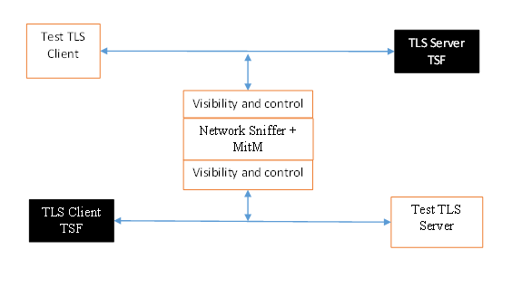

Functional Package for Transport Layer Security (TLS)
This page is best viewed with JavaScript enabled!
Version: 2.1
2025-08-25
TDs Applied Through: 2026-05-27 National Information Assurance Partnership
Revision History
Version
Date
Comment
1.0
2018-12-17
First publication
1.1
2019-03-01
Clarifications regarding override for invalid certificates, renegotiation_info extension, DTLS versions, and named Diffie-Hellman groups in DTLS contexts
2.0
2022-12-19
Added audit events, added TLS/DTLS 1.3 support, deprecated TLS 1.0 and 1.1, updated algorithms/ciphersuites in accordance with CNSA suite RFC and to consider PSK, restructured SFRs for clarity
2.1
2025-08-25
Updated for CC:2022 conformance, incorporated applicable errata.
Transport Layer Security (TLS) and the closely-related Datagram TLS (DTLS) are cryptographic protocols designed to provide communications security over IP networks. Several versions of the protocol are in widespread use in software that provides functionality such as web browsing, email, instant messaging, and voice-over-IP (VoIP). Major websites use TLS to protect communications to and from their servers. TLS is also used to protect communications between hosts and network infrastructure devices for administration. The underlying platform, such as an operating system, often provides the actual TLS implementation. The primary goal of the TLS protocol is to provide confidentiality and integrity of data transmitted between two communicating endpoints, as well as authentication of at least the server endpoint.
TLS supports many different methods for exchanging keys, encrypting data, and authenticating message integrity. These methods are dynamically negotiated between the client and server when the TLS connection is established. As a result, evaluating the implementation of both endpoints is typically necessary to provide assurance for the operating environment.
This "Functional Package for Transport Layer Security" (short name "TLS-PKG") defines functional requirements for the implementation of the TLS and DTLS protocols. The requirements are intended to improve the security of products by enabling their evaluation.
Note that this package frequently references the use of alert messages in the context of TLS and DTLS communications. Valid alerts are specified by IANA, referenced against applicable RFCs, at [IANA TLS Parameters]. This documentation should be consulted when determining whether an observed alert is consistent with expectations based on the test being performed when the alert is observed.
1.2 Terms
The following sections list Common Criteria and technology terms used in this document.
1.2.1 Common Criteria Terms
Assurance
Grounds for confidence that a TOE meets the SFRs [CC].
Base Protection Profile (Base-PP)
Protection Profile used as a basis to build a PP-Configuration.
Collaborative Protection Profile (cPP)
A Protection Profile developed by international technical communities and approved by multiple schemes.
Common Criteria (CC)
Common Criteria for Information Technology Security Evaluation (International Standard ISO/IEC 15408).
Common Criteria Testing Laboratory
Within the context of the Common Criteria Evaluation and Validation Scheme (CCEVS), an IT security evaluation facility accredited by the National Voluntary Laboratory Accreditation Program (NVLAP) and approved by the NIAP Validation Body to conduct Common Criteria-based evaluations.
Common Evaluation Methodology (CEM)
Common Evaluation Methodology for Information Technology Security Evaluation.
Direct Rationale
A type of Protection Profile, PP-Module, or Security Target in which the security problem definition (SPD) elements are mapped directly to the SFRs and possibly to the security objectives for the operational environment. There are no security objectives for the TOE.
Distributed TOE
A TOE composed of multiple components operating as a logical whole.
Extended Package (EP)
A deprecated document form for collecting SFRs that implement a particular protocol, technology, or functionality. See Functional Packages.
Functional Package (FP)
A document that collects SFRs for a particular protocol, technology, or functionality.
Operational Environment (OE)
Hardware and software that are outside the TOE boundary that support the TOE functionality and security policy.
Protection Profile (PP)
An implementation-independent set of security requirements for a category of products.
A comprehensive set of security requirements for a product type that consists of at least one Base-PP and at least one PP-Module.
Protection Profile Module (PP-Module)
An implementation-independent statement of security needs for a TOE type complementary to one or more Base-PPs.
Security Assurance Requirement (SAR)
A requirement to assure the security of the TOE.
Security Functional Requirement (SFR)
A requirement for security enforcement by the TOE.
Security Target (ST)
A set of implementation-dependent security requirements for a specific product.
Target of Evaluation (TOE)
The product under evaluation.
TOE Security Functionality (TSF)
The security functionality of the product under evaluation.
TOE Summary Specification (TSS)
A description of how a TOE satisfies the SFRs in an ST.
1.2.2 Technical Terms
Calling application
A TOE application that utilizes functions defined in this package to secure its communications with external entities
Certificate Authority (CA)
Issuer of digital certificates.
Common Name (CN)
A particular relative distinguished name (DN) that is a component of a DN in accordance with RFC 5280 usage of RFC 4519, interpreted as a string without further normalization. It is common, but not recommended, for TLS and the calling applications to interpret a CN entry using specific formatting. When such formatting is applied for interpreting a CN entry, the resulting name is referred to as an 'embedded CN name'. The various formats supported for interpreting CN entries are referred to as the 'embedded CN name types'.
Datagram Transport Layer Security (DTLS)
Cryptographic network protocol, based on TLS, which provides communications security for datagram protocols.
Presented identifier
A piece of data supplied by an external entity to identify itself to the calling application via an X.509 certificate as part of the (D)TLS handshake. The certificate may include one or more identifiers in the subject field of the certificate or in the Subject Alternative Name (SAN) extension. The presented identifier is compared to the reference identifier to determine the validity of the external entity.
Reference identifier
A piece of data defined by a calling application that is used to specify how an external entity is expected to present itself (such as the DNS name of a server that presents a certificate to the TOE).
Transport Layer Security (TLS)
Cryptographic network protocol for providing communications security over a TCP/IP network.
1.3 Compliant Targets of Evaluation
The Target of Evaluation (TOE) in this Package is a product that acts as a (D)TLS client, a (D)TLS server, or both. This Package describes the security functionality of TLS and DTLS in terms of [CC].
The contents of this Package must be appropriately combined with a PP or PP-Module. When this Package is instantiated by a PP or PP-Module, the Package must include selection-based requirements in accordance with the selections or assignments indicated in the PP or PP-Module. These may be expanded by the ST author.
The PP or PP-Module which instantiates this Package must typically include the following components in order to satisfy dependencies of this Package. It is the responsibility of the PP or PP-Module author who instantiates this Package to ensure that dependence on these components is satisfied:
Component
Explanation
FCS_CKM.1
To support TLS ciphersuites that use RSA, DHE or ECDHE for key establishment, the PP or PP-Module must include FCS_CKM.1 and specify the corresponding key generation algorithm.
FCS_CKM.2
To support TLS ciphersuites that use RSA, DHE or ECDHE for key establishment, the PP or PP-Module must include FCS_CKM.2 and specify the corresponding algorithm.
FCS_COP.1
To support TLS ciphersuites that use AES for encryption and decryption, the PP or PP-Module must include FCS_COP.1 (iterating as needed) and specify AES with corresponding key sizes and modes. To support TLS ciphersuites that use SHA for hashing, the PP or PP-Module must include FCS_COP.1 (iterating as needed) and specify SHA with corresponding digest sizes.
FCS_RBG.1
To support random bit generation needed for TLS key generation, the PP or PP-Module must include FCS_RBG.1 or an extended SFR that defines comparable functionality.
FIA_X509_EXT.1
To support validation of certificates needed during TLS connection setup, the PP or PP-Module must include FIA_X509_EXT.1.
FIA_X509_EXT.2
To support the use of X509 certificates for authentication in TLS connection setup, the PP or PP-Module must include FIA_X509_EXT.2.
An ST must identify the applicable version of the PP or PP-Module and this Package in its conformance claims.
2 Conformance Claims
Conformance Statement
An ST must claim exact conformance to this Functional Package.
The evaluation methods used for evaluating the TOE are a combination of the workunits defined in [CEM] as well as the Evaluation Activities for ensuring that individual SFRs and SARs have a sufficient level of supporting evidence in the Security Target and guidance documentation and have been sufficiently tested by the laboratory as part of completing ATE_IND.1. Any functional packages this PP claims similarly contain their own Evaluation Activities that are used in this same manner.
CC Conformance Claims
This Functional Package is conformant to Part 2 (extended) of Common Criteria CC:2022, Revision 1.
PP Claim
This Functional Package does not claim conformance to any Protection Profile.
There are no PPs or The following PPs and PP-Modules that are allowed to be specified in a PP-Configuration with this Functional Package:
Protection Profile for General Purpose Operating Systems, Version 5.0
Protection Profile for Mobile Device Fundamentals, Version 4.0
Protection Profile for Mobile Device Management, Version 5.0
This Functional Package is Functional Package for Transport Layer Security Version 2.1 conformant.
This Functional Package is Functional Package for X.509 Version 1.0 conformant.
This Functional Package does not conform to any assurance packages.
The functional packages to which the PP conforms may include SFRs that are not mandatory to claim for the sake of conformance. An ST that claims one or more of these functional packages may include any non-mandatory SFRs that are appropriate to claim based on the capabilities of the TSF and on any triggers for their inclusion based inherently on the SFR selections made.
3 Security Functional Requirements
This chapter describes the security requirements which have to be fulfilled by the product under evaluation. Those requirements comprise functional components from Part 2 of [CC]. The following conventions are used for the completion of operations:
Refinement operation (denoted by bold text or strikethrough text): Is used to add details to a requirement or to remove part of the requirement that is made irrelevant through the completion of another operation, and thus further restricts a requirement.
Selection (denoted by italicized text): Is used to select one or more options provided by the [CC] in stating a requirement.
Assignment operation (denoted by italicized text): Is used to assign a specific value to an unspecified parameter, such as the length of a password. Showing the value in square brackets indicates assignment.
Iteration operation: Is indicated by appending the SFR name with a slash and unique identifier suggesting the purpose of the operation, e.g. "/EXAMPLE1."
3.1 Auditable Events for Mandatory SFRs
The auditable events specified in this Functional Package are included in a Security Target if the incorporating PP or PP-Module supports audit event reporting through FAU_GEN.1 and all other criteria in the incorporating PP or PP-Module are met. Note that, if "None" is not selected in the "Auditable Events" column, it should not be selected in the "Additional Audit Record Contents" column. Likewise, if "None" is selected in the "Auditable Events" column, it should also be selected in the "Additional Audit Record Contents" column.
Table 1: Auditable Events for Mandatory Requirements
The evaluator shall examine the TSS to verify that the TLS and DTLS claims are consistent with those selected in the SFR
(
e.g., if
FCS
_TLS_EXT.1.1 claims "TLS as a client," the evaluator shall ensure that FCS_TLSC_EXT.1 is claimed as part of the TSF at minimum
)
.
Guidance
There are no additional Guidance evaluation activities for this element.
Tests
There are no test activities for this SFR; the following information is provided as an overview of the expected functionality and test environment for all subsequent SFRs.
Test Environment:
Tests for TLS 1.2 and TLS 1.3 include examination of the handshake messages and behavior of the TSF when presented with unexpected or invalid messages. For TLS 1.2 and below, previous versions of this Functional Package only required visibility of network traffic and the ability to modify a valid handshake message sent to the TSF.

Figure 1: Test environment for TLS 1.2 using network traffic visibility and control tools
TLS 1.3 introduces the encryption of handshake messages subsequent to the ServerHello exchange which prevents visibility and control using midpoint capabilities. To achieve equivalent validation of TLS 1.3 requires the ability to modify the traffic underlying the encryption applied after the ServerHello message. This can be achieved by introducing additional control of the messages sent, and visibility of messages received by the test TLS client, (when validating TLS server functionality) or the test server (when validating TLS client functionality).
Figure 2: Test environment for TLS 1.3 using custom endpoint capabilities for visibility and control
Typically, a compliant TLS 1.3 library modified to provide visibility and control of the handshake messages prior to encryption suffices for all tests. Such modification will require the test client, test server, or both to be validated.
Since validations of products supporting only TLS 1.2 are still expected under this Package, the test environment for TLS 1.2-only validations may include network sniffers and man-in-the-middle products that do not require such modifications to a compliant TLS 1.2 library. For consistency, a compliant TLS client (or TLS server) together with the network sniffers and man-in-the-middle capabilities will also be referred to as a test TLS client (or test TLS server, respectively) in the following evaluation activities.
Figure 3: Combined test environment for TLS 1.2 and TLS 1.3 using both network tools and custom endpoint capabilities
Appendix A - Optional Requirements
As indicated in the introduction to this Functional Package, the baseline requirements (those that must be performed by the TOE) are contained in the body of this Functional Package. This appendix contains three other types of optional requirements: The first type, defined in Appendix A.1 Strictly Optional Requirements, are strictly optional requirements. If the TOE meets any of these requirements the vendor is encouraged to claim the associated SFRs in the ST, but doing so is not required in order to conform to this Functional Package. The second type, defined in Appendix A.2 Objective Requirements, are objective requirements. These describe security functionality that is not yet widely available in commercial technology. Objective requirements are not currently mandated by this Functional Package, but will be mandated in the future. Adoption by vendors is encouraged, but claiming these SFRs is not required in order to conform to this Functional Package. The third type, defined in Appendix A.3 Implementation-dependent Requirements, are Implementation-dependent requirements. If the TOE implements the product features associated with the listed SFRs, either the SFRs must be claimed or the product features must be disabled in the evaluated configuration.
A.1 Strictly Optional Requirements
This Functional Package does not define any Strictly Optional requirements.
A.2 Objective Requirements
This Functional Package does not define any Objective requirements.
A.3 Implementation-dependent Requirements
This Functional Package does not define any Implementation-dependent requirements.
Appendix B - Selection-based Requirements
As indicated in the introduction to this Functional Package, the baseline requirements (those that must be performed by the TOE or its underlying platform) are contained in the body of this Functional Package. There are additional requirements based on selections in the body of the Functional Package: if certain selections are made, then additional requirements below must be included.
B.1 Auditable Events for Selection-based Requirements
The auditable events in the table below are included in a Security Target if both the associated requirement is included and the incorporating PP or PP-Module supports audit event reporting through FAU_GEN.1 and any other criteria in the incorporating PP or PP-Module are met.
Note that, if "None" is not selected in the "Auditable Events" column, it should not be selected in the "Additional Audit Record Contents" column. Likewise, if "None" is selected in the "Auditable Events" column, it should also be selected in the "Additional Audit Record Contents" column.
Table 2: Auditable Events for Selection-based Requirements
Requirement
Auditable Events
Additional Audit Record Contents
FCS_DTLSC_EXT.1
[selection, choose one of: Failure to establish a
DTLS
session, none]
[selection, choose one of: Reason for failure, None]
[selection, choose one of: Failure to verify presented identifier, none]
[selection, choose one of: Presented identifier and reference identifier, None]
[selection, choose one of: Establishment and termination of a DTLS session, none]
[selection, choose one of: Non-TOE endpoint of connection, None]
The TSF shall implement [selection: DTLS 1.2 (RFC 6347), DTLS 1.3 (RFC 9147)] as a client that supports additional functionality for session renegotiation protection and [selection:
mutual authentication
supplemental downgrade protection
session resumption
no optional functionality
] and shall abort attempts by a server to negotiate any DTLS version prior to DTLS 1.2 (RFC 6347).
The ST author will claim supported DTLS versions and optional functionality as appropriate for the claimed versions.
Session renegotiation protection is required for both DTLS 1.2 and DTLS 1.3, and the TSS must include the requirements from FCS_DTLSC_EXT.4. Within FCS_DTLSC_EXT.4, options for implementation of secure session renegotiation in DTLS 1.2 or rejecting renegotiation requests required in DTLS 1.3 and optionally supported in DTLS 1.2 are claimed.
If "mutual authentication" is selected, then the TSS must additionally include the requirements from FCS_DTLSC_EXT.2. If the TOE implements DTLS with mutual authentication, this selection must be made.
If "supplemental downgrade protection" is selected, then the TSS must additionally include the requirements from FCS_DTLSC_EXT.3. This is claimed when both DTLS 1.3 and DTLS 1.2 are supported and the client uses the method to reject downgrade. Note that TLS 1.1 or below downgrade protection in DTLS is used to notify a client that the server is capable of supporting DTLS 1.2 or DTLS 1.3, when it negotiates a DTLS 1.0 session because it received a ClientHello indicating maximum support for DTLS 1.0 (there is no DTLS version 1.1). Since this FP does not allow negotiation of DTLS 1.0, it is not necessary to claim such support.
If "session resumption" is selected, then the TSS must additionally include the requirements from FCS_DTLSC_EXT.5.
DTLS version numbers are denoted on the wire as the 1’s complement of the corresponding textual DTLS versions as described in RFC 6347, Section 4.1. DTLS version 1.2 is 0xfefd; DTLS version 1.3 is 0xfefc.
] offering the supported ciphersuites in a ClientHello message in preference order: [assignment: list of supported ciphersuites].
Application Note:
DTLS uses TLS ciphersuites. The ST author should select the ciphersuites that are supported, and must select at least one ciphersuite for each DTLS version supported – TLS 1.2 ciphersuites for DTLS 1.2 and TLS 1.3 ciphersuites for DTLS 1.3. Pre-shared secret ciphersuites for DTLS 1.2 are only claimed as required by a specific PP.
While mandatory for RFC 8446, TLS_AES_128_GCM_SHA256 is selectable by this SFR because it is expressly disallowed if the TSF intends to conform to CNSA restrictions on the supported algorithms.
In addition to the supported ciphersuites, the ST author indicates the order of ciphersuites included in the ClientHello, indicating the preferred ciphersuites for server negotiation. To eliminate the need to produce duplicate lists, it is recommended to complete the selected list of ciphersuites in the order that they are presented and then complete the following assignment by saying that the presentation order is the same as in the previous list. If more than one ordering is possible (e.g., the order is constructed dynamically based on some property of the system on which the TOE is running) the ST uses the assignment to specify a dynamic ordering and the describes in the TSS the conditions for presenting the ordering. It is recommended, but not required, that the TLS 1.3 ciphersuites claimed are listed before TLS 1.2 ciphersuites, and that any other ciphersuites are listed last among the TLS 1.3 ciphersuites.
and shall abort sessions where a server attempts to negotiate cryptographic options not enumerated in the ClientHello message.
Application Note:
This element explicitly excludes ciphersuites defined for TLS 1.2 and previous TLS or SSL versions that might be included in the ClientHello from a TSF that supports DTLS 1.2 (as the only supported version, or as a fallback version for DTLS 1.3 clients negotiating with potential DTLS 1.2 servers). The requirement also constrains the choice of DTLS 1.3 ciphersuites to the single TLS_AES_GCM_SHA384 ciphersuite specified in RFC 8446. In addition, this requirement prohibits Using Raw Public Keys in Transport Layer Security and Datagram Transport Layer Security (RFC 7250) for server certificates.
Ciphersuites for TLS 1.2 are of the form TLS_(key establishment algorithm)_WITH_(encryption algorithm)_(message digest algorithm), and are listed in the TLS parameters section of the internet assignments at iana.org. This requirement constrains the value of (encryption algorithm) and (message digest algorithm).
Ciphersuites for TLS 1.3 are of the form TLS_(AEAD)_(HASH), where (AEAD) is of the form (encryption algorithm)_(symmetric key length)_(mode) for an authenticated encryption with associated data specification (RFC 5116). This requirement constrains the value of the (encryption algorithm) component of (AEAD) and the value of (HASH).
Support for the signature_algorithms extension is optional in RFC 5246 but is mandated for this functional package in accordance with RFC 9151. Support for the signature_algorithms extension is mandatory in RFC 8446 and remains so in this functional package. Whether the TOE's implementation conforms to RFC 5246, RFC 8446, or both is dependent on whether the TOE supports DTLS 1.2, DTLS 1.3, or both.
If DTLS 1.3 is claimed in FCS_DTLSC_EXT.1.1, supported_versions, supported_groups, and key_share extensions are claimed in accordance with RFC 8446 and the tls_cert_with_extern_psk extension is claimed in accordance with RFC 8773. If TLS 1.3 is claimed, psk_key_exchange_modes indicating psk_dhe_ke mode is claimed in accordance with RFC 9151. If DTLS 1.3 is not claimed, supported_versions and key_share extensions are not claimed.
If DTLS 1.2 is claimed, extended_master_secret extension must be claimed, with the ability to enforce server support, and optionally, the ability to support legacy servers. The extended_master_secret extension (RFC 7627) selection cannot be claimed when only DTLS 1.3 is claimed. When both DTLS 1.2 and DTLS 1.3 are claimed, inclusion of the extended_master_secret extension in the ClientHello is required to support DTLS 1.2 and has no effect on DTLS 1.3 negotiation.
If DTLS 1.2 is supported and if ECDHE or DHE ciphersuites are claimed in FCS_DTLSC_EXT.1.2, the supported_groups extension is claimed here with appropriate secp and ffdhe groups claimed.
For compatibility purposes, DTLS clients may offer additional supported_groups values beyond what is specified in the selection.
Other extensions may be supported; certain extensions and values may need to be claimed for SFRs defined outside of this package related to the calling applications.
[assignment: other name type] according to [assignment: RFC number]
]
interface with a supported function requesting the DTLS channel to verify that a presented identifier
pass initial name constraints to the certification path processing function to verify, in accordance with FIA_X509_EXT.1, that the presented identifier
] matches a reference identifier for the requested DTLS server and shall abort the session if no match is found.
Application Note:
The ST author claims the supported options for verifying that the server is associated with an expected reference identifier. The first option is claimed if the TSF implements name matching. The option “interface with a supported function…” is claimed if the validated certification path, names extracted from the subject field and/or subject alternate name extension of a leaf certificate of a validated certification path, or normalized representations of names extracted from the leaf certificate are passed to a supported function for matching. The option “pass initial name constraints…” is claimed if the TSF formulates initial name constraints from the reference identifiers used by the certification path processing function. The final option is claimed if TLS 1.2 is supported and PSK ciphersuites are supported, and is used to associate the shared PSK with a known identifier.
If the TSF matches names, the rules for verification of identity are described in RFC 6125, Section 6 and RFC 5280, Section 7. If "Common name conversion..." is claimed, both the subject field and the converted common name are matched. The reference identifier is established by the user (e.g., entering a URL into a web browser or clicking a link), by configuration (e.g., configuring the name of a mail or authentication server), or by an application (e.g., a parameter of an API) depending on the supported function. The client establishes all acceptable reference identifiers for matching against the presented identifiers as validated in the server’s certificate. If the TSF performs matching of the reference identifiers to the identifiers provided in the server’s certificate, the first option is claimed and all supported name types are claimed. If the TSF presents the certificate, or the presented identifiers from the certificate to the supported function, the second option is claimed. If the TSF constructs initial name constraints derived from the reference identifiers for validation during certification path validation, the third option is claimed.
In most cases where DTLS servers are represented by DNS-type names, the preferred method for verification is the Subject Alternative Name using DNS, URI, or Service Names. Verification using a conversion of the Common Name relative distinguished name from a DNS name type in the subject field is allowed for the purposes of backward compatibility.
The client should avoid constructing reference identifiers using wildcards. However, if the presented identifiers include wildcards, the client must follow the best practices regarding matching; these best practices are captured in the evaluation activity. If the TSF supports wildcards and allows names with DNS portions containing internationalized names, the internationalized name should not match any wildcard, in accordance with RFC 6125 section 7.2.
Support for other name types is rare, but may be claimed for specific applications. If specified, the assignment includes both the RFC describing normalization and matching rules and any refinements necessary to resolve options available in the RFC.
The TSF shall not establish a trusted channel if the server certificate is invalid [selection: with no DTLS-specific exceptions, except when override is authorized in accordance with [assignment: override rules] in the case where valid revocation information is not available].
Application Note:
The option “except when…” is claimed if DTLS specific exception rules are implemented to allow server certificates with no valid revocation status information to be accepted. This is claimed only when FIA_X509_EXT.2.2 includes the option “supported function determines acceptance via…”. The assignment for when override is authorized describes the DTLS-specific processing to include the privileged users authorized to configure an override, and the duration of an override. It is preferred that overrides are minimized in scope and time. Otherwise, “with no DTLS-specific exceptions” is claimed.
Note that FIA_X509_EXT.1 may allow methods other than CRL or OCSP to validate the revocation status of a certificate. A certificate that exclusively uses these alternate methods may not advertise revocation status information locations. Thus, a certificate that is valid according to FIA_X509_EXT.1 and does not advertise revocation status information in a CRL_DP or AIA extension is considered to be not revoked. DTLS-specific override mechanisms are for use with certificates with published revocation status information that is not accessible, whether temporarily or because the information cannot be accessed during the state of the TOE (e.g., for verifying signatures on boot code). The circumstances should be described by the ST author, who should indicate the override mechanism and conditions that apply to the override, including system state, user or admin actions, etc.
The TSF shall [selection: terminate the DTLS session, silently discard the record] if a message received contains an invalid MAC or if decryption fails in the case of GCM and other AEAD ciphersuites.
Application Note:
All supported responses are claimed; at least one option is claimed.
The evaluator shall check the description of the implementation of this protocol in the TSS to ensure the supported DTLS versions, features, ciphersuites, and extensions are specified in accordance with RFC 6347 (DTLS 1.2) and RFC 9147 (DTLS 1.3 and updates to DTLS 1.2) and as refined in FCS_DTLSC_EXT.1 as appropriate.
The evaluator shall verify that ciphersuites indicated in FCS_DTLSC_EXT.1.2 are included in the description, and that none of the following ciphersuites are supported: ciphersuites indicating NULL, RC2, RC4, DES, IDEA, or TDES in the encryption algorithm component, indicating 'anon,' or indicating MD5 or SHA in the message digest algorithm component.
The evaluator shall verify that the DTLS implementation description includes the extensions as required in FCS_DTLSC_EXT.1.4.
The evaluator shall verify that the TSS describes applications that use the DTLS functions and how they establish reference identifiers.
If name matching is supported, the evaluator shall verify that the TSS includes a description of matching methods used for each supported name type to the supported application defined reference identifiers. The evaluator shall verify that the TSS includes a description of wildcards recognized for each name type claimed in FCS_DTLSC_EXT.1.5, if any, and shall verify that the matching rules meet or exceed best practices. In particular, the evaluator shall ensure that the matching rules are as restrictive as, or more restrictive than the following:
DNS names: The ‘*’ character used in the complete leftmost label of a DNS name represents any valid name that has the same number of labels, and that matches all remaining labels. The ‘*’ character must only be used in the leftmost complete label of a properly formatted DNS name. The ‘*’ must not be used to represent a public suffix, or in the leftmost label immediately following a public suffix.
URI or SRV names: The ‘*’ character can only occur in the domain name portion of the name represented as a DNS name. All restrictions for wildcards in DNS names apply to the DNS portion of the name. URI host names presented as an IP address are matched according to IP address matching rules – see best practices for IP addresses below. In accordance with RFC 6125, it is preferred that such URIs are presented a matching name of type IP address in the SAN.
IP addresses: RFC 5280 does not support IP address ranges as presented names, but indicates that presented names may be compared to IP address ranges present in name constraints. If the TSF supports IP address ranges as reference identifiers, the reference identifier matches if the presented name is in the range. IP ranges in name constraints (including reference identifiers) should be presented in CIDR format.
RFC 5322 names: RFC 5280 and updates RFC 8398 and RFC 8399 do not support special indicators representing more that a a single mailbox as a presented name, but indicates that presented names may be compared to a single mailbox, ‘any’ email address at a host, or ‘any’ email address on a domain (e.g., “example.com” matches any email address on the host example.com and “.example.com” matches any email address in the domain example.com, but does not match email addresses at the host “example.com”). Such matching is prohibited for internationalized RFC 5322 names.
Embedded CN name types: The CN relative distinguished name of a DNS name type included in the subject field is not strongly typed. Attempts to match both the name type and wildcard specifications can result in matches not intended, and therefore, not authoritatively asserted by a certification authority. It is preferred that no matching of CN embedded names be supported, but if necessary for backward compatibility, the description should clearly indicate how different name types are interpreted in the matching algorithm. If an embedded CN is present, the DN structure containing the CN as an RDN is matched, and the CN component is further matched according to the specific rules for the implied name type. In particular, the ‘*’ character in a CN is not to be interpreted as representing more than a single entity unless the entirety of the RDN is properly formatted as a DNS, URI, or SVR name, and represents a wildcard meeting best practices as described above.
If name types are passed to the supported functions, the evaluator shall verify that for each claimed supported function, the TSS includes a description of the information used to validate the identifier that is passed to that function.
If name constraints are passed to the certificate verification function, the evaluator shall verify that the TSS describes the initial allow and deny tables for each reference identity reference name supported.
The evaluator shall verify that the TSS describes how the DTLS client IP address is validated prior to issuing a ServerHello message.
If override rules are claimed in FCS_DTLSC_EXT.1.6, the evaluator shall confirm that the TSS identifies the subjects authorized to configure the override as well as the scope or duration of any overrides.
The evaluator shall verify that the TSS describes the actions that take place if a message received from the DTLS server fails the integrity check. If both selections are chosen in FCS_DTLSC_EXT.1.7, the evaluator shall verify that the TSS describes when each method is used and whether the behavior is configurable.
Guidance
The evaluator shall check the operational guidance to ensure that it contains instructions on configuring the product so that DTLS conforms to the description in the TSS and that it includes any instructions on configuring the version, ciphersuites, or optional extensions that are supported.
The evaluator shall verify that all configurable features for matching identifiers in certificates presented in the DTLS handshake to application specific reference identifiers are described.
If override rules are claimed in FCS_DTLSC_EXT.1.6, the evaluator shall verify the operational guidance has instructions for applying them.
If the TSS indicates the behavior of the TSF on receiving a message from the DTLS server that fails the MAC integrity check is configurable, the evaluator shall verify that the guidance documentation describes instructions for configuring the behavior.
Tests
The evaluator shall perform the following tests. :
Test FCS_DTLSC_EXT.1.1:1: (supported configurations) For each supported version, and for each supported ciphersuite associated with the version:
The evaluator shall establish a DTLS connection between the TOE and a test DTLS server that is configured to negotiate the tested version and ciphersuite in accordance with the RFC for the version.
The evaluator shall observe that the TSF presents a ClientHello indicating DTLS 1.2 (value 'fe fd') in the highest or legacy version field and, if DTLS 1.3 is supported, the "supported versions" extension is present and contains the value 'fe fc' for DTLS 1.3
The evaluator shall observe that the ClientHello indicates the supported ciphersuites in the order indicated, and that it includes only the extensions supported, with appropriate values, for that version in accordance with the requirement.
The evaluator shall observe that the TOE successfully completes the DTLS handshake.
Note: The highest version field is renamed to the legacy version field for DTLS 1.3. Regardless of the versions supported, this field is required to indicate DTLS 1.2. If the TOE supports both DTLS 1.2 and DTLS 1.3, the ClientHello should indicate all ciphersuites and all extensions as required for either version. In particular, the supported versions extension is required and must include the DTLS 1.3 value ('fe fc') and may also include the DTLS 1.2 indicator ('fe fd').
If the TOE is configurable to support only DTLS 1.2, only DTLS 1.3, or both DTLS 1.2 and DTLS 1.3, Test FCS_DTLSC_EXT.1.1:1 should be performed in each configuration, with ciphersuites and extensions appropriate for the configured version.
The connection in Test FCS_DTLSC_EXT.1.1:1 may be established as part of the establishment of a higher-level protocol, (e.g., as part of an EAP session).
It is sufficient to observe the successful negotiation of a ciphersuite to satisfy the intent of the test; it is not necessary to examine the characteristics of the encrypted traffic in an attempt to discern the ciphersuite being used (for example, that the cryptographic algorithm is 128-bit AES and not 256-bit AES).
Test FCS_DTLSC_EXT.1.1:2: (obsolete versions) The evaluator shall perform the following tests: [conditional, to be performed if
Test FCS_DTLSC_EXT.1.1:2.1: For each obsolete DTLS version (i.e., DTLS 1.0 is always obsolete, and DTLS 1.2 is obsolete if only DTLS 1.3 is supported), the evaluator shall initiate a DTLS connection from the TOE to a test DTLS server that is configured to negotiate the obsolete version and observe that the TSF silently drops the message or terminates the connection.
Note: If the TSF terminates the connection, the test is successful. If the TSF silently drops the message, the evaluator shall repeat sending the message until the TSF times out. It is preferred that the TSF logs a fatal error alert message (e.g., protocol version, insufficient security) in response to this, but it is acceptable that the TSF terminates the connection silently (i.e., without logging a fatal error alert).
follow the operational guidance to configure the TSF to ensure any supported beta DTLS 1.3 versions are disabled, as necessary. The evaluator shall send the TSF a ClientHello message indicating the supported
attempt to establish a connection with a test TLS server that is configured to send a server hello message indicating the selected version (referred to as the legacy version
the value 'fe fc' but without including the supported_versions extension and observe that the TSF responds with a ServerHello indicating DTLS 1.2, silently drops the message, or terminates the
a value corresponding to an undefined TLS (legacy) version (e.g., 'fe fb') and observe that the TSF terminates the connection.
Note: If the TSF responds with a ServerHello indicating DTLS 1.2 in the highest version or legacy version, the test is successful. If the TSF silently drops the message, the evaluator shall repeat sending the message until the TSF times out. It is preferred that the TSF logs a fatal error alert message (e.g., protocol version) in response to this response, but it is acceptable that the TSF terminates the connection silently (i.e., without logging a fatal error alert).
Test FCS_DTLSC_EXT.1.1:2.2 is intended to test the TSF response to non-standard versions, higher than indicated in the ClientHello's "highest version or legacy version" supported, including early proposals for 'beta DTLS 1.3' versions. If the TSF supports such beta versions, the evaluator shall follow the operational guidance instructions to disable them prior to conducting Test FCS_DTLSC_EXT.1.1:2.2.
Test FCS_DTLSC_EXT.1.1:3: (ciphersuites) The evaluator shall perform the following tests on handling unexpected ciphersuites using a test DTLS server sending handshake messages compliant with the negotiated version except as indicated in the test: :
Test FCS_DTLSC_EXT.1.1:3.1: (supported ciphersuite not offered) For each supported version, the evaluator shall attempt to establish a connection with a test DTLS server configured to negotiate the supported version and a ciphersuite not included in the ClientHello and observe that the TOE silently drops the message or rejects the connection.
Note: If the TSF rejects the connection, the test is successful. If the TSF silently drops the message, the evaluator shall repeat sending the ServerHello message until the TSF times out. It is preferred that the TSF logs a fatal error alert message (e.g., handshake failure) in response to this, but it is acceptable that the TSF terminates the connection silently (i.e., without logging a fatal error alert).
This test is intended to test the TSF’s generic ability to recognize non-offered ciphersuites. If the ciphersuites in the ClientHello are configurable, the evaluator shall configure the TSF not to offer a supported ciphersuite and then use that ciphersuite in the test. If the TSF ciphersuite list is not configurable, it is acceptable to use a named ciphersuite from the IANA TLS protocols associated with the tested version. Additional special cases of this test for special ciphersuites are performed separately.
Test FCS_DTLSC_EXT.1.1:3.2: (version confusion) For each supported version, the evaluator shall attempt to establish a connection with a test DTLS server that is configured to negotiate the supported version and a ciphersuite that is not associated with that version and observe that the TOE silently drops the message or rejects the connection.
Note: If the TSF rejects the connection, the test is successful. If the TSF silently drops the message, the evaluator shall continue sending the ServerHello until the TSF times out. It is preferred that the TSF logs a fatal error alert message (e.g., handshake failure) in response to this, but it is acceptable that the TSF terminates the connection silently (i.e., without logging a fatal error alert).
If the TSF supports DTLS 1.2, the evaluator shall use DTLS 1.3 ciphersuites for a server negotiating DTLS 1.2. If DTLS 1.3 is supported, the test server negotiating DTLS 1.3 should select a DTLS 1.2 ciphersuite consistent with the client's supported groups and signature algorithm indicated by extensions in the DTLS 1.3 ClientHello.
If the TOE is configurable to allow both DTLS 1.2 and DTLS 1.3 servers, the evaluator should use this configuration for the test, and configure the test server to use ciphersuites offered by the TSF in its ClientHello message.
Test FCS_DTLSC_EXT.1.1:3.3: (null ciphersuite) For each supported version, the evaluator shall attempt to establish a connection with a test TLS server configured to negotiate the null ciphersuite (TLS_NULL_WITH_NULL_NULL) and observe that the TOE silently discards the message or rejects the connection.
Note: If the TSF rejects the connection, the test is successful. If the TSF silently discards the message, the evaluator shall repeat the test until the TSF times out. It is preferred that the TSF logs a fatal error alert message (e.g., handshake failure, insufficient security) in response to this, but it is acceptable that the TSF terminates the connection silently (i.e., without logging a fatal error alert).
Test FCS_DTLSC_EXT.1.1:3.4: The evaluator shall perform one or more of the following tests to demonstrate the TOE does not connect with anonymous servers:
[conditional] (anon ciphersuite) If the TSF supports DTLS 1.2, the evaluator shall attempt to establish a DTLS 1.2 connection with a test TLS server configured to negotiate a ciphersuite using the anonymous server authentication method and observe that the TOE silently drops the message or rejects the connection.
Note: If the TSF rejects the connection, the test is successful. If the TSF silently drops the message the evaluator shall continue sending the ServerHello until the TSF times out. It is preferred that the TSF logs a fatal error alert message (e.g., handshake failure, insufficient security) in response to this, but it is acceptable that the TSF terminates the connection silently (i.e., without logging a fatal error alert).
See IANA TLS parameters for available ciphersuites to be selected by the test DTLS server. The test ciphersuite should use supported cryptographic algorithms for as many of the other components as possible. For example, if the TSF only supports the ciphersuite TLS_ECDHE_ECDSA_WITH_AES_256_GCM_SHA384, the test server could select TLS_DH_ANON_WITH_AES_256_GCM_SHA_384.
[conditional] (anon ciphersuite) If the TSF supports DTLS 1.3, the evaluator shall attempt to establish a DTLS 1.3 connection with a test DTLS server configured to assert a ‘raw public key’ in the server_certificate_type as defined in RFC 7250, and to send its certificate message including the raw public key indicator for the public key information field (regardless of the client's support for this extension). The evaluator shall observe that the TSF does not send the server_certificate_type extension indicating support for raw public keys in its ClientHello message and silently drops the message or terminates the session when receiving the server’s certificate message.
Note: If the TSF terminates the connection, the test is successful. If the TSF silently drops the message, the evaluator shall continue sending the ServerHello until the TSF times out. It is preferred that the TSF logs a fatal error alert message (e.g., bad_certificate, unsupported_certificate) in response to this, but it is acceptable that the TSF terminates the connection silently (i.e., without logging a fatal error alert).
It is acceptable for the TSF to support the extensions defined in RFC 7250. If so, it must not include the value indicating support for raw public keys in the server_certificate_type extension.
The evaluator shall perform one or more of the following tests to demonstrate that the TOE does not accept connections using disallowed ciphersuites:
[conditional] (disallowed encryption algorithm) If the TSF supports DTLS 1.2, for each disallowed encryption algorithm (NULL, RC2, RC4, DES, IDEA, and TDES), the evaluator shall attempt to establish a DTLS 1.2 connection with a test DTLS server configured to negotiate a ciphersuite using the disallowed encryption algorithm and observe that the TOE silently drops the message or rejects the connection.
[conditional] (disallowed encryption algorithm) If the TSF supports DTLS 1.3, the evaluator shall ensure that any DTLS 1.3 ciphersuite registered in IANA TLS parameters that the TSF does not claim support for cannot be used to establish a DTLS 1.3 connection. For any such ciphersuites, the evaluator shall attempt to establish a DTLS 1.3 connection with a test DTLS server configured to negotiate a ciphersuite using the disallowed ciphersuite and observe that the TOE silently drops the message or rejects the connection.
Note: If the TSF rejects the connection, the test is successful. If the TSF silently drops the message, the evaluator shall continue sending the ServerHello until the TSF times out. It is preferred that the TSF logs a fatal error alert message (e.g., handshake failure, insufficient security) in response to this, but it is acceptable that the TSF terminates the connection silently (i.e., without logging a fatal error alert).
See IANA TLS parameters for available ciphersuites to be tested. The test ciphersuite should use supported cryptographic algorithms for as many of the other components as possible. For example, if the TSF only supports TLS_ECDHE_ECDSA_WITH_AES_256_GCM_SHA384, the test server could select TLS_ECDHE_PSK_WITH_NULL_SHA_384, TLS_RSA_EXPORT_WITH_RC2_CBC_40_MD5, TLS_ECDHE_RSA_WITH_RC4_128_SHA, TLS_DHE_DSS_WITH_DES_CBC_SHA, TLS_RSA_WITH_IDEA_CBC_SHA, and TLS_ECDHE_RSA_WITH_3DES_EDE_CBC_SHA.
Test FCS_DTLSC_EXT.1.1:4: (extensions) For each supported version indicated in the following tests, the evaluator shall establish a connection from the TOE with a test server negotiating the tested version and providing server handshake messages as indicated when performing the following tests for validating proper extension handling: :
Test FCS_DTLSC_EXT.1.1:4.1: (signature_algorithms) [conditional] If the TSF supports certificate-based server authentication, the evaluator shall perform the following tests: :
Test FCS_DTLSC_EXT.1.1:4.1.1: For each supported version, the evaluator shall initiate a DTLS session with a DTLS test server and observe that the TSF’s ClientHello includes the signature_algorithms extension with values in conformance with the ST.
Test FCS_DTLSC_EXT.1.1:4.1.2: [conditional] If the TSF supports DTLS 1.2 and supports an ECDHE or DHE ciphersuite, the evaluator shall ensure the test DTLS server sends a compliant ServerHello message selecting DTLS 1.2 and one of the supported ECDHE or DHE ciphersuites, a compliant server certificate message, and a key exchange message signed using a signature algorithm and hash combination not included in the ClientHello message (e.g., RSA with SHA-1). The evaluator shall observe that the TSF silently drops the message or terminates the handshake.
Note: If the TSF terminates the handshake, the test is successful. If the TSF silently drops the message, the evaluator shall continue sending the ServerHello until the TSF times out. It is preferred that the TSF logs a fatal error alert message (e.g., handshake failure, illegal parameter, decryption error) in response to this, but it is acceptable that the TSF terminates the connection silently (i.e., without logging a fatal error alert).
Test FCS_DTLSC_EXT.1.1:4.1.3: [conditional] If DTLS 1.3 is supported, the evaluator shall configure the test DTLS server to respond to the TOE with a compliant ServerHello message selecting DTLS 1.3 and a server certificate message, but then also send a certificate verification message that uses a signature algorithm method not included in the signature_algorithms extension. The evaluator shall observe that the TSF only includes supported signature algorithms in the signature_algorithms extension in its ClientHello and silently drops the message or terminates the TLS handshake after receiving the server certificate message.
Note: If the TSF terminates the handshake, the test is successful. If the TSF silently drops the message, the evaluator shall continue sending the ServerHello until the TSF times out. It is preferred that the TSF logs a fatal error alert message (e.g., handshake failure, illegal parameter, bad certificate, decryption error) in response to this, but it is acceptable that the TSF terminates the connection silently (i.e., without logging a fatal error alert).
Test FCS_DTLSC_EXT.1.1:4.1.4: [conditional] If certificate-based authentication is supported, and for all supported versions for which signature_algorithms_cert is not supported, the evaluator shall ensure the test DTLS server sends a compliant ServerHello message for the tested version and a server certificate message containing a valid certificate that represents the test DTLS server, but which is signed using a signature and hash combination not included in the TSF’s signature_algorithms extension (e.g., a certificate signed using RSA and SHA-1). The evaluator shall observe that the TSF silently drops the message or terminates the TLS session.
Note: If the TSF terminates the handshake, the test is successful. If the TSF silently drops the message, the evaluator shall continue sending the ServerHello until the TSF times out. It is preferred that the TSF logs a fatal error alert message (e.g., unsupported certificate, bad certificate, decryption error, handshake failure) in response to this, but it is acceptable that the TSF terminates the connection silently (i.e., without logging a fatal error alert).
Certificate-based server authentication is required unless the TSF only supports DTLS with PSK authentication. DTLS 1.3 always requires certificate-based server authentication (even if a PSK is also supported for key exchange), so the only circumstance where this would apply is if DTLS 1.2 is claimed and the only supported ciphersuites are the TLS_*_PSK ciphersuites defined in RFCs 5487 and 8442.
Test FCS_DTLSC_EXT.1.1:4.2: (signature_algorithms_cert) [conditional] If signature_algorithms_cert is supported, then for each version that uses the signature_algorithms_cert extension, the evaluator shall ensure that the test DTLS server sends a compliant ServerHello message selecting the tested version and indicating certificate-based server authentication.
The evaluator shall ensure that the test DTLS server forwards a certificate message containing a valid certificate that represents the test DTLS server, but which is signed by a valid Certification Authority using a signature and hash combination not included in the TSF’s signature_algorithms_cert extension (e.g., a certificate signed using RSA and SHA-1). The evaluator shall confirm the TSF silently drops the message or terminates the session.
Note: Certificate-based server authentication is required unless the TSF only supports DTLS with PSK authentication. DTLS 1.3 always requires certificate-based server authentication (even if a PSK is also supported for key exchange), so the only circumstance where this would apply is if DTLS 1.2 is claimed and the only supported ciphersuites are the TLS_*_PSK ciphersuites defined in RFCs 5487 and 8442. If the TSF only supports PSK authentication, Test FCS_DTLSC_EXT.1.1:4.2 is not performed.
For DTLS 1.3, the server certificate message is encrypted. The evaluator shall configure the test DTLS server with the indicated certificate and ensure that the certificate is indeed sent by observing the buffer of messages to be encrypted, or by inspecting one or both sets of logs from the TSF and test DTLS server.
If the TSF terminates the handshake, the test is successful. If the TSF silently drops the server certificate message, the evaluator shall continue sending the message until the TSF times out. It is preferred that the TSF logs a fatal error alert message (e.g., unsupported certificate, bad certificate, decryption error, handshake failure) in response to this, but it is acceptable that the TSF terminates the connection silently (i.e., without logging a fatal error alert).
Test FCS_DTLSC_EXT.1.1:4.3: (extended_master_secret for DTLS 1.2) [conditional] If the TSF supports DTLS 1.2, the evaluator shall establish a connection from the TOE with a test DTLS server configured as described in the following test and observe the behavior.
Note: If the TSF terminates the session, the test is successful. If the TSF silently drops the message, the evaluator shall continue sending the ServerHello until the TSF times out. It is preferred that the TSF logs a fatal error alert message (e.g., handshake failure) in response to this, but it is acceptable that the TSF terminates the connection silently (i.e., without logging a fatal error alert).
In addition to mandatory tests 1-2:
if the TOE supports Legacy Servers, also perform test 3;
if the TOE supports session resumption, also perform tests 6-7;
The evaluator shall configure the TSF (if so configurable) to enforce server support of extended master secret computation (no other enforcement mode) and initiate a DTLS 1.2 session with a test DTLS server configured to use the extended_master_secret extension/compute a master secret according to RFC 7627, section 4.
The evaluator shall observe that the TSF’s ClientHello includes the extended_master_secret extension in accordance with RFC 7627, and ensures that the test DTLS server includes the extended_master_secret extension in its ServerHello. The evaluator shall observe that the DTLS session between the TOE and DTLS Server is established successfully.
The evaluator shall configure the TSF (if so configurable) to enforce server support of extended master secret computation (no other enforcement mode) and initiate a DTLS 1.2 session with a test DTLS server configured to omit the extended_master_secret extension/compute a master secret according to RFC 5246, section 8.
The evaluator shall observe that the TSF’s ClientHello includes the extended_master_secret extension in accordance with RFC 7627 and ensure that the test DTLS server does not include the extended_master_secret extension in its ServerHello. The evaluator shall observe that the TSF silently drops the message or terminates the connection in accordance with the behavior documented in the ST and the DTLS session between the TOE and DTLS Server fails.
[conditional] If the TOE supports allowing legacy servers the evaluator shall configure the TSF (if so configurable) to allow legacy servers and initiate a DTLS 1.2 session with a test DTLS server configured to omit the extended_master_secret extension/compute a master secret according to RFC 5246, section 8.
The evaluator shall observe that the TSF’s ClientHello includes the extended_master_secret extension in accordance with RFC 7627 and ensures that the test DTLS server does not include the extended_master_secret extension in its ServerHello. The evaluator shall observe that the DTLS session between the TOE and DTLS Server is established successfully.
[conditional] If the TOE supports allowing legacy servers, and the TOE supports DTLS session resumption, the evaluator shall configure the TSF (if so configurable) to allow legacy servers and resume a DTLS 1.2 session that previously computed the master secret in accordance with RFC 5246, section 8 (did not use the extended_master_secret extension in accordance with RFC 7627) with a test DTLS server configured to include the extended_master_secret extension/compute a master secret according to RFC 7627, section 4.
The evaluator shall observe that the TSF’s ClientHello omits the extended_master_secret extension and ensures that the test DTLS server includes the extended_master_secret extension in its ServerHello. The evaluator shall observe that the TSF silently drops the message or terminates the connection (Section 5.3 of RFC 7627) in accordance with the behavior documented in the ST and the DTLS session between the TOE and DTLS Server fails.
[conditional] If the TOE supports allowing legacy servers, and the TOE supports DTLS session resumption, the evaluator shall configure the TSF (if so configurable) to allow legacy servers and resume a DTLS 1.2 session that previously used the extended_master_secret extension in accordance with RFC 7627 with a test DTLS server configured to omit the extended_master_secret extension.
The evaluator shall observe that the TSF’s ClientHello includes the extended_master_secret extension in accordance with RFC 7627 and ensures that the test DTLS server does not include the extended_master_secret extension in its ServerHello. The evaluator shall observe that the TSF silently drops the message or terminates the connection (Section 5.3 of RFC 7627) in accordance with the behavior documented in the ST and the DTLS session between the TOE and DTLS Server fails.
[conditional] If the TOE supports DTLS session resumption, the evaluator shall configure the TSF (if so configurable) to enforce server support of extended master secret computation (no other enforcement mode) and resume a DTLS 1.2 session that previously computed the master secret in accordance with RFC 5246, section 8 (did not use the extended_master_secret extension in accordance with RFC 7627) with a test DTLS server configured to include the extended_master_secret extension/compute a master secret according to RFC 7627, section 4.
The evaluator shall observe that the TSF’s ClientHello omits the extended_master_secret extension and ensures that the test DTLS server includes the extended_master_secret extension in its ServerHello. The evaluator shall observe that the TSF silently drops the message or terminates the connection (Section 5.3 of RFC 7627) in accordance with the behavior documented in the ST and the DTLS session between the TOE and DTLS Server fails.
[conditional] If the TOE supports DTLS session resumption, the evaluator shall configure the TSF (if so configurable) to enforce server support of extended master secret computation (no other enforcement mode) and resume a DTLS 1.2 session that previously used the extended_master_secret extension in accordance with RFC 7627 with a test DTLS server configured to omit the extended_master_secret extension.
The evaluator shall observe that the TSF’s ClientHello includes the extended_master_secret extension in accordance with RFC 7627 and ensures that the test DTLS server does not include the extended_master_secret extension in its ServerHello. The evaluator shall observe that the TSF silently drops the message or terminates the connection (Section 5.3 of RFC 7627) in accordance with the behavior documented in the ST and the DTLS session between the TOE and DTLS Server fails.
Test FCS_DTLSC_EXT.1.1:4.4: (supported_groups for DTLS 1.2) [conditional] If the TSF supports DTLS 1.2, and supports ECDHE or DHE ciphersuites, the evaluator shall perform the following tests. :
Test FCS_DTLSC_EXT.1.1:4.4.1: For each supported group, the evaluator shall initiate a DTLS session with a compliant test DTLS 1.2 server supporting RFC 7919. The evaluator shall ensure that the test DTLS server is configured to select DTLS 1.2 and a ciphersuite using the supported group. The evaluator shall observe that the TSF’s ClientHello lists the supported groups as indicated in the ST, and that the TSF successfully establishes the DTLS session.
Test FCS_DTLSC_EXT.1.1:4.4.2: [conditional on DTLS 1.2 support for ECDHE ciphersuites] The evaluator shall initiate a DTLS session with a test DTLS server that is configured to negotiate DTLS 1.2 and use an explicit version of a named EC group supported by the client. The evaluator shall ensure that the test DTLS server key exchange message includes the explicit formulation of the group in its key exchange message as indicated in RFC 4492, Section 5.4. The evaluator shall confirm that the TSF silently drops the message or terminates the session.
Note:: If the TSF terminates the session, the test is successful. If the TSF silently drops the message, the evaluator shall continue sending the ServerHello until the TSF times out. It is preferred that the TSF logs a fatal error alert message (e.g., illegal parameter) in response to this, but it is acceptable that the TSF terminates the connection silently (i.e., without logging a fatal error alert).
Test FCS_DTLSC_EXT.1.1:5: (DTLS 1.3 extensions) [conditional] If the TSF supports DTLS 1.3, the evaluator shall perform the following tests. For each test, the evaluator shall observe that the TSF’s ClientHello includes the supported versions extension with the value 'fe fc' indicating DTLS 1.3: :
Test FCS_DTLSC_EXT.1.1:5.1: (supported versions) The evaluator shall initiate DTLS 1.3 sessions in turn from the TOE to a test DTLS server configured as indicated in the sub-tests below: :
Test FCS_DTLSC_EXT.1.1:5.1.1: The evaluator shall configure the test DTLS server to include the supported versions extension in the ServerHello only containing the value 'fe fe.' The evaluator shall observe that the TSF silently drops the message or terminates the DTLS session.
Note: If the TSF terminates the session, the test is successful. If the TSF silently drops the message, the evaluator shall continue sending the ServerHello until the TSF times out. It is preferred that the TSF logs a fatal error alert message (e.g., illegal parameter, handshake failure, protocol version) in response to this, but it is acceptable that the TSF terminates the connection silently (i.e., without logging a fatal error alert).
Test FCS_DTLSC_EXT.1.1:5.1.2: The evaluator shall configure the test DTLS server to include the supported versions extension in the ServerHello containing the value 'fe fc' and complete a compliant DTLS 1.3 handshake. The evaluator shall observe that the TSF completes the DTLS 1.3 handshake successfully.
Test FCS_DTLSC_EXT.1.1:5.1.3: [conditional] If the TSF is configurable to support both DTLS 1.2 and DTLS 1.3, the evaluator shall follow operational guidance to configure this behavior. The evaluator shall ensure that the test DTLS server sends a DTLS 1.2 compliant server handshake and observe that the server random does not incidentally include any downgrade messaging. The evaluator shall observe that the TSF completes the DTLS 1.2 handshake successfully.
Note: Enhanced downgrade protection defined in RFC 8446 is optional, and if supported, is tested separately. The evaluator may configure the test server’s random, or may repeat the test until the server’s random does not match a downgrade indicator.
Test FCS_DTLSC_EXT.1.1:5.2: (supported groups, key shares) The evaluator shall initiate DTLS 1.3 sessions in turn with a test DTLS server configured as indicated in the following sub-tests: :
Test FCS_DTLSC_EXT.1.1:5.2.1: For each supported group, the evaluator shall configure the compliant test DTLS 1.3 server to select a ciphersuite using the group. The evaluator shall observe that the TSF sends an element of the group in its ClientHello key_share extension (after a HelloRetryRequest message from the test server, if the key share for the group is not included in the initial ClientHello). The evaluator shall ensure the test DTLS server sends an element of the group in its ServerHello and observes that the TSF completes the DTLS handshake successfully.
Test FCS_DTLSC_EXT.1.1:5.2.2: For each supported group, the evaluator shall modify the ServerHello sent by the test DTLS server to include an invalid key_share value claiming to be an element the group indicated in the supported_groups extension. The evaluator shall observe that the TSF silently drops the message or terminates the DTLS session.
Note: If the TSF terminates the session, the test is successful. If the TSF silently drops the message, the evaluator shall continue sending the ServerHello until the TSF times out. It is preferred that the TSF logs a fatal error alert message (e.g., illegal parameter) in response to this, but it is acceptable that the TSF terminates the connection silently (i.e., without logging a fatal error alert).
For DHE ciphersuites, a zero value, or a value greater or equal to the modulus is not a valid element. For ECDHE groups, an invalid point contains x and y coordinates of the correct size, but represents a point not on the curve. The evaluator shall construct such an invalid point by modifying a byte in the y coordinate of a valid point and verify that the coordinates do not satisfy the curve equation.
Test FCS_DTLSC_EXT.1.1:5.3: (PSK support) [conditional] If the TSF supports pre-shared keys, the evaluator shall follow the operational guidance to use pre-shared keys, shall establish a pre-shared key between the TSF and the test DTLS server, and initiate DTLS 1.3 sessions in turn between the TSF and the test DTLS server configured as indicated in the following sub-tests: :
The evaluator shall configure the TSF to use the pre-shared key and ensure that the test DTLS server functions as a compliant DTLS 1.3 server. The evaluator shall observe that the TSF’s ClientHello includes the pre_shared_key extension with the valid PSK indicator shared with the test server. The evaluator shall also observe that the TSF’s ClientHello also includes the psk_key_exchange_modes and the post_handshake_auth extensions and that the psk_key_exchange_modes indicates psk_dhe_ke (the DHE or ECDHE mode) but does not include psk_ke (the PSK-only mode). The evaluator shall observe that the TSF completes the DTLS 1.3 handshake successfully in accordance with RFC 9147, to include the TSF sending appropriate key shares for one or more of the supported groups.
Once the handshake is successful, the evaluator shall cause the test DTLS server to send a certificate request and observe that the TSF provides a certificate message and certificate verify message.
Note: It may be necessary to complete a standard handshake and send a new-ticket message from the test DTLS server to establish a pre-shared key, or it might be possible to configure the pre-shared key manually via out-of-band mechanisms. This can be performed in conjunction with other testing that is not tested as part of this SFR. It is not required at this time to support emerging standards on establishing PSK, but as such standards are finalized, this FP may be updated to require such support.
DTLS messages after the handshake are encrypted so it may not be possible to observe the certificate and certificate verify messages sent by the TSF directly. The evaluator may need to configure the test DTLS server to use an application that requires post-handshake client authentication and terminates the session or otherwise has an observable effect if the certificate is not provided.
Test FCS_DTLSC_EXT.1.1:5.3.2: The evaluator shall attempt to configure the TSF to send early data. If there is no indication from the TSF that this is blocked, the evaluator shall repeat test 5.3.1 with the TSF so configured and observe that the TSF does not send application data prior to receiving the ServerHello.
Note: Early data will be encrypted under the PSK and received by the test DTLS server prior to it sending a ServerHello message.
Test FCS_DTLSC_EXT.1.1:6: (corrupt finished message) For each supported version, the evaluator shall initiate a DTLS session from the TOE to a test DTLS server that sends a compliant set of server handshake messages, except for sending a modified finished message (modify a byte of the finished message that would have been sent by a compliant server). The evaluator shall observe that the TSF silently drops the message or terminates the session and in either case, does not complete the handshake by observing that the TSF does not send application data provided to the DTLS channel.
Test FCS_DTLSC_EXT.1.1:7: (missing finished message) For each supported version, the evaluator shall initiate a session from the TOE to a test DTLS server providing a compliant handshake, except for sending a random DTLS message (the five byte header indicates a correct DTLS message for the negotiated version, but not indicating a finished message) as the final message. The evaluator shall observe that the TSF silently drops the message or terminates the session and in either case, does not send application data.
Note: If the TSF terminates the session, the test is successful. If the TSF silently drops the message, the evaluator shall continue sending the server finished until the TSF times out. It is preferred that the TSF logs a fatal error alert message (e.g., decryption error) in response to this, but it is acceptable that the TSF terminates the connection silently (i.e., without logging a fatal error alert).
For DTLS 1.2, the modified message is sent after the change_cipher_spec message. For DTLS 1.3, the modified message is sent as the last message of the server’s second flight of messages.
Test FCS_DTLSC_EXT.1.1:8: (unexpected/corrupt signatures within handshake) The evaluator shall perform the following tests, according to the versions supported. :
Test FCS_DTLSC_EXT.1.1:8.1: [conditional] If the TSF supports DTLS 1.2 and if the ST indicates support for ECDSA or DSA ciphersuites, the evaluator shall initiate a DTLS session with a compliant test DTLS server and modify the signature in the server key exchange message. The evaluator shall observe that the TSF silently drops the key exchange message or terminates the session.
Test FCS_DTLSC_EXT.1.1:8.2: [conditional] If the ST indicates support for DTLS 1.3, the evaluator shall initiate a DTLS session between the TOE and a test DTLS server that is configured to send a compliant ServerHello message, encrypted extension message, and certificate message, but will send a certificate verify message with an invalid signature (e.g., by modifying a byte from a valid signature). The evaluator shall confirm that the TSF silently drops the message or terminates the session.
Test FCS_DTLSC_EXT.1.1:8.3: [conditional] If the TSF supports DTLS 1.2 and if the ST indicates support for both RSA and ECDSA methods in the signature_algorithm (or, if supported, the signature_algorithms_cert) extension, and if the ST indicates one or more DTLS 1.2 ciphersuites indicating each of the RSA and ECDSA methods in its signature components, the evaluator shall choose two ciphersuites: one indicating an RSA signature (cipher 1) and one indicating an ECDSA signature (cipher 2). The evaluator shall then establish two certificates that are trusted by the TOE: one representing the test DTLS 1.2 server using an RSA signature (cert 1) and one representing the test DTLS 1.2 server using an ECDSA signature (cert 2). The evaluator shall initiate a DTLS session between the TOE and the test DTLS 1.2 server that is configured to select cipher 1 and to send cert 2. The evaluator shall verify that the TSF silently drops the message or terminates this DTLS session. The evaluator shall then initiate a DTLS session between the TOE and the test DTLS 1.2 server that is configured to select cipher 2 and to send cert 1. The evaluator shall verify that the TSF also silently drops the message or terminates this DTLS session.
Note: If the TSF terminates the session, the test is successful. If the TSF silently drops the message, the evaluator shall continue sending the server finished until the TSF times out. It is preferred that the TSF logs a fatal error alert message (e.g., bad certificate, decryption error, handshake failure) in response to this, but it is acceptable that the TSF terminates the connection silently (i.e., without logging a fatal error alert).
Test FCS_DTLSC_EXT.1.1:9: [conditional] If the TSF supports certificate-based server authentication, then for each supported version, the evaluator shall initiate a DTLS session from the TOE to the compliant test DTLS server configured to negotiate the tested version, and to authenticate using a certificate trusted by the TSF as specified in the following: :
(certificate extended key usage purpose) The evaluator shall send a server certificate that contains the Server Authentication purpose in the ExtendedKeyUsage extension and verify that a connection is established. The evaluator shall repeat this test using a different certificate that is otherwise valid and trusted but lacks the Server Authentication purpose in the ExtendedKeyUsage extension and observe the TSF silently drops the certificate message or terminates the session.
Note: This test is not performed if only DTLS 1.2 with PSK ciphersuites are supported; it is required if DTLS 1.2 is supported and ciphersuites other than PSK ciphersuites are supported, or if DTLS 1.3 is supported.
If the TSF terminates the session, the test is successful. If the TSF silently drops the message, the evaluator shall continue sending the server certificate and certificate verify messages until the TSF times out. It is preferred that the TSF logs a fatal error alert message (e.g., bad certificate, decryption error, handshake failure) in response to this, but it is acceptable that the TSF terminates the connection silently (i.e., without logging a fatal error alert).
Ideally, the two certificates should be similar in regards to structure, the types of identifiers used, and the chain of trust.
Test FCS_DTLSC_EXT.1.1:9.2: (certificate identifiers) For each supported method of matching presented identifiers, and for each name type for which the TSF parses the presented identifiers from the server certificate for the method, the evaluator shall establish a valid certificate trusted by the TSF to represent the test server using only the tested name type. The evaluator shall perform the following sub-tests: :
Note: If the TSF terminates the session, the test is successful. If the TSF silently drops the message, the evaluator shall continue sending the server certificate and certificate verify messages until the TSF times out.
Test FCS_DTLSC_EXT.1.1:9.2.1: The evaluator shall prepare the TSF as necessary to use the matching method and establish reference identifiers for the test server for the tested name type. The evaluator shall ensure the test DTLS server sends a certificate with a matching name of the tested name type and observe that the TSF completes the connection.
Test FCS_DTLSC_EXT.1.1:9.2.2: The evaluator shall prepare the TSF as necessary to use the matching method and establish reference identifiers that do not match the name representing the test server. The evaluator shall ensure the test DTLS server sends a certificate with a name of the type tested, and observe the TSF silently drops the message or terminates the session.
Note: If the TSF terminates the session, the test is successful. If the TSF silently drops the message, the evaluator shall continue sending the server finished until the TSF times out. It is preferred that the TSF logs a fatal error alert message (e.g., bad certificate, unknown certificate) in response to this, but it is acceptable that the TSF terminates the connection silently (i.e., without logging a fatal error alert).
Test FCS_DTLSC_EXT.1.1:9.2.3: [conditional] If the TSF supports wildcards for a DNS, URI, or SVR name type, the evaluator shall prepare the TSF as necessary to use the matching method for the name type, and establish a reference identifier. The evaluator shall establish a certificate for the test server that includes a wildcard name for the DNS portion of the appropriate name type which matches the reference identifier. The evaluator shall ensure the DTLS server sends the certificate containing the wildcard name of the type tested, and observe that the TSF completes the connection.
Test FCS_DTLSC_EXT.1.1:9.2.4: [conditional] If the TSF supports a DNS, URI, or SVR name type, but does not support wildcards (in general, or specifically for internationalized names of the specified type), the evaluator shall prepare the TSF as necessary to use the matching method and establish a reference identifier that matches a wildcard name for the DNS portion of the appropriate name type, in accordance with the appropriate RFC, in a certificate representing the server. The evaluator shall ensure the DTLS server sends the certificate containing the wildcard name of the type tested, and observe that the TSF silently drops the message or terminates the connection.
Note: If the TSF terminates the session, the test is successful. If the TSF silently drops the message, the evaluator shall continue sending the server finished until the TSF times out. If the TSF's ability to support wildcard certificates is configurable, both Test FCS_DTLSC_EXT.1.1:9.2.3 and Test FCS_DTLSC_EXT.1.1:9.2.4 are performed under the appropriate configuration. This test is required if the TSF supports internationalized names of the specified type – in this case, the reference identifier only includes an internationalized encoding in the leftmost label. The certificate used is intended to match the certificate as if wildcards were supported and if the wildcard extended to internationalized names.
Test FCS_DTLSC_EXT.1.1:9.2.5: [conditional] If the TSF supports wildcards for a DNS, URI, or SVR name type, the evaluator shall prepare the TSF as necessary to use the matching method. The evaluator shall establish a reference identifier and a certificate for the server as indicated in each of the sub-tests described below. The evaluator shall in turn, ensure the DTLS server sends the certificate associated with the reference identifier and observe that the TSF silently drops the message or terminates the session. :
Note: For negative sub-tests, if the TSF terminates the session, the test is successful. If the TSF silently drops the message, the evaluator shall continue sending the server finished until the TSF times out.
Test FCS_DTLSC_EXT.1.1:9.2.5.1: The reference identifier contains a DNS portion with two labels, and the certificate includes a name whose DNS portion includes a matching rightmost label and a wildcard in the leftmost label (e.g., *.com).
Test FCS_DTLSC_EXT.1.1:9.2.5.2: The reference identifier contains a DNS portion with two labels, and the certificate includes a name whose DNS portion includes two rightmost labels matching the reference identifier, and a wildcard in a third (leftmost) label (e.g., *.example.com, which does not match "example.com").
Test FCS_DTLSC_EXT.1.1:9.2.5.3: The reference identifier contains a DNS portion with four labels, and the certificate includes a name whose DNS portion includes two rightmost labels matching the reference identifier, and a wildcard in the third label, and a matching identifier in the fourth (leftmost) label (e.g., foo.*.example.com).
Note: For negative sub-tests, if the TSF terminates the session, the test is successful. If the TSF silently drops the message, the evaluator shall continue sending the server finished until the TSF times out.
Test FCS_DTLSC_EXT.1.1:9.2.7: [conditional] If the TSF supports IP addresses as an embedded name type in the CN, the evaluator shall establish an IP address as a reference identifier and establish a certificate with a valid DNS name in the subject field, including a CN whose value is the digital formatting of the octets of the reference identifier. The evaluator shall ensure the server sends the certificate and observe that the TSF successfully completes the session.
Test FCS_DTLSC_EXT.1.1:9.2.8: [conditional] If the TSF supports IP addresses and any embedded name type in the CN, the evaluator shall establish an IP address as a reference identifier and establish a certificate with a valid DNS name in the subject field, including a CN whose value is the digital formatting of the octets of the reference identifier (as in Test FCS_DTLSC_EXT.1.1:9.2.7 ) except that one of the octets is replaced by the ‘*’ character. The evaluator shall ensure the server sends the certificate and observe that the TSF silently drops the message or terminates the session.
Note: If the TSF terminates the session, the test is successful. If the TSF silently drops the message, the evaluator shall continue sending the server certificate and certificate verify messages until the TSF times out.
Test FCS_DTLSC_EXT.1.1:9.3: (mixed identifiers)[conditional] If the TSF supports a name matching method where the TSF performs matching of both CN-encoded name types and SAN names of the same type, then for each such method, and for each such name type, the evaluator shall establish a valid certificate trusted by the TSF to represent the test server using one name for the CN-encoded name type and a different name for the SAN name type The evaluator shall perform the following tests: :
Test FCS_DTLSC_EXT.1.1:9.3.1: The evaluator shall follow the operational guidance to configure the TSF to use the name matching method and establish reference identifiers matching only the SAN. The evaluator shall ensure that the test server sends the certificate with the matching SAN and non-matching CN-encoded name, and observe that the TSF completes the connection.
Note: Configuration of the TSF may depend on the application using DTLS.
Test FCS_DTLSC_EXT.1.1:9.3.2: The evaluator shall follow the operational guidance to configure the TSF to use the name matching method and establish reference identifiers matching only the CN-encoded name. The evaluator shall ensure that the test server sends the certificate with the matching CN-encoded name and matching SAN name, and observe that the TSF silently drops the message or terminates the session.
If the TSF terminates the session, the test is successful. If the TSF silently drops the message, the evaluator shall continue sending the server certificate and certificate verify messages until the TSF times out. It is preferred that the TSF logs a fatal error alert message (e.g., bad certificate, unknown certificate) in response to this, but it is acceptable that the TSF terminates the connection silently (i.e., without logging a fatal error alert).
Test FCS_DTLSC_EXT.1.1:9.4: (empty certificate) The evaluator shall configure the test DTLS server to supply an empty certificate message and verify that the TSF silently drops the message or terminates the session.
Note: If the TSF terminates the session, the test is successful. If the TSF silently drops the message, the evaluator shall continue sending the server certificate and certificate verify messages until the TSF times out. It is preferred that the TSF logs a fatal error alert message (e.g., bad certificate, unknown certificate) in response to this, but it is acceptable that the TSF terminates the connection silently (i.e., without logging a fatal error alert).
Test FCS_DTLSC_EXT.1.1:9.5: (invalid certificate) [conditional] If validity exceptions are supported, then for each exception for certificate validity supported, the evaluator shall configure the TSF to allow the exception and ensure the test DTLS server sends a certificate that is valid and trusted, except for the allowed exception. The evaluator shall observe that the TSF completes the session.
Without modifying the TSF configuration, the evaluator shall initiate a new session with the test DTLS server that includes an additional validation error, and observe that the TSF silently drops the message or terminates the session.
Note: If the TSF terminates the session, the test is successful. If the TSF silently drops the message, the evaluator shall continue sending the server certificate and certificate verify messages until the TSF times out. It is preferred that the TSF logs a fatal error alert message (e.g., decode error, bad certificate) in response to this, but it is acceptable that the TSF terminates the connection silently (i.e., without logging a fatal error alert).
The intent of this test is to verify the scope of the exception processing. If verifying certificate status information is claimed as an exception, then this test will verify that a DTLS session succeeds when all supported methods for obtaining certificate status information is blocked from the TSF, to include removing any status information that might be cached by the TSF. If the exception is limited to specific certificates (e.g., only leaf certificates are exempt, or only certain leaf certificates are exempt) the additional validation error could be unavailable revocation information for a non-exempt certificate (e.g., revocation status information from an intermediate CA is blocked for the issuing CA of an exempt leaf certificate, or revocation information from the issuing CA is blocked for a non-exempt leaf certificate). If the only option for the exception is for all revocation information for all certificates, another validation error from FIA_X509_EXT.1 (e.g., certificate expiration, extended key usage, etc.) may be used.
For each version supported, the evaluator shall establish a connection using a compliant handshake negotiating the version. The evaluator shall then cause the test server to send application data with at least one byte in a record message modified from what a compliant test server would send, and verify that the client discards the record or terminates the DTLS session as described in the TSS. If multiple behaviors are supported, the evaluator shall repeat the test for each behavior.
FCS_DTLSC_EXT.2 DTLS Client Support for Mutual Authentication
The inclusion of this This is a selection-based component. Its inclusion depends upon selection in from FCS_DTLSC_EXT.1.1.
The TSF shall support mutual DTLS authentication using X.509v3 certificates during the handshake and [selection: in support of post-handshake authentication requests, at no other time], in accordance with [selection: RFC 5246, Section 7.4.4, RFC 8446, Section 4.3.2].
Application Note:
This SFR is claimed if "mutual authentication" is selected in FCS_DTLSC_EXT.1.1.
Clients that support DTLS 1.3 and post-handshake authentication should claim "in support of post-handshake authentication requests" in the first selection. The "at no other time" selection is claimed for clients only supporting DTLS 1.2 or for DTLS 1.3 clients that do not support post-handshake authentication.
The certificate request message sent by the server specifies the signature algorithms and certification authorities supported by the server. If the client does not possess a matching certificate, it sends an empty certificate message. The structure of the certificate request message is changed in TLS 1.3 to use the signature_algorithm, signature_algorithms_cert (optional), and certificate_authorities extensions, and RFC 8446 allows for (D)TLS 1.2 implementations to use the new message structure. The "RFC 8446, section 4.3.2" option is claimed in the second selection if DTLS 1.3 is supported or if DTLS 1.2 is supported and the RFC 8446 method is supported for DTLS 1.2 servers. The "RFC 5246, section 7.4.4" option is claimed if DTLS 1.2 is supported and the RFC 5246 method is supported for interoperability with DTLS 1.2 servers that do not adopt the RFC 8446 method. When mutual authentication is supported, at least one of these methods must be claimed, per the selection.
The evaluator shall ensure that the TSS description required per FIA_X509_EXT.2.1 includes the use of client-side certificates for DTLS mutual authentication. The evaluator shall also ensure that the TSS describes any factors beyond configuration that are necessary in order for the client to engage in mutual authentication using X.509v3 certificates.
Guidance
The evaluator shall ensure that the operational guidance includes any instructions necessary to configure the TOE to perform mutual authentication. The evaluator shall also verify that the operational guidance required per FIA_X509_EXT.2.1 includes instructions for configuring the client-side certificates for DTLS mutual authentication.
Tests
For each supported DTLS version, the evaluator shall perform the following tests: :
Test FCS_DTLSC_EXT.2.1:1: The evaluator shall establish a DTLS connection from the TSF to a test DTLS server that negotiates the tested version and which is not configured for mutual authentication (i.e., does not send a Server’s Certificate Request (type 13) message). The evaluator shall observe negotiation of a DTLS channel and confirm that the TOE did not send a Client’s Certificate message (type 11) during handshake.
Test FCS_DTLSC_EXT.2.1:2: The evaluator shall establish a connection to a test DTLS server with a shared trusted root that is configured for mutual authentication (i.e., it sends a Server’s Certificate Request (type 13) message). The evaluator shall observe negotiation of a DTLS channel and confirm that the TOE responds with a non-empty Client’s Certificate message (type 11) and Certificate Verify (type 15) message.
Test FCS_DTLSC_EXT.2.1:3: [conditional] If the TSF supports post-handshake authentication, the evaluator shall establish a pre-shared key between the TSF and a test DTLS 1.3 server. The evaluator shall initiate a DTLS session using the pre-shared key and confirm the TSF and test DTLS 1.3 server successfully complete the DTLS handshake and both support post-handshake authentication. After the session is successfully established, the evaluator shall initiate a certificate request message from the test DTLS 1.3 server. The evaluator shall observe that the TSF receives that authentication request and shall take necessary actions, in accordance with the operational guidance, to complete the authentication request. The evaluator shall confirm that the test DTLS 1.3 server receives certificate and certificate verification messages from the TSF over the channel that authenticates the client.
Note:DTLS 1.3 certificate requests from the test server and client certificate and certificate verify messages are encrypted. The evaluator shall confirm that the TSF sends the appropriate messages by examining the messages received at the test DTLS 1.3 server and by inspecting any relevant server logs. The evaluator may also take advantage of the calling application to demonstrate that the TOE receives data configured at the test DTLS server.
FCS_DTLSC_EXT.3 DTLS Client Downgrade Protection
The inclusion of this This is a selection-based component. Its inclusion depends upon selection in from FCS_DTLSC_EXT.1.1.
The TSF shall not establish a DTLS channel if the ServerHello message includes a [selection: TLS 1.2 downgrade indicator, TLS 1.1 or below downgrade indicator] in the server random field.
Application Note:
This SFR is claimed if "supplemental downgrade protection" is selected in FCS_DTLSC_EXT.1.1.
The ST author claims the “TLS 1.2 downgrade indicator” when FCS_DTLSC_EXT.1 indicates support for both TLS 1.2 and TLS 1.3 and implements supplemental downgrade protection. This option is not claimed if DTLS 1.3 is not supported. The “TLS 1.1 or below downgrade indicator” option may also be claimed if supported, but should only be claimed if the TSF is capable of detecting the indicator. This package requires the TSF to always terminate DTLS 1.0 sessions based on the ServerHello negotiated version field; it is acceptable to ignore any downgrade indicator. However, a TSF that is capable of detecting the TLS 1.1 or below downgrade indicator may claim this option if it takes different actions depending on whether the TLS 1.1 or below downgrade indicator is set.
The evaluator shall review the TSS and confirm that the description of the DTLS client protocol includes the downgrade protection mechanism in accordance with RFC 9147 and identifies any configurable features of the TSF needed to meet the requirements. If the TSS claims that the TLS 1.1 and below indicator is processed in the DTLS 1.2 implementation to prevent downgrade to DTLS 1.0, the evaluator shall confirm that the TSS indicates which configurations allow processing of the downgrade indicator and the specific response of the TSF when it receives the downgrade indicator as opposed to simply terminating the session for the unsupported version.
Guidance
The evaluator shall review the operational guidance and confirm that any instructions to configure the TSF to meet the requirements are included.
Tests
The evaluator shall perform the following tests to confirm the response to downgrade indicators from a test DTLS 1.3 server: :
Test FCS_DTLSC_EXT.3.1:1: [conditional] If the TSF supports DTLS 1.3, the evaluator shall initiate a DTLS 1.3 session with a test DTLS 1.3 server configured to send a compliant DTLS 1.2 ServerHello (not including any DTLS 1.3 extensions) but including the DTLS 1.2 downgrade indicator ‘44 4F 57 4E 47 52 44 01’ in the last eight bytes of the server random field. The evaluator shall confirm that the TSF silently drops the ServerHello message or terminates the session.
Note: If the TSF terminates the session, the test is successful. If the TSF silently drops the message, the evaluator shall continue sending the server message until the TSF times out. It is preferred that the TSF logs a fatal error alert message (e.g., illegal parameter), but it is acceptable that the TSF terminate the session without logging an error alert.
Test FCS_DTLSC_EXT.3.1:2: [conditional] If the TSF supports the TLS 1.1 or below downgrade indicator to prevent downgrade to DTLS 1.0, and if the ST indicates a configuration where the indicator is processed, the evaluator shall follow operational guidance instructions to configure the TSF so it parses a DTLS 1.1 ServerHello message to detect and process the TLS downgrade indicator. The evaluator shall initiate a DTLS session between the TOE and a test DTLS server that is configured to send a DTLS 1.0 ServerHello message with the downgrade indicator ‘44 4F 57 4E 47 52 44 00’ in the last eight bytes of the server random field, but which is otherwise compliant with RFC 4347. The evaluator shall observe that the TSF silently drops the ServerHello message or terminates the session as described in the ST.
Note: The TSF is required not to accept a negotiation of DTLS 1.0. This test confirms the TSF is able to distinguish attempts to negotiate DTLS 1.0 when the TLS 1.1 and below downgrade indicator is provided, and is only performed when the indicator is processed resulting in a different behavior than other attempts to negotiate DTLS 1.0. If the TSF terminates the session according to the unique behavior indicated in the ST, the test is successful. If the TSF silently drops the message, the evaluator shall continue sending the server finished until the TSF demonstrates the unique response to the downgrade indicator as described in the ST. It is preferred that the TSF logs a fatal error alert message (illegal parameter or unsupported version), but it is acceptable that the TSF terminate the session without logging an error alert.
Use of the TLS 1.1 and below indicator as a redundant mechanism where there is no configuration that actually processes the value does not require additional testing, since this would be addressed by Test FCS_DTLSC_EXT.1.1:2.1 for FCS_DTLSC_EXT.1.1. This test is only required if the TSF responds differently (e.g., a different error alert) when the downgrade indicator is present than when DTLS 1.0 or below is negotiated and the downgrade indicator is not present.
FCS_DTLSC_EXT.4 DTLS Client Support for Renegotiation
The inclusion of this This is a selection-based component. Its inclusion depends upon selection in from FCS_TLS_EXT.1.1.
The TSF shall support secure DTLS renegotiation through use of [selection: the “renegotiation_info” TLS extension in accordance with RFC 5746, the TLS_EMPTY_RENEGOTIATION_INFO_SCSV signaling ciphersuite signaling value in accordance with RFC 5746, rejection of all renegotiation attempts] and shall [selection: terminate the session, discard the message] if an unexpected ServerHello is received or [selection: hello request message is received, in no other case].
A client supporting DTLS 1.3 must claim “rejection of all renegotiation attempts.” This option may also be claimed as a method for TLS 1.2 renegotiation protection.
The TLS_EMPTY_RENEGOTIATION_INFO_SCSV is the preferred mechanism for DTLS 1.2 protection against insecure renegotiation when the client does not renegotiate. The ST author will claim "a HelloRequest message is received" in the second selection to indicate support for this mechanism.
RFC 5746 allows the client to accept connections with servers that do not support the extension; this FP refines RFC 5746 and requires the client to terminate sessions with such servers. Thus, unexpected ServerHello messages include
an initial ServerHello negotiating DTLS 1.2 that does not contain a renegotiation_info extension
an initial ServerHello negotiating DTLS 1.2 that has a renegotiation_info extension that is non-empty
a subsequent ServerHello renegotiating DTLS 1.2 that does not contain a renegotiation_info extension
a subsequent ServerHello negotiating DTLS 1.2 that has a renegotiation_info extension with an incorrect renegotiated_connection value
and
a ServerHello request message when renegotiation is not allowed (for DTLS 1.3 or when the option is claimed for TLS 1.2).
DTLS 1.3 provides protection against insecure renegotiation by not allowing renegotiation. If DTLS 1.3 is claimed in FCS_DTLSC_EXT.1.1, the client receives a ServerHello that attempts to negotiate DTLS 1.3, and the ServerHello also contains a non-empty renegotiation_info extension; the client will terminate the connection or silently discard the message.
The evaluator shall examine the TSS to ensure that DTLS renegotiation protections are described in accordance with the requirements. The evaluator shall ensure that any configurable features of the renegotiation protections are identified.
Guidance
The evaluator shall examine the operational guidance to confirm that instructions for any configurable features of the renegotiation protection mechanisms are included.
Tests
The evaluator shall perform the following tests as indicated. If DTLS 1.2 is supported and one or more of the secure renegotiation methods defined in RFC 5746 is claimed, Test FCS_DTLSC_EXT.4.1:1 is required. If DTLS 1.2 is supported and the TSF (has a configuration that) rejects all DTLS 1.2 renegotiation attempts, or if DTLS 1.3 is supported, Test FCS_DTLSC_EXT.4.1:2 is required. :
Test FCS_DTLSC_EXT.4.1:1: [conditional] If the TSF supports DTLS 1.2 and supports a configuration to accept renegotiation requests for DTLS 1.2, the evaluator shall follow any operational guidance to configure the TSF. The evaluator shall perform the following tests: :
Test FCS_DTLSC_EXT.4.1:1.1: The evaluator shall initiate a DTLS connection with a test server configured to negotiate a compliant DTLS 1.2 handshake. The evaluator shall inspect the messages received by the test DTLS 1.2 server. The evaluator shall observe that either the “renegotiation_info” field or the SCSV ciphersuite is included in the ClientHello message during the initial handshake.
Test FCS_DTLSC_EXT.4.1:1.2: For each of the following sub-tests, the evaluator shall initiate a new TLS connection with a test DTLS 1.2 server configured to send a renegotiation_info extension as specified, but otherwise complete a compliant DTLS 1.2 session: :
Test FCS_DTLSC_EXT.4.1:1.2.1: The evaluator shall configure the test DTLS 1.2 server to send a renegotiation_info extension whose value indicates a non-zero length. The evaluator shall confirm that the TSF silently drops the ServerHello message or terminates the connection.
Note: If the TSF terminates the session, the test is successful. If the TSF silently drops the message, the evaluator shall continue sending the ServerHello message until the TSF times out. It is preferred that the TSF logs a fatal error alert message (e.g., illegal parameter) in response to this, but it is acceptable that the TSF terminates the connection silently (i.e., without logging a fatal error alert).
Test FCS_DTLSC_EXT.4.1:1.2.2: The evaluator shall configure the test DTLS 1.2 server to send a compliant renegotiation_info extension and observe the TSF successfully completes the DTLS 1.2 connection.
Test FCS_DTLSC_EXT.4.1:1.2.3: The evaluator shall initiate a session renegotiation after completing a successful handshake with a test DTLS 1.2 server that completes a successful DTLS 1.2 handshake (as in Test FCS_DTLSC_EXT.4.1:1.1 ) and then sends a HelloRequest from the test DTLS server with a “renegotiation_info” extension that has an unexpected “client_verify_data” or “server_verify_data” value (modify a byte from a compliant response). The evaluator shall verify that the TSF silently drops the ServerHello message or terminates the connection.
Note: If the TSF terminates the session, the test is successful. If the TSF silently drops the message, the evaluator shall continue sending the ServerHello message until the TSF times out. It is preferred that the TSF logs a fatal error alert message (e.g., illegal parameter, handshake error) in response to this, but it is acceptable that the TSF terminates the connection silently (i.e., without logging a fatal error alert).
Test FCS_DTLSC_EXT.4.1:2: [conditional] if the TSF supports a configuration that prevents renegotiation, the evaluator shall perform the following tests: :
Test FCS_DTLSC_EXT.4.1:2.1: [conditional] If the TSF supports DTLS 1.2 and supports a configuration to reject DTLS 1.2 renegotiation, the evaluator shall follow the operational guidance as necessary to prevent renegotiation. The evaluator shall initiate a DTLS session between the so-configured TSF and a test DTLS 1.2 server that is configured to perform a compliant handshake, followed by a HelloRequest. The evaluator shall confirm that the TSF completes the initial handshake successfully but silently drops the HelloRequest message or terminates the TLS session after receiving the HelloRequest.
Note: If the TSF terminates the session, the test is successful. If the TSF silently drops the message, the evaluator shall continue sending the HelloRequest message until the TSF times out. It is preferred that the TSF logs a fatal error alert message (e.g., unexpected message) in response to this, but it is acceptable that the TSF terminates the connection silently (i.e., without logging a fatal error alert).
Test FCS_DTLSC_EXT.4.1:2.2: [conditional] If the TSF supports DTLS 1.3, the evaluator shall initiate a TLS session between the TSF and a test DTLS 1.3 server that completes a compliant DTLS 1.3 handshake, followed by a HelloRetryRequest message. The evaluator shall observe that the TSF completes the initial DTLS 1.3 handshake successfully, but silently drops the HelloRetryRequest message or terminates the session on receiving the HelloRetryRequest message.
If the TSF terminates the session, the test is successful. If the TSF silently drops the message, the evaluator shall continue sending the server finished until the TSF times out. It is preferred that the TSF logs a fatal error alert message (e.g., unexpected message) in response to this, but it is acceptable that the TSF terminates the connection silently (i.e., without logging a fatal error alert).
FCS_DTLSC_EXT.5 DTLS Client Support for Session Resumption
The inclusion of this This is a selection-based component. Its inclusion depends upon selection in from FCS_DTLSC_EXT.1.1.
The TSF shall support session resumption as a DTLS client via the use of [selection: session ID in accordance with RFC 5246, tickets in accordance with RFC 5077, PSK and tickets in accordance with RFC 8446].
The ST author indicates which session resumption mechanisms are supported. One or both of the first two options, "session ID in accordance with RFC 5246" and "tickets in accordance with RFC 5077" are claimed if resumption of DTLS 1.2 sessions is supported. If resumption of DTLS 1.3 sessions is supported, "PSK and tickets in accordance with RFC 8446" is selected, and the selection-based SFRFCS_DTLSC_EXT.6 must also be claimed.
While it is possible to perform session resumption using PSK ciphersuites in DTLS 1.2, this is uncommon. Validation of key establishment and session negotiation rules for PSK ciphersuites is independent of the source of the pre-shared key and is addressed in FCS_DTLSC_EXT.1.
The evaluator shall examine the TSS and confirm that the DTLS client protocol description includes a description of the supported resumption mechanisms.
Guidance
The evaluator shall ensure the operational guidance describes instructions for any configurable features of the resumption mechanism.
Tests
The evaluator shall perform the following tests: :
Test FCS_DTLSC_EXT.5.1:1: For each supported DTLS version and for each supported resumption mechanism that is supported for that version, the evaluator shall establish a new DTLS session between the TSF and a compliant test DTLS server that is configured to negotiate the indicated version and perform resumption using the indicated mechanism. The evaluator shall confirm that the TSF completes the initial DTLS handshake and shall cause the TSF to close the session normally. The evaluator shall then cause the TSF to resume the session with the test DTLS server using the indicated method and observe that the TSF successfully establishes the session.
Note: For each method, successful establishment refers to proper use of the mechanism, to include compliant extensions and behavior, as indicated in the referenced RFC.
Test FCS_DTLSC_EXT.5.1:2: (TLS 1.3 session id echo) [conditional] If the TSF supports DTLS 1.3, the evaluator shall initiate a new DTLS 1.3 session with a test TLS server. The evaluator shall cause the test DTLS server to send a DTLS 1.3 ServerHello message (or a HelloRetryRequest request if the TSF does not include the key_share extension) that contains a different value in the legacy_session_id field from the expected 32-byte value, and observe that the TSF silently drops the ServerHello message or terminates the session.
Note: If the TSF terminates the session, the test is successful. If the TSF silently drops the message, the evaluator shall continue sending the ServerHello message until the TSF times out. It is preferred that the TSF logs a fatal error alert message (e.g., illegal parameter) in response to this, but it is acceptable that the TSF terminates the connection silently (i.e., without logging a fatal error alert).
The TSF shall not send early data in DTLS 1.3 sessions.
Application Note:
This SFR is claimed if "PSK and tickets in accordance with RFC 8446" is selected in FCS_DTLSC_EXT.5.1.
This SFR is claimed when session resumption is supported for DTLS 1.3. RFC 8446 allows pre-shared keys to be used directly and also allows early data to be protected using only the pre-shared key. This SFR refines the RFC to use PSK only with a supplemental DHE or ECDHE key establishment to ensure perfect forward secrecy for all sessions.
The evaluator shall examine the TSS to verify that the TLS client protocol description indicates that a PSK cannot be used without DHE or ECDHE and prohibits sending early data. The evaluator shall examine the TSS to verify it lists all applications that can be secured by TLS 1.3 using pre-shared keys and describes how each TLS 1.3 client application ensures data for the application is not sent using early data.
Guidance
The evaluator shall examine the operational guidance to verify that instructions for any configurable features that are required to meet the requirement are included. The evaluator shall ensure the operational guidance includes any instructions required to configure applications so the DTLS 1.3 client implementation does not send early data.
Tests
[conditional] For each application that is able to be secured via DTLS 1.3 using PSK, the evaluator shall follow operational guidance to configure the application not to send early data. The evaluator shall cause the application to initiate a resumed DTLS 1.3 session between the TSF and a compliant test DTLS 1.3 server as in Test FCS_DTLSC_EXT.5.1:1 in FCS_DTLSC_EXT.5. The evaluator shall observe that the TSF ClientHello for DTLS 1.3 includes the psk_mode extension with the value psk_dhe_ke and sends a key share value for a supported group. The evaluator shall confirm that early data is not received by the test TLS server. Note: If no applications supported by the TOE provide data to DTLS 1.3 that can be sent using PSK, this test is omitted.
FCS_DTLSS_EXT.1 DTLS Server Protocol
The inclusion of this This is a selection-based component. Its inclusion depends upon selection in from FCS_TLS_EXT.1.1.
The TSF shall implement [selection: DTLS 1.2 (RFC 6347), DTLS 1.3 (RFC 9147)] as a server that supports additional functionality for session renegotiation protection and [selection:
mutual authentication
supplemental downgrade protection
session resumption
no optional functionality
] and shall reject connection attempts from clients supporting only DTLS 1.0.
The ST author will claim supported DTLS versions and optional functionality as appropriate for the claimed versions.
Session renegotiation protection is required for both DTLS 1.2 and DTLS 1.3, and the ST must include the requirements from FCS_DTLSS_EXT.4. Within FCS_DTLSS_EXT.4, options for implementation of secure session renegotiation in DTLS 1.2, or rejecting renegotiation requests required in DTLS 1.3 and optionally supported in DTLS 1.2 are claimed.
If "mutual authentication" is selected, then the ST must additionally include the requirements from FCS_DTLSS_EXT.2. If the TOE implements DTLS with mutual authentication, this selection must be made.
Supplemental downgrade protection is claimed if both DTLS 1.2 and DTLS 1.3 are supported. If "supplemental downgrade protection" is selected, then the ST must additionally include the requirements from FCS_DTLSS_EXT.3.
If "session resumption" is selected, then the ST must additionally include the requirements from FCS_DTLSS_EXT.5.
DTLS version numbers are denoted on the wire as the 1’s complement of the corresponding textual DTLS versions as described in RFC 6347, Section 4.1. DTLS version 1.2 is 0xfefd; DTLS version 1.3 is 0xfefc.
] using a preference order based on [selection: RFC 9151 priority, ClientHello ordering, [assignment: additional priority]].
Application Note:
DTLS supports TLS ciphersuites. The ST author selects the ciphersuites that are supported and must select at least one ciphersuite suitable for each supported DTLS version – TLS 1.2 ciphersuites for DTLS 1.2 and TLS 1.3 ciphersuites for DTLS 1.3. It is necessary to limit the ciphersuites that can be used administratively in an evaluated configuration on the server in the test environment. If administrative steps need to be taken so that the ciphersuites negotiated by the implementation are limited to those in this requirement, then the appropriate instructions need to be contained in the guidance.
While mandatory for RFC 8446, TLS_AES_128_GCM_SHA256 is selectable by this SFR because it is expressly disallowed if the TSF intends to conform to CNSA restrictions on the supported algorithms.
The final selection indicates the TOE’s preference for negotiating a ciphersuite. RFC 9151 indicates the required ciphersuites for NSS systems and "RFC 9151 priority" is claimed if those ciphersuites are selected whenever offered by the client.
The "ClientHello ordering" option is claimed if client priority is considered; if both are claimed, the ST author should indicate which is primary and which is secondary, and whether the priority scheme is configurable. If other priority schemes or tertiary priority is used, the ST author will claim the third option and describe the scheme in the ST.
The TSF shall not establish a connection with a client that does not indicate support for at least one of the supported cryptographic parameter sets.
Application Note:
DTLS uses TLS cryptographic parameters. In DTLS 1.2 handshakes, the cryptographic parameters are determined by the TLS 1.2 ciphersuite components passed in the ClientHello. In DTLS 1.3, the cryptographic parameters are determined by the ciphersuite components and the supported group extension. When both DTLS 1.2 and DTLS 1.3 are supported, cryptographic parameters are determined by the highest version supported by the client.
Ciphersuites for TLS 1.2 are of the form TLS_(key establishment algorithm)_WITH_(encryption algorithm)_(message digest algorithm) and are listed in the TLS parameters section of the internet assignments at iana.org.
Ciphersuites for TLS 1.3 are of the form TLS_(AEAD)_(HASH), where (AEAD) is of the form (encryption algorithm)_(symmetric key length)_(mode) for an authenticated encryption with associated data specification (RFC 5116).
Support for the signature_algorithms extension is optional in RFC 5246 but is mandated for this functional package in accordance with RFC 9151. Support for the signature_algorithms extension is mandatory in RFC 8446 and remains so in this functional package. Whether the TOE's implementation conforms to RFC 5246, RFC 8446, or both is dependent on whether the TOE supports DTLS 1.2, DTLS 1.3, or both.
If support for DTLS 1.3 is claimed in FCS_DTLSS_EXT.1.1, the selections for supported_versions, supported_groups, and key_share are claimed in accordance with RFC 8446 and the tls_cert_with_extern_psk extension is claimed in accordance with RFC 8773. If DTLS 1.3 is claimed, psk_key_exchange_modes indicating psk_dhe_ke mode is claimed in accordance with RFC 9151. If DTLS 1.3 is not claimed, supported_versions and key_share are not claimed.
If DTLS 1.2 is claimed, extended_master_secret extension must be claimed, with the ability to enforce client support, and optionally, the ability to support legacy clients. The extended_master_secret extension (RFC 7627) selection cannot be claimed when only DTLS 1.3 is claimed. When both DTLS 1.2 and DTLS 1.3 are claimed, inclusion of the extended_master_secret extension in the ClientHello is required to support DTLS 1.2 and has no effect on DTLS 1.3 negotiation.
If DTLS 1.2 is supported and DHE or ECDHE ciphersuites are claimed in FCS_DTLSS_EXT.1.2, the entry for supported_groups is claimed. Support for additional extensions is acceptable. For signature_algorithms and signature_algorithms_certs (if supported), at least one of the signature schemes presented in the first sub-selection is claimed.
] and no other curves, consistent with the client's supported_groups extension and [selection: key_share extension, no other] extension and using non-compressed formatting for points
].
Application Note:
DTLS uses key establishment mechanisms from the equivalent TLS version.
If DTLS 1.2 and RSA ciphersuites are supported, the ST author claims the “RSA with key size …” option and the key sizes supported. The requirements apply to the RSA key size for the server’s certificate and in the key exchange messages received by the server.
If DTLS 1.2 and supported_groups extension are supported (for ECDHE or DHE groups), the ST author claims either the “Diffie_Hellman groups…” or “ECDHE parameters...” option according to the supported ciphersuites and supported_groups extension values. This is required when ECDHE ciphersuites are supported and recommended when DHE ciphersuites are supported.
If DTLS 1.3 is supported, the ST author claims one or both of “Diffie-Hellman groups…” or ECDHE parameters…” options and the “key share” options in the sub-selections. The requirements apply to the values of the supported_groups extension and the key share extension contained in the ServerHello messages.
The TSF shall not proceed with a connection handshake attempt if the DTLS client fails validation.
Application Note: The process to validate the IP address of a DTLS client is specified in RFC 6347, Section 4.2.1 (DTLS 1.2) and in RFC 9147, Section 5.1 (DTLS 1.3). The server validates the DTLS client during connection establishment (handshaking) and prior to sending a ServerHello message. After receiving a ClientHello, a DTLS 1.2 server sends a HelloVerifyRequest along with a cookie, whereas a DTLS 1.3 server sends a HelloRetryRequest message along with a cookie. In both TLS 1.2 and TLS 1.3, the cookie is a signed message using a keyed hash function. The DTLS client then sends another ClientHello with the cookie attached. If the DTLS server successfully verifies the signed cookie, the client is not using a spoofed IP address.
The evaluator shall check the description of the implementation of this protocol in the TSS to ensure the supported TLS versions, features, ciphersuites, and extensions, are specified in accordance with RFC 6347 (DTLS 1.2) and RFC 9147 (DTLS 1.3 and updates to DTLS 1.2) as appropriate. The evaluator shall check the description to see if beta DTLS 1.3 versions are supported.
The evaluator shall verify that ciphersuites indicated in FCS_DTLSS_EXT.1.2 are included in the description, and that none of the following ciphersuites are supported: ciphersuites indicating NULL, RC2, RC4, DES, IDEA, or TDES in the encryption algorithm component, indicating 'anon,' or indicating MD5 or SHA in the message digest algorithm component.
The evaluator shall verify that the TLS implementation description includes the extensions as required in FCS_DTLSS_EXT.1.4.
The evaluator shall confirm that the TLS description includes the number and types of certificates that can be installed to represent the TOE.
Guidance
The evaluator shall check the operational guidance to ensure that it contains instructions on configuring the product so that the TSF conforms to the requirements. If the ST indicates that beta versions of TLS 1.3 are supported for backward compatibility, the evaluator shall ensure that the operational guidance provides instructions for disabling these versions.
The evaluator shall review the operational guidance to ensure instructions on installing certificates representing the TOE are provided.
Tests
The evaluator shall perform the following tests: :
Test FCS_DTLSS_EXT.1.1:1: (supported configurations) The evaluator shall perform the following tests: :
Test FCS_DTLSS_EXT.1.1:1.1: [conditional] If DTLS 1.2 is supported, for each supported TLS 1.2 ciphersuite, the evaluator shall send a compliant DTLS 1.2 ClientHello with the highest version or legacy version of 1.2 (value 'fe fd'), a single entry in the ciphersuites field consisting of the specific ciphersuite, and no supported_versions extension or key_share extension. The evaluator shall observe the TSF’s ServerHello indicates DTLS 1.2 in the highest version or legacy version field, does not include a supported_versions or key_share extension, and indicates the specific ciphersuite in the ciphersuite field. If the ciphersuite requires certificate-based authentication, the evaluator shall observe that the TSF sends a valid certificate representing the TOE and successfully completes the DTLS handshake.
Note: The ciphersuites TLS_ECDHE_PSK_WITH_AES_256_GCM_SHA384 as defined in RFC 8442, TLS_DHE_PSK_WITH_AES_256_GCM_SHA384 as defined in RFC 5487, TLS_ECDHE_PSK_WITH_AES_128_GCM_SHA256 as defined in RFC 8442, and TLS_DHE_PSK_WITH_AES_128_GCM_SHA256 as defined in RFC 5487, if supported, do not require certificate-based authentication of the server.
Test FCS_DTLSS_EXT.1.1:1.2: (DTLS 1.2 support for DTLS 1.3 clients) [conditional] If DTLS 1.2 is supported and the TSF is configurable to support only DTLS 1.2 (or if DTLS 1.3 is not supported), and if the TSF supports DHE or ECDHE ciphersuites, the evaluator shall follow any operational guidance instructions necessary to configure the TSF to only support DTLS 1.2. For each supported DTLS 1.2 ciphersuite with DHE or ECDHE indicated as the key establishment method, the evaluator shall send a ClientHello with the highest version or legacy version of 1.2 (value 'fe fd'), a list of ciphersuites consisting of one or more TLS 1.3 ciphersuites followed by the specific TLS 1.2 ciphersuite and no other TLS 1.2 ciphersuites in the ciphersuites field, and including a DTLS 1.3 supported group and key_share extension with consistent values. The evaluator shall observe that the TSF’s ServerHello indicates DTLS 1.2 in the highest version or legacy version field, does not include a supported_versions or key_share extension, and indicates the specific TLS 1.2 ciphersuite in the ciphersuite field. The evaluator shall observe that the TSF completes the DTLS 1.2 handshake successfully.
Note: Supported ciphersuites using RSA key establishment should not be included in this test. The supported_groups extension sent by the test DTLS client should be consistent with the TLS 1.2 ciphersuite (e.g., it should be an EC group if the ciphersuite is ECDHE).
Test FCS_DTLSS_EXT.1.1:1.3: (DTLS 1.3 support) [conditional] If the TSF supports DTLS 1.3, then for each supported TLS 1.3 ciphersuite and supported_groups value, the evaluator shall send a compliant DTLS 1.3 ClientHello indicating a list of one or more TLS 1.2 ciphersuites followed by the specific TLS 1.3 ciphersuite and no other ciphersuites in the ciphersuites field, a supported_versions extension indicating DTLS 1.3 (value 'fe fc’) only, a supported_groups extension indicating the selected group, and a key_share extension containing a value representing an element of the specific group. The evaluator shall observe the TSF’s ServerHello contains the supported_versions extension indicating DTLS 1.3, the specific ciphersuite in the selected ciphersuite field, and a key_share extension containing an element of the specific supported group. The evaluator shall observe that the TSF completes the DTLS 1.3 handshake successfully.
Note: The connections in Test FCS_DTLSS_EXT.1:1.1 may be established as part of the establishment of a higher-level protocol, e.g., as part of an EAP session.
It is sufficient to observe the successful negotiation of a ciphersuite to satisfy the intent of the test; it is not necessary to examine the characteristics of the encrypted traffic in an attempt to discern the ciphersuite being used (for example, that the cryptographic algorithm is 128-bit AES and not 256-bit AES).
It is not necessary to pair every supported ciphersuite with every supported group. It is sufficient to use a set of ciphersuite and supported group pairs such that each ciphersuite and each supported group are included in this set.
DTLS 1.3 includes the supported_groups extension in the encrypted_extensions message. This message may be observed at the test client after it is decrypted to help verify the key_share is actually a member of the supported group requested.
Test FCS_DTLSS_EXT.1.1:2: (obsolete versions) The evaluator shall perform the following tests: :
Test FCS_DTLSS_EXT.1.1:2.1: For each supported DTLS version, the evaluator shall send a ClientHello to the TSF indicating the selected version as the highest version. The evaluator shall observe the TSF silently drops the ClientHello message or terminates the connection.
Note: If the TSF terminates the session, the test is successful. If the TSF silently drops the message, the evaluator shall continue sending the ServerHello message until the TSF times out. It is preferred that the TSF logs a fatal error alert message (e.g., protocol version, insufficient security) in response to this, but it is acceptable that the TSF terminates the connection silently (i.e., without logging a fatal error alert).
Test FCS_DTLSS_EXT.1.1:2.2: [conditional] If DTLS 1.3 is not supported, or if DTLS 1.3 is supported and the ST indicates that it processes the legacy version field, then the evaluator shall follow the operational guidance to configure the TSF to ensure any supported beta DTLS 1.3 versions are disabled, as necessary. The evaluator shall send the TSF a ClientHello message indicating the supported version (referred to as the legacy version in RFC 9147) with the value 'fe fc' and observe that the TSF responds with a ServerHello indicating the highest version of ‘fe fd’ supported.
Note: Test FCS_DTLSS_EXT.1:2.2 is intended to test the TSF response to non-standard versions, including beta versions of DTLS 1.3. If the TSF supports such beta versions, the evaluator shall follow the operational guidance instructions to disable them prior to conducting Test FCS_DTLSS_EXT.1:2.2.
Some DTLS 1.3 implementations ignore the legacy version field and only check for the supported_versions extension to determine DTLS 1.3 support by a client. It is preferred that the legacy version field should still be set to a standard version ('fe fd') in the ServerHello, but it is acceptable that presence of the supported_versions indicating DTLS 1.3 (value 'fe fc') overrides the legacy_version indication to determine highest supported version. In this case, this test is not performed.
Test FCS_DTLSS_EXT.1.1:3: (ciphersuites) The evaluator shall perform the following tests on handling unexpected ciphersuites using a test DTLS client sending handshake messages compliant with the negotiated version except as indicated in the test: :
Test FCS_DTLSS_EXT.1.1:3.1: (ciphersuite not supported) For each supported version, the evaluator shall follow the operational guidance, if available, to configure the TSF to disable a supported ciphersuite. The evaluator shall send a compliant ClientHello to the TSF indicating support for the specific version and a ciphersuites field containing this single disabled ciphersuite. The evaluator shall observe that the TOE silently ignores the message or rejects the connection.
Note: If the TSF rejects the session, the test is successful. If the TSF silently drops the message, the evaluator shall continue sending the ClientHello message until the TSF times out. It is preferred that the TSF logs a fatal error alert message (e.g., handshake failure) in response to this, but it is acceptable that the TSF terminates the connection silently (i.e., without logging a fatal error alert).
If the TSF’s ciphersuites are not configurable, it is acceptable to use a named ciphersuite from the IANA TLS protocols associated with the tested version. Additional special cases of this test for special ciphersuites are performed separately.
Test FCS_DTLSS_EXT.1.1:3.2: (version confusion) For each supported version, the evaluator shall send a ClientHello that is compliant for the specific version that includes a list of ciphersuites consisting of a single ciphersuite not associated with that version. The evaluator shall observe that the TOE silently drops the message or rejects the connection.
Note: If the TSF rejects the connection, the test is successful. If the TSF silently drops the message, the evaluator shall continue sending the ClientHello message until the TSF times out. It is preferred that the TSF logs a fatal error alert message (e.g., handshake failure) in response to this, but it is acceptable that the TSF terminates the connection silently (i.e., without logging a fatal error alert).
If DTLS 1.2 is supported, Test Test FCS_DTLSS_EXT.1.1:3.2 sends a TLS 1.3 ciphersuite to the TSF as a server negotiating DTLS 1.2, using a supported TLS 1.3 ciphersuite if the TSF supports DTLS 1.3. If DTLS 1.3 is supported, Test Test FCS_DTLSS_EXT.1.1:3.2 sends a TLS 1.2 ciphersuites with compatible supported_group, signature_algorithms, and key_ share extensions to the TSF as a server negotiating DTLS 1.3, using a supported TLS 1.2 ciphersuite if the TSF supports DTLS 1.2.
Test FCS_DTLSS_EXT.1.1:3.3: (null ciphersuite) For each supported version, the evaluator shall send a ClientHello indicating support for the version and include a ciphersuite list consisting of only the null ciphersuite (TLS_NULL_WITH_NULL_NULL, with the value '00 00') and observe that the TOE silently drops the message or rejects the connection.
Note: If the TSF rejects the connection, the test is successful. If the TSF silently drops the message, the evaluator shall continue sending the ClientHello message until the TSF times out. It is preferred that the TSF logs a fatal error alert message (e.g., handshake failure, insufficient security) in response to this, but it is acceptable that the TSF terminates the connection silently (i.e., without logging a fatal error alert).
(anonymous connection request) The evaluator shall perform one or more of the following tests according to the supported DTLS versions:
[conditional] If DTLS 1.2 is supported, the evaluator shall send the TSF a DTLS 1.2 handshake that is compliant, except that the ciphersuites field includes a ciphersuite list consisting only of ciphersuites using the anonymous server authentication method and observe that the TOE silently drops the message or rejects the connection.
Note: If the TSF rejects the connection, the test is successful. If the TSF silently drops the message, the evaluator shall continue sending the ClientHello message until the TSF times out. It is preferred that the TSF logs a fatal error alert message (e.g., handshake failure, insufficient security) in response to this, but it is acceptable that the TSF terminates the connection silently (i.e., without logging a fatal error alert).
See IANA TLS parameters for available ciphersuites to be included in the ClientHello. The test ciphersuites list should include ciphersuites using supported cryptographic algorithms in as many of the other components as possible. For example, if the TSF supports the ciphersuite TLS_ECDHE_ECDSA_WITH_AES_256_GCM_SHA384, the evaluator should include TLS_DH_ANON_WITH_AES_256_GCM_SHA_384.
[conditional] If DTLS 1.3 is supported, the evaluator shall configure the TSF (if necessary) to not support anonymous server requests, and send the TSF a ClientHello containing the server_cert_type extension indicating only ‘raw public key’ type. The evaluator shall observe that the TSF either ignores the extension (the extension is not supported), proceeding with a normal DTLS handshake, to include sending a valid certificate and certificate verify message, it silently drops the message, or it terminates the session (the extension is supported, but the anonymous server functionality is not supported).
Note: If the ST indicates the extension is not supported and the TSF ignores the extension and completes the expected handshake, the test is successful. If the ST indicates the server_cert_type extension is supported and the TSF rejects the connection, the test is successful. If the TSF silently drops the message, the evaluator shall continue sending the ClientHello message until the TSF times out. It is preferred that the TSF logs a fatal error alert message (e.g., unsupported_certificate) in response to this, but it is acceptable that the TSF terminates the connection silently (i.e., without logging a fatal error alert).
(disallowed encryption algorithm) The evaluator shall perform one or more of the following, depending on the supported versions:
[conditional] If DTLS 1.2 is supported, the evaluator shall send the TSF a DTLS 1.2 ClientHello that is compliant with RFC 9151, except that the ciphersuites field is a list consisting only of ciphersuites indicating a disallowed encryption algorithm, including at least one each of NULL, RC2, RC4, DES, IDEA, and TDES. The evaluator shall observe that the TOE silently drops the message or rejects the connection.
Note: See IANA TLS parameters for available TLS 1.2 ciphersuites to be included. The test ciphersuite should use supported cryptographic algorithms for as many of the other components as possible. For example, if the TSF supports TLS_ECDHE_ECDSA_WITH_AES_256_GCM_SHA384, the test could include TLS_ECDHE_PSK_WITH_NULL_SHA_384, TLS_RSA_EXPORT_WITH_RC2_CBC_40_MD5, TLS_ECDHE_RSA_WITH_RC4_128_SHA, TLS_DHE_DSS_WITH_DES_CBC_SHA, TLS_RSA_WITH_IDEA_CBC_SHA, and TLS_ECDHE_RSA_WITH_3DES_EDE_CBC_SHA.
If the TSF rejects the connection, the test is successful. If the TSF silently drops the message, the evaluator shall continue sending the ClientHello message until the TSF times out. It is preferred that the TSF logs a fatal error alert message (e.g., handshake failure, insufficient security) in response to this, but it is acceptable that the TSF terminates the connection silently (i.e., without logging a fatal error alert).
[conditional] If DTLS 1.3 is supported and the TSF only supports a subset of the DTLS 1.3 ciphersuites registered in the IANA TLS parameters, the evaluator shall send the TSF a DTLS 1.3 ClientHello that is compliant with RFC 9151, except that the ciphersuites field contains exclusively the full subset of ciphersuites for which the TSF does not claim to support. The evaluator shall observe that the TOE silently drops the message or rejects the connection.
Note: If the TSF rejects the connection, the test is successful. If the TSF silently drops the message, the evaluator shall continue sending the ClientHello message until the TSF times out. It is preferred that the TSF logs a fatal error alert message (e.g., handshake failure, insufficient security) in response to this, but it is acceptable that the TSF terminates the connection silently (i.e., without logging a fatal error alert).
Test FCS_DTLSS_EXT.1.1:4.1: (signature algorithms) [conditional] If the TSF supports certificate-based authentication, then for each supported signature algorithm indicated in the ST, the evaluator shall perform the following sub-tests with certificates that represent the TOE. For each sub-test, the evaluator shall establish a certificate representing the TOE and using a public-private key pair suitable for the specific signature algorithm value, and signed by a certification authority that uses the same signature algorithm.
If the TSF also supports the signature_algorithms_cert extension, then for each value of the signature_algorithms_cert extension, the evaluator shall repeat the sub-tests using a certificate representing the TOE and using a key pair consistent with the signature algorithm, but signed by a certification authority using the signature algorithm specified in the signature_algorithms_cert extension.
Note: If DTLS 1.2 is supported, the TSF supports certificate-based server authentication if the DTLS 1.2 supported ciphersuites include ciphersuites other than TLS_ECDHE_PSK_WITH_AES_256_GCM_SHA384 as defined in RFC 8442, TLS_DHE_PSK_WITH_AES_256_GCM_SHA384 as defined in RFC 5487, TLS_ECDHE_PSK_WITH_AES_128_GCM_SHA256 as defined in RFC 8442, and TLS_DHE_PSK_WITH_AES_128_GCM_SHA256 as defined in RFC 5487. If these are the only supported ciphersuites, this test is omitted. If DTLS 1.3 is supported, certificate-based server authentication is required, and the DTLS 1.3 ClientHello for the test should not include the PSK extension.
The evaluator shall follow operational guidance instructions to provision the TSF with one or more of these certificates as indicated in the following sub-tests:
:
Test FCS_DTLSS_EXT.1.1:4.1.1: [conditional] If DTLS 1.2 is supported, then for each supported value of the signature_algorithms extension, the evaluator shall provision a certificate with a key pair compatible with the specific signature_algorithm value and send the TSF a DTLS 1.2 ClientHello that indicates all supported ciphersuites and has a signature_algorithms extension consisting of a single value matching the specific signature algorithm.
If the TSF supports the signature_algorithms_cert extension, the ClientHello also contains the value consistent with the provisioned certificate.
The evaluator shall observe that the TSF negotiates DTLS 1.2 with a DTLS 1.2 ciphersuite that is compatible with the signature algorithm, and that it sends a certificate message containing the provisioned certificate with a key pair that is consistent with the specific signature_algorithm value (and signed using the signature_algorithms_cert extension value, if supported).
Note: For DTLS 1.2, the ciphersuite describes the signature algorithm as RSA or ECDSA and is compatible with the certificate used if the signature algorithm component of the ciphersuite is of the same type as the signature value of the signature_algorithms extension.
Test FCS_DTLSS_EXT.1.1:4.1.2: [conditional] If the TSF supports DTLS 1.3, then for each supported value of the signature_algorithm, the evaluator shall provision a certificate with a key pair that is compatible with the specific signature_algorithm value, send a DTLS 1.3 ClientHello that indicates a supported ciphersuite and has a signature_algorithms extension consisting of a single value matching the specific signature algorithm.
If the TSF supports the signature_algorithms_cert extension, the ClientHello also contains a signature_algorithms_cert extension with a value consistent with the provisioned certificate.
The evaluator shall observe that the TSF sends a certificate message containing the provisioned certificate consistent with the specific signature_algorithm value (and signed using the signature_algorithms_cert extension value) and a certificate verify message using the signature_algorithms extension value.
Note: For DTLS 1.3, the certificate message and certificate verify is encrypted. The evaluator shall confirm the values of these messages as received at the test DTLS client, using logs, or using a test DTLS client designed to expose the certificates after they are decrypted.
It is not necessary to manually verify the signature used in the key exchange message (DTLS 1.2) or certificate verify message (DTLS 1.3).
Test FCS_DTLSS_EXT.1.1:4.1.3: [conditional] If the ST indicates that the TSF supports provisioning of multiple certificates, the evaluator shall conduct the following sub-tests: :
Test FCS_DTLSS_EXT.1.1:4.1.3.1: [conditional] If the TSF supports DTLS 1.2, the evaluator shall repeat Test FCS_DTLSS_EXT.1.1:4.1.1 with both the provisioned certificate indicated for Test FCS_DTLSS_EXT.1.1:4.1.1 and a provisioned certificate using a public key that is not consistent with the signature_algorithm value, but signed by a CA using the signature algorithm specified in the ClientHello. The evaluator shall observe that the TSF’s certificate message does not include the certificate that does not match the signature_algorithm value in the ClientHello.
Test FCS_DTLSS_EXT.1.1:4.1.3.2: [conditional] If TSF supports DTLS 1.3, the evaluator shall similarly repeat Test FCS_DTLSS_EXT.1.1:4.1.2 with both the provisioned certificate indicated for Test FCS_DTLSS_EXT.1.1:4.1.2 and a provisioned certificate with public keys that are not consistent with the signature_algorithm value but which are signed by a CA using the signature_algorithm value specified in the ClientHello, and observe that the certificate message sent by the TSF does not include the certificate that does not match the value of the signature_algorithm entry in the ClientHello.
Test FCS_DTLSS_EXT.1.1:4.1.3.3: [conditional] If the ST also indicates support for the signature_algorithms_cert extension, the evaluator shall repeat Test FCS_DTLSS_EXT.1.1:4.1.3.1 (if DTLS 1.2 is supported) and Test FCS_DTLSS_EXT.1.1:4.1.3.2 (if DTLS 1.3 is supported) using additional provisioned certificates representing the TOE that use public keys consistent with the signature_algorithm value, but which are signed by CAs using signature algorithms that do not match the value of the signature_algorithms_cert in the ClientHello and observe that the TSF’s certificate message does not include the certificate that does not match the signature_algorithms_cert values in the ClientHello.
Test FCS_DTLSS_EXT.1.1:4.1.4: [conditional] If DTLS 1.2 is supported, the evaluator shall provision a certificate as in Test FCS_DTLSS_EXT.1.1:4.1.1, but shall send a ClientHello that only offers ciphersuites whose signature component does not match the value of the signature_algorithms extension. The evaluator shall observe that the TSF silently drops the message or terminates the handshake.
Note: If the TSF terminates the connection, the test is successful. If the TSF silently drops the message, the evaluator shall continue sending the ClientHello message until the TSF times out. It is preferred that the TSF logs a fatal error alert message (e.g., handshake failure, illegal parameter) in response to this, but it is acceptable that the TSF terminates the connection silently (i.e., without logging a fatal error alert).
Test FCS_DTLSS_EXT.1.1:4.2: (extended_master_secret) [conditional] If DTLS 1.2 is supported, the evaluator shall configure the TSF as necessary to enforce client support for extended master secret. The evaluator shall initiate a DTLS 1.2 session with the TSF from a test DTLS client for which the ClientHello does not include the extended_master_secret extension and observe that the TSF terminates the session.
Note: If the TSF terminates the session, the test is successful. If the TSF silently drops the message, the evaluator shall continue sending the ClientHello message until the TSF times out. It is preferred that the TSF logs a fatal error alert message (e.g., handshake error) in response to this, but it is acceptable that the TSF terminates the connection silently (i.e., without logging a fatal error alert).
Test FCS_DTLSS_EXT.1.1:5: (key establishment) The evaluator shall perform the following tests to confirm compliant key establishment: :
Test FCS_DTLSS_EXT.1.1:5.1: (DTLS 1.2 RSA key establishment) [conditional] If DTLS 1.2 is supported and if any of the supported TLS 1.2 ciphersuites in the ST includes RSA for the key establishment method, the evaluator shall perform the following sub-tests: :
Test FCS_DTLSS_EXT.1.1:5.1.1: For each supported RSA key size, the evaluator shall provision the TSF with a valid certificate that has an RSA public key of that size. The evaluator shall initiate a valid DTLS 1.2 handshake from a compliant test DTLS 1.2 client and observe that the server certificate message matches the provisioned certificate.
Test FCS_DTLSS_EXT.1.1:5.1.2: For each supported RSA key size, the evaluator shall send the TSF a compliant DTLS 1.2 ClientHello, but in place of the client’s key exchange message, the evaluator shall send the TSF a (non-compliant) key exchange message that is properly formatted but uses an invalid EncryptedPreMasterSecret field in the DTLS handshake (e.g., modify a byte of a properly computed value). The evaluator shall attempt to complete the handshake using compliant client change cipher spec and finished messages and verify that the TSF terminates the handshake in a manner that is indistinguishable from a finished message error and does not send application data.
Note: Mitigations for oracle attacks described in RFC 5246 Appendix D require the TSF to exhibit the same behavior for key establishment failures as it does for finished message failures. While DTLS generally allows invalid messages to be silently dropped, this behavior may produce an oracle. Recommended approaches include generating a random key and continuing the handshake until after the finished message is received. If the TSF terminates the session and sends an error alert message, it is preferred that the TSF send a fatal decrypt failure error alert at the end of the handshake in both this case and for a finished message error, but it is acceptable that the TSF terminate the session with another error alert, or without sending an error alert in either case. If the failure error alert is not for a decryption failure, the evaluator shall note that the TSF’s response agrees with the response observed in the DTLS 1.2 iteration of Test FCS_DTLSS_EXT.1.1:5.2.
Test FCS_DTLSS_EXT.1.1:5.2: For each supported version, the evaluator shall initiate a compliant handshake up through the (implied for DTLS 1.3) change cipher spec message. The evaluator shall then send a (non-compliant) client finished handshake message with an invalid ‘verify data’ value and verify that the server silently drops the message or terminates the session and does not send any application data.
Note:DTLS 1.2 handshakes include explicit change cipher spec messages, but DTLS 1.3 omits the change cipher spec message. If DTLS 1.3 is supported, the modified finished message is sent as the final message from the client after receiving the server’s second flight of handshake messages [encrypted extensions, (new ticket), (certificate, certificate verify), (certificate request)].
Note: If the TSF rejects the connection, and no application data is sent, the test is successful. If the TSF silently drops the message, the evaluator shall continue sending the client finished message until the TSF times out, noting that no application data is sent. It is preferred that the TSF logs a fatal decryption failure error alert, but it is acceptable that the TSF terminate the session using another error alert or without logging an error alert.
The finished message is encrypted. The invalid ‘verify data’ can be constructed by modifying a byte of a compliant finished message payload.
Test FCS_DTLSS_EXT.1.1:5.3.1: [conditional] If the TSF supports DTLS 1.2, supports DHE ciphersuites, and supports DHE groups in the supported groups extension, then for each supported DHE group, the evaluator shall send the TSF a compliant DTLS 1.2 ClientHello indicating a single ciphersuite that is compatible with the group and indicating the group in the supported groups extension. The evaluator shall observe that the TSF negotiates DTLS 1.2 using the indicated ciphersuite and that the server key exchange message indicates the specific group. The evaluator shall send the TOE a client key exchange with a valid point in the group and observe that the TSF successfully completes the session.
Test FCS_DTLSS_EXT.1.1:5.3.2: The evaluator shall send a ClientHello to the TOE as in the previous test with identical ciphersuite and supported group extension values. After the TSF responds with a valid key exchange message, the evaluator shall send the TSF a client key exchange with the public key value '0.' The evaluator shall observe that the TSF silently drops the message or terminates the session.
Test FCS_DTLSS_EXT.1.1:5.3.3: The evaluator shall send a ClientHello to the TOE as in the previous two tests including the same ciphersuite, but now instead indicating a group not supported by the TSF in the supported_groups extension. The evaluator shall observe that the TSF silently drops the message or terminates the session.
Note: If the TSF terminates the sessions for the second and third handshake, the test is successful. If the TSF silently drops the key exchange message (second handshake) and ClientHello message (third handshake), the evaluator shall continue sending the respective messages until the TSF times out. It is preferred that the TSF logs a fatal error alert message (e.g., decryption failure, illegal parameter, handshake error) in response to this, but it is acceptable that the TSF terminates the connection silently (i.e., without logging a fatal error alert).
Test FCS_DTLSS_EXT.1.1:5.3.4: [conditional] If the TSF supports ECDHE ciphersuites (and therefore supports ECDHE groups in the supported_groups extension), the evaluator shall send a ClientHello message indicating a single supported ECDHE ciphersuite and including the supported ECDHE group in the supported_groups extension. The evaluator shall observe that the TSF sends a key exchange message with a valid point of the specified group. The evaluator shall send the TSF a client key exchange message to the TSF consisting of a valid element in the supported group and observe that the TSF successfully completes the session.
Test FCS_DTLSS_EXT.1.1:5.3.5: The evaluator shall send a ClientHello to the TOE as in the previous test with identical ciphersuite and supported group extension values. After the TSF sends the valid key exchange message, the evaluator shall send a client key exchange message consisting of an invalid element of the supported group and observe that the TSF silently drops the key exchange message or terminates the handshake.
Test FCS_DTLSS_EXT.1.1:5.3.6: The evaluator shall send a third ClientHello to the TOE as in the previous two tests indicating the same supported ECDHE ciphersuite, but now instead including an ECDHE group that is not supported. The evaluator shall observe that the TSF silently drops the ClientHello message or terminates the session.
Note: Note: If the TSF terminates the sessions for the second and third handshake, the test is successful. If the TSF silently drops the key exchange message (second handshake) and ClientHello message (third handshake), the evaluator shall continue sending the respective messages until the TSF times out. It is preferred that the TSF logs a fatal error alert message (e.g., decryption failure, illegal parameter, handshake error, insufficient security) in response to this, but it is acceptable that the TSF terminates the connection silently (i.e., without logging a fatal error alert).
An invalid ECDSA point consists of properly formatted x and y components, but for which the equation of the curve is not satisfied. To obtain an invalid point, the evaluator shall modify a byte of the y coordinate value of a valid point and confirm that the point is not on the curve.
The IANA TLS parameters website lists registered ECDHE groups for use in selecting a non-supported group. If the TSF supports all registered ECDHE groups, it is acceptable to send the ClientHello without a supported_groups extension. The TSF should reject such a ClientHello, but it is acceptable for the TSF to default to a supported group. In this case, the TSF passes the test.
Test FCS_DTLSS_EXT.1.1:5.4: (DTLS 1.3 key establishment) [conditional] If the TSF supports DTLS 1.3, then for each supported group the evaluator shall perform the following sub-tests: :
Test FCS_DTLSS_EXT.1.1:5.4.1: The evaluator shall send the TSF a compliant DTLS 1.3 ClientHello indicating a single key share value from the supported group and shall observe that the ServerHello includes valid key exchange parameters of the supported group, as specified by RFC 8446 section 4.2.8
Test FCS_DTLSS_EXT.1.1:5.4.2: The evaluator shall send the TSF a DTLS 1.3 ClientHello indicating a supported_groups value supported by the TSF but containing a key_share extension indicating an element claiming to be in the supported group that does not represent a valid element of the group. The evaluator shall observe that the TSF silently drops the message or terminates the session.
Note: If the TSF terminates the session, the test is successful. If the TSF silently drops the message, the evaluator shall continue sending the ClientHello message until the TSF times out. It is preferred that the TSF logs a fatal error alert message (e.g., illegal parameter, handshake failure, decryption failure) in response to this, but it is acceptable that the TSF terminates the connection silently (i.e., without logging a fatal error alert).
For DHE groups, the invalid element may be of the wrong length; for ECDHE groups, the invalid element has coordinates (x and y) that do not satisfy the equation of the elliptic curve. To obtain an invalid ECDHE point, the evaluator shall modify a byte of the y coordinate value of a valid point and confirm that the point is not on the curve.
Test FCS_DTLSS_EXT.1.1:5.5: For each supported version, the evaluator shall initiate a DTLS handshake from a test DTLS client with compliant handshake messages negotiating the version and supported parameters to include the change cipher spec message (implied for DTLS 1.3), but which omits the finished message and instead sends an application message containing random data. The evaluator shall observe that the TSF silently drops the message or terminates the connection.
Note: If the TSF terminates the session, the test is successful. If the TSF silently drops the message, the evaluator shall continue sending the application message until the TSF times out. It is preferred that the TSF logs a fatal error alert message (e.g., decryption failure) in response to this, but it is acceptable that the TSF terminates the connection silently (i.e., without logging a fatal error alert).
Application data is indicated by the TLSCipherText ContentType field having value 23 (application data). The legacy record version '03 03' and length fields should match a valid TLSCipherText message of the same size.
Test FCS_DTLSS_EXT.1.1:6: [conditional] If the TSF supports DTLS 1.2, the evaluator shall send a DTLS 1.2 ClientHello message from a test client and observe that the TSF sends a HelloVerifyRequest message. The evaluator shall modify at least one byte in the cookie from the server's HelloVerifyRequest message and include the modified value as a cookie in the test client’s second ClientHello message. The evaluator shall verify that the server rejects the client's handshake message.
Test FCS_DTLSS_EXT.1.1:7: [conditional] If the TSF supports DTLS 1.3, the evaluator shall send a DTLS 1.3 ClientHello message from a test client and observe that the TSF sends a HelloRetryRequest message. The evaluator shall modify at least one byte in the cookie from the server's HelloRetryRequest message and include the modified value as a cookie in the test client’s second ClientHello message. The evaluator shall verify that the server rejects the client's handshake message.
FCS_DTLSS_EXT.2 DTLS Server Support for Mutual Authentication
The inclusion of this This is a selection-based component. Its inclusion depends upon selection in from FCS_DTLSS_EXT.1.1.
The TSF shall support authentication of DTLS clients using X.509v3 certificates during the DTLS handshake and [selection: during post-handshake requests, at no other time] using the certificate types indicated in the client’s signature_algorithms and [selection: signature_algorithms_cert, no other] extension.
Application Note:
This SFR is claimed if "mutual authentication" is selected in FCS_DTLSS_EXT.1.1.
All application notes for FCS_TLSS_EXT.2.1 apply to this requirement, with references to TLS replaced by the equivalent reference to DTLS.
The TSF shall be able to reject the establishment of a trusted channel if the requested client certificate is invalid and [selection:
continue establishment of a server-only authenticated DTLS channel in accordance with FCS_DTLSS_EXT.1 in support of [selection: all applications, [assignment: list of calling applications that accept both authenticated and unauthenticated client sessions]] when an empty certificate message is provided by the client
continue establishment of a mutually authenticated DTLS channel when revocation status information for the [selection:
client's leaf certificate
[assignment: specific intermediate CA certificates]
any non-trust store certificate in the certificate chain
] is not available in support of [selection:
all applications
[assignment: list of calling applications configurable to perform certificate status information bypass processing]
] as [selection:
configured by an administrator
confirmed by the supported function user
a DTLS-specific default for [assignment: subset of supported function]
]
no other processing options for missing or invalid client certificates
].
Application Note:
The ST author claims any certificate processing exceptions that are allowed for specific calling applications. The "continue establishment of a server-only authenticated DTLS channel…" selection is claimed if the DTLS product supports applications that can provide services to unauthenticated users if the user does not possess an appropriate certificate. Within this selection, the ST author indicates which applications are able to support both authenticated and unauthenticated users.
The ST author claims "continue establishment of a mutually authenticated DTLS channel…" if there is an administrator configuration or user confirmation that revocation status information is not available for one or more of the certificates in the client’s certificate chain. If claimed, the ST author will describe in the assignment for intermediate values which CA certificates are included in the exception (for example, “all intermediates but the issuing CA” or “specific end-entity certificates as configured”). Within this selection, the ST author specifies which applications are impacted and which supported function or authorized user is allowed to approve continuing with the session when revocation information is not available. If an administrator configures that a user may accept a certificate without status information, both selections are claimed. The "as a DTLS-specific default..." should only be selected for applications that do not have access to revocation information. This is not claimed when alternate revocation methods are claimed in FIA_X509_EXT.1 that apply to TLS client certificates. Methods for obtaining revocation information are included in FIA_X509_EXT.1.
not establish a DTLS session if an entry of the Distinguished Name or a [selection: rfc822_name, dns_name, [assignment: supported name types]] in the Subject Alternate Name extension contained in the client certificate does not match one of the expected identifiers for the client in accordance with [selection: RFC 5322, RFC 6125, RFC 5280, [assignment: RFC for the supported name type]] matching rules
pass the [selection: validated certificate, RFC 5322 name normalized according to RFC 5322, DNS name normalized according to RFC 6125, [assignment: list of RFC 5280 name types and normalization rules], [assignment: list of 'other' name types and standard normalization rules]] to [assignment: list of calling applications capable of making access decisions]
pass initial name constraints of type [selection: directory name, rfc_822_name, dns_name, [assignment: supported name types]] to the certification path processing function to verify, in accordance with FIA_X509_EXT.1, that the presented identifier matches an expected client identifier
].
Application Note:
Authorization for services provided by the applications that are protected by the DTLS session is determined by the supported function establishing a set of reference identifiers, by passing the received identifiers to the supported function, or by passing initial name constraints to the certification path validation function. The ST author indicates the methods supported, and for each method supported, indicates all name types supported; if name types are processed by the TSF, at least one name type is required. In the assignment of the first option, the ST author indicates all name types and the corresponding method for matching in the sub-selections. In the second method option, the ST author indicates which name type normalizations the product supports. If the product passes the entire validated certificate to the application, no normalization of the names contained in the certificate is expected. If the third method is claimed, the ST author indicates which name types are supported for formulating initial name constraints.
If name normalization is claimed, care should be taken regarding wildcards and IP addresses. IP addresses embedded in DNS host names and in Directory Name CN components have been observed to include non-standard wildcard designations including the asterisk (*). Any embedded IP addresses should use standard CIDR notation and should not include nonstandard encoding.
The evaluator shall ensure that the TSS description required per FIA_X509_EXT.2.1 includes the use of client-side certificates for DTLS mutual authentication, and that the description includes any certificate validation exception rules and the name types supported for matching to reference identifiers for all applications that use DTLS. The evaluator shall examine the TSS to ensure that any CN-embedded name types that are used include a description of the encoding and matching rules.
The evaluator shall ensure that the TSS includes a description of each response option claimed in FCS_DTLSS_EXT.2.3, to include the supporting functions using the option, and the behavior of functions exercising a non-authenticated option or exception processing (if claimed).
Guidance
The evaluator shall verify that the operational guidance includes instructions for configuring trust stores for client-side certificates used in DTLS mutual authentication. The evaluator shall ensure that the operational guidance includes instructions for configuring the server to require mutual authentication of clients using these certificates and for configuring any certificate validation exception rules. The evaluator shall ensure that the operational guidance includes instructions for configuring reference identifiers normalized or matched by the TSF and matching rules for the supported name types.
Tests
The evaluator shall use DTLS as a function to verify that the validation rules in FIA_X509_EXT.1 are adhered to and shall perform the tests listed below in conjunction with testing for FIA_X509_EXT.1. The evaluator shall apply the operational guidance to configure the server to require DTLS mutual authentication of clients for these tests unless overridden by instructions in the test activity. Note:DTLS 1.3 is a fundamentally different protocol than DTLS 1.2, so even though the certificate validation and name checking tests are identical for both versions, it is likely that early deployments of DTLS 1.3 may use a different code-base that warrants independent testing. If both DTLS 1.2 and DTLS 1.3 are supported and the evaluator can verify that the TSF uses the same code-base for certificate validation and name checking for both DTLS 1.3 and DTLS 1.2, it is acceptable that testing be performed for only one version for these tests. :
Test FCS_DTLSS_EXT.2.1:1: For each supported version, the evaluator shall follow the operational guidance to configure the TOE to require valid client authentication with no exceptions in support of a function (configured, as necessary) that does not allow unauthenticated sessions, and initiate a DTLS session from a compliant DTLS test client supporting that version. The evaluator shall ensure that the test client sends a certificate_list structure which has a length of zero. The evaluator shall verify the TSF silently drops the message or terminates the session, and that no application data flows.
Note: If the TSF terminates the connection, the test is successful. If the TSF silently drops the message, the evaluator shall continue sending the client certificate message until the TSF times out. It is preferred that the TSF logs a fatal error alert message (e.g., handshake failure, bad certificate, unknown certificate, unknown CA) in response to this, but it is acceptable that the TSF terminates the connection silently (i.e., without logging a fatal error alert).
Test FCS_DTLSS_EXT.2.1:2: [conditional] If the ST indicates that the TSF supports establishment of a DTLS session for missing or invalid certificates, then for each supported version, and for each supported response option for a missing or invalid certificate indicated in FCS_DTLSS_EXT.2.3, the evaluator shall configure the TSF according to the operational guidance to respond as indicated for the calling application. The evaluator shall send client handshake messages from a test DTLS client as indicated for each sub-test. The evaluator shall perform the following sub-tests: :
Test FCS_DTLSS_EXT.2.1:2.1: [conditional]: If the TSF supports non-authenticated session establishment when receiving an empty certificate message, the evaluator shall initiate a DTLS handshake from a compliant test DTLS client supporting the version and providing a certificate message containing a certificate_list structure of length zero. The evaluator shall confirm that the TSF notifies the calling application that the user is unauthenticated.
Note: Specific procedures for determining that the calling application is notified will vary based on the application. If an API to the calling application is not available, the evaluator may attempt to configure the calling application to provide a different response (e.g., require authentication for flagged data) for authenticated and non-authenticated users and make a request at the test client that results in a response indicating the application is treating the client as non-authenticated.
Test FCS_DTLSS_EXT.2.1:2.2: [conditional] If the TSF supports exceptions for when revocation status information is unavailable, then the evaluator shall follow the operational guidance to attempt to establish a narrowly defined exception for which both exempt and non-exempt certificates can be established. The evaluator shall establish a primary certificate chain for the test client that only exhibits the allowed exception and one or more alternate certificate chains for the test client that do not pass the exception rule, as necessary to test the boundaries of the exception rules.
The evaluator shall follow the operational guidance to remove any cached revocation status information for the test client’s primary certificate chain. The evaluator shall initiate a valid TLS session from the test client that presents the primary certificate for the test client, provide any feedback requested by the TSF to confirm the exception, and observe that the TSF allows the certificate and completes the DTLS handshake successfully.
For each alternate certificate chain, the evaluator shall repeat the session initiation from the test client but present the alternate certificate chain and observe that the TSF silently drops the message or terminates the session.
Note: If the TSF terminates the connection, the test is successful. If the TSF silently drops the message, the evaluator shall continue sending the client certificate and certificate verify messages until the TSF times out. It is preferred that the TSF logs a fatal error alert message (e.g., bad certificate, unknown certificate, access denied, handshake error) in response to this, but it is acceptable that the TSF terminates the connection silently (i.e., without logging a fatal error alert).
The alternate certificate chains are intended to test the boundaries of the exception rules. For example, if the exception rule indicates that only leaf certificates are exempt, the evaluator shall include an alternate certificate chain for which a CA certificate’s revocation information is advertised but is not available; if the exception can be configured for an explicit leaf certificate, or particular subjects, an alternate chain will be included that does not include an excepted certificate or subject. If the exception rules can be configured for all certificates having advertised revocation information, an alternate certificate chain can include an expired certificate – only one additional validity failure (e.g., expired certificate) is required in this case. More comprehensive validity failure handling is addressed by testing for FIA_X509_EXT.1.
Test FCS_DTLSS_EXT.2.1:3: For each supported version, the evaluator shall configure the TSF to negotiate the version and require client authentication and perform the following steps:
For each supported name matching method indicated in FCS_DTLSS_EXT.2.4, and for each name type supported by the matching method, the evaluator shall establish a valid primary certificate chain with a leaf certificate containing a single name of the supported type matching a reference ID and a valid alternate certificate chain with a leaf certificate containing a single name indicating a different name of the same type not matching a reference ID.
[conditional] If any of the supported name types include CN encoding of a name type also supported as a SAN entry, the evaluator shall establish additional certificate chains:
The evaluator shall establish a primary certificate chain with multiple names, to include a leaf certificate with:
a SAN entry that matches the name in the primary certificate chain with single names, of the same SAN name type; and
a CN entry encoding the same SAN type which matches the name in the alternate certificate chain with single names of the CN encoding of the same SAN name type;
The evaluator shall establish an alternate certificate chain with multiple names, to include a leaf certificate with:
a SAN entry that matches the name in the alternate certificate chain with single names, of the same SAN name type; and
a CN entry encoding the same SAN type which matches the name in the primary certificate chain with single names, of the CN encoding of the same SAN name type.
[conditional] If any of the supported name types include CN encoding, the evaluator shall follow the operational guidance to configure the TSF, establishing trust in the root CA for all primary and alternate certificate chains. The evaluator shall configure the TSF and any relevant TOE applications that use DTLS for client authentication as necessary to establish reference identifiers that match the names in the client’s primary certificate chains with single names, but not matching any of the names in the alternate certificate chains with single names.
For each primary certificate chain (with single or multiple names), the evaluator shall initiate a DTLS session from the test DTLS client that is configured to present the primary certificate chain in a certificate message and a valid certificate verify message in response to the server’s certificate request message. The evaluator shall confirm that the TSF accepts the certificate and completes the authenticated TLS session successfully.
For each alternate certificate chain (with single or multiple names), the evaluator shall initiate a DTLS session from the test DTLS client that is configured to present the alternate certificate chain in a certificate message and a valid certificate verify message in response to the server’s certificate request message. The evaluator shall confirm that the TSF silently drops the message or terminates the session.
Note: If the TSF terminates the connection, the test is successful. If the TSF silently drops the message, the evaluator shall continue sending the client certificate and certificate verify messages until the TSF times out. It is preferred that the TSF logs a fatal error alert message (e.g., access denied) in response to this, but it is acceptable that the TSF terminates the connection silently (i.e., without logging a fatal error alert).
The intent of this test is to confirm that for each method that the TSF uses to match name types presented in validated certificates, it is able to recognize both matching and non-matching names. Names of special types implicitly encoded in the CN entry of the certificate subject name are especially prone to error since they may only be validated by the issuing CA as a directory name (RDN) type, especially if the issuing CA is unaware of the intended encoding as a different name type. It is a best practice that when the CN is interpreted as an embedded name type other than RDN, an explicitly encoded SAN entry should take precedence.
FCS_DTLSS_EXT.3 DTLS Server Downgrade Protection
The inclusion of this This is a selection-based component. Its inclusion depends upon selection in from FCS_DTLSS_EXT.1.1.
The TSF shall set the ServerHello extension to a random value concatenated with the TLS 1.2 downgrade indicator when negotiating DTLS 1.2 as indicated in RFC 8446, Section 4.1.3.
Application Note:
This SFR is claimed if "supplemental downgrade protection" is selected in FCS_DTLSS_EXT.1.1.
RFC 8446 requires both the TLS 1.2 downgrade indicator as well as an indicator for TLS 1.1 and below. This FP requires the server to reject attempts to establish TLS 1.1 and below, making this mechanism redundant. However, products may still implement both indicators to be compliant with the RFC.
The evaluator shall examine the TSS and confirm that the DTLS description includes details on the session downgrade protections that are supported.
Guidance
The evaluator shall examine the operational guidance to confirm that instructions are included to configure the TSF to support only DTLS 1.3 and to provide the associated downgrade indications.
Tests
The evaluator shall follow the operational guidance as necessary to configure the TSF to negotiate only DTLS 1.3 and to provide the associated downgrade indications. The evaluator shall send a DTLS ClientHello to the TOE that indicates support for only DTLS 1.2. The evaluator shall observe that the TSF sends a ServerHello with the last eight bytes of the server random value equal to 44 4F 57 4E 47 52 44 01.
FCS_DTLSS_EXT.4 DTLS Server Support for Renegotiation
The inclusion of this This is a selection-based component. Its inclusion depends upon selection in from FCS_TLS_EXT.1.1.
The TSF shall support secure DTLS renegotiation through the use of [selection: the "renegotiation_info" TLS extension in accordance with RFC 5746, not allowing session renegotiation].
indicate support for renegotiating a DTLS 1.2 session by including the renegotiation_info extension in the ServerHello message and shall terminate a DTLS 1.2 session if neither of the renegotiation_info or TLS_EMPTY_RENEGOTIATION_INFO_SCSV signaling ciphersuites are indicated in the ClientHello
If the TSF supports DTLS 1.2, the ST author claims either method of protecting against insecure renegotiation attempts. The first selection refines RFC 5746, which defines an extension to (D)TLS 1.2 that binds renegotiation handshakes to the cryptography in the original handshake, but allows interoperability with clients that do not follow RFC 5746. As a refinement of the RFC, servers that support DTLS 1.2 renegotiation will terminate a session if neither of the methods described in RFC 5746 are offered by the client. Alternatively, a DTLS server supporting DTLS 1.2 may negotiate DTLS 1.2 without any RFC 5746 client renegotiation indicators, if it always terminates an existing session when a new ClientHello is received or silently ignores unexpected ClientHello messages, similar to the implementation of DTLS 1.3.
If the TSF supports DTLS 1.3, the ST author must claim “does not allow renegotiation.” DTLS 1.3 does not allow renegotiation.
Termination of the session or silently ignoring the unexpected message, as indicated in FCS_DTLSS_EXT.4.3, covers DTLS 1.3 sessions as well as DTLS 1.2 sessions where the ClientHello received does not comply with RFC 5746 or when configured to reject renegotiation (if the product is configurable).
The evaluator shall examine the TSS to confirm that the DTLS description includes details on session renegotiation protection methods supported, to include when renegotiation is prohibited.
Guidance
The evaluator shall examine the operational guidance to confirm that any instructions that are needed to meet the requirements are included. If DTLS 1.2 is supported, and the TSF is configurable to use RFC 5746 methods or to deny renegotiation, the evaluator shall ensure that the operational guidance includes instructions for configuring the TSF in this manner.
Tests
The evaluator shall perform the following tests, as indicated based on supported secure renegotiation methods. The conditions: ‘support for renegotiation’, ‘allowing renegotiation,’ or ‘supporting RFC 5746 methods’ imply that the TSF supports DTLS 1.2. DTLS 1.3 does not allow renegotiation. For each test, the evaluator shall use a test DTLS client able to construct the indicated messages and expose messages received from the TSF. :
Test FCS_DTLSS_EXT.4.1:1: (RFC 5746 compliant DTLS 1.2 initial handshake) [conditional] If the TSF supports RFC 5746 compliant DTLS 1.2 renegotiation, the evaluator shall follow the operational guidance as necessary to configure the TSF to enforce RFC 5746 methods. The evaluator shall initiate a DTLS 1.2 session from a test DTLS client for each of the following sub-tests: :
Test FCS_DTLSS_EXT.4.1:1.1: The evaluator shall send an initial ClientHello without the renegotiation_info extension and without including the signaling ciphersuite value, TLS_EMPTY_RENEGOTIATION_INFO_SCSV. The evaluator shall observe that the TSF silently drops the message or terminates the session.
Note: If the TSF terminates the session, the test is successful. If the TSF silently drops the message, the evaluator shall continue sending the ClientHello message until the TSF times out. It is preferred that the TSF logs a fatal error alert message (e.g., handshake failure) in response to this, but it is acceptable that the TSF terminates the connection silently (i.e., without logging a fatal error alert).
Test FCS_DTLSS_EXT.4.1:1.2: The evaluator shall send an initial ClientHello with the renegotiation_info extension indicating a renegotiated_connection length greater than zero. The evaluator shall observe that the TSF silently drops the message or terminates the session.
Note: If the TSF terminates the session, the test is successful. If the TSF silently drops the message, the evaluator shall continue sending the ClientHello message until the TSF times out. It is preferred that the TSF logs a fatal error alert message (e.g., handshake failure) in response to this, but it is acceptable that the TSF terminates the connection silently (i.e., without logging a fatal error alert).
Test FCS_DTLSS_EXT.4.1:2: (renegotiation attempt) For each of the following sub-tests, the evaluator shall establish a compliant DTLS channel with an initial handshake that uses the indicated secure renegotiation method for the version indicated. Without closing the session, the evaluator shall send a second ClientHello within the channel specific to the version as indicated: :
Test FCS_DTLSS_EXT.4.1:2.1: [conditional] If the TSF allows renegotiation, the evaluator shall configure the TSF to support RFC 5746 methods, send an initial handshake with a valid renegotiation extension, send a new DTLS 1.2 ClientHello on the DTLS 1.2 channel containing the renegotiation_info extension indicating valid client_verify_data, and observe the TSF successfully completes the handshake.
Test FCS_DTLSS_EXT.4.1:2.2: [conditional] If the TSF allows renegotiation, the evaluator shall send an initial ClientHello containing a valid renegotiation extension, send a new DTLS 1.2 ClientHello on the DTLS 1.2 channel with the signaling ciphersuite value, TLS_ EMPTY_RENEGOTIATION_INFO_SCSV, and observe that the TSF silently drops the message or terminates the session.
Note: If the TSF terminates the session, the test is successful. If the TSF silently drops the message, the evaluator shall continue sending the ClientHello message until the TSF times out. It is preferred that the TSF logs a fatal error alert message (e.g., handshake failure) in response to this, but it is acceptable that the TSF terminates the connection silently (i.e., without logging a fatal error alert).
Test FCS_DTLSS_EXT.4.1:2.3: [conditional] If the TSF allows renegotiation, for each DTLS 1.2 renegotiation method claimed in accordance with RFC 5746, the evaluator shall send an initial ClientHello indicating the method, send a new DTLS 1.2 ClientHello on the DTLS 1.2 channel without a renegotiation_info extension, and observe that the TSF silently drops the message or terminates the session.
Note: If the TSF terminates the session, the test is successful. If the TSF silently drops the message, the evaluator shall continue sending the ClientHello message until the TSF times out. It is preferred that the TSF logs a fatal error alert message (e.g., unexpected message) in response to this, but it is acceptable that the TSF terminates the connection silently (i.e., without logging a fatal error alert).
Test FCS_DTLSS_EXT.4.1:2.4: [conditional]: If the TSF allows renegotiation, for each DTLS 1.2 renegotiation method claimed in accordance with RFC 5746, the evaluator shall send an initial ClientHello indicating the method, send a new DTLS 1.2 ClientHello on the DTLS 1.2 channel with a renegotiation_info extension indicating an invalid client_verify_data value (modify a byte of a valid value), and observe that the TSF silently drops the message or terminates the session.
Note: If the TSF terminates the session, the test is successful. If the TSF silently drops the message, the evaluator shall continue sending the ClientHello message until the TSF times out. It is preferred that the TSF logs a fatal error alert message (e.g., unexpected message) in response to this, but it is acceptable that the TSF terminates the connection silently (i.e., without logging a fatal error alert).
Test FCS_DTLSS_EXT.4.1:2.5: [conditional] If the TSF supports DTLS 1.3, or if the TSF rejects renegotiation for DTLS 1.2, then for each such version, the evaluator shall follow the operational guidance as necessary to configure the TSF to negotiate the version and reject renegotiation. The evaluator shall initiate a valid initial session for the specified version, send a valid ClientHello on the non-renegotiable DTLS channel, and observe that the TSF silently drops the message or terminates the session.
Note: If the TSF terminates the session, the test is successful. If the TSF silently drops the message, the evaluator shall continue sending the ClientHello message until the TSF times out. It is preferred that the TSF logs a fatal error alert message (e.g., unexpected message) in response to this, but it is acceptable that the TSF terminates the connection silently (i.e., without logging a fatal error alert).
FCS_DTLSS_EXT.5 DTLS Server Support for Session Resumption
The inclusion of this This is a selection-based component. Its inclusion depends upon selection in from FCS_DTLSS_EXT.1.1.
The TSF shall support session resumption as a DTLS server via the use of [selection: session ID in accordance with RFC 5246, tickets in accordance with RFC 5077, PSK and tickets in accordance with RFC 8446].
The ST author indicates which session resumption mechanisms are supported. If DTLS 1.2 is supported, one or both of the first two options, "session ID in accordance with RFC 5246" and "tickets in accordance with RFC 5077" are claimed. If DTLS 1.3 is supported, "PSK and tickets in accordance with RFC 8446" is selected, and the selection-based SFRFCS_DTLSS_EXT.6 must also be claimed.
While it is possible to perform session resumption using PSK ciphersuites in DTLS 1.2, this is uncommon. Validation of key establishment and session negotiation rules for PSK ciphersuites is independent of the source of the pre-shared key and is covered in FCS_DTLSS_EXT.1.
The evaluator shall examine the TSS and confirm that the DTLS server protocol description includes a description of the supported resumption mechanisms.
Guidance
The evaluator shall ensure the operational guidance describes instructions for any configurable features of the resumption mechanism.
Tests
The evaluator shall perform the following tests: :
Test FCS_DTLSS_EXT.5.1:1: For each supported version, and for each supported resumption method for that version, the evaluator shall establish a compliant initial DTLS session with the TOE for the version using the specified method. The evaluator shall close the successful session and initiate resumption using the specified mechanism. The evaluator shall observe that the TSF successfully establishes the resumed session in accordance with the requirements.
Test FCS_DTLSS_EXT.5.1:2: For each supported version and each supported resumption method for that version, the evaluator shall send a compliant ClientHello message supporting only the specific version and indicating support for the resumption method. The evaluator shall allow the TOE and test client to continue with the compliant handshake until resumption information is established but then cause a fatal error to terminate the session. The evaluator shall then send a new ClientHello in an attempt to resume the session with the resumption information provided and verify that the TSF does not resume the session, but instead silently drops the message, terminates the session, or completes a full handshake, ignoring the resumption information.
Note: For DTLS 1.2, resumption information should be established at the point the TSF sends a ServerHello, either acknowledging the session-based resumption or acknowledging support for ticket-based resumption and sending a NewSessionTicket handshake message. A DTLS 1.2 session can then be terminated by sending a modified finished message. For DTLS 1.3, the NewSessionTicket message is sent after the finished message; once received by the client, the session can be terminated by modifying a byte of the encrypted application data.
To terminate the DTLS session, it might be necessary to continue sending the invalid finished or application message until the TSF times out. If the TSF terminates the session or responds with a full handshake ignoring the resumption information, the test is successful. If the TSF silently drops the ClientHello containing the resumption information of the failed session, the evaluator shall continue sending the message until the TSF times out.
FCS_DTLSS_EXT.6 DTLS Server DTLS 1.3 Resumption Refinements
The inclusion of this This is a selection-based component. Its inclusion depends upon selection in from FCS_DTLSS_EXT.5.1.
The TSF shall ignore early data received in DTLS 1.3 sessions.
Application Note:
This SFR is claimed if DTLS 1.3 is supported and "PSK and tickets in accordance with RFC 8446" is selected in FCS_DTLSS_EXT.5.1.
RFC 8446 allows pre-shared keys to be used directly and also allows early data to be protected using only the pre-shared key. This SFR refines the RFC to use PSK only with a supplemental DHE or ECDHE key establishment to ensure perfect forward secrecy for all sessions.
The evaluator shall examine the TSS to confirm that the DTLS description includes details on session resumption for DTLS 1.3, describes each application capable of using DTLS 1.3 with PSK, and describes how the TSF and application respond to client attempts to use early data (including via logging or observable responses). The evaluator shall confirm that the DTLS description shows that only the psk_dhe_ke psk_key_exchange_modes is supported and that early information is ignored.
Guidance
The evaluator shall examine the operational guidance to verify that instructions for any configurable features that are required to meet the requirement are included.
Tests
The evaluator shall follow the operational guidance to configure the TSF to negotiate DTLS 1.3 and shall perform the following tests: :
Test FCS_DTLSS_EXT.6.1:1: The evaluator shall attempt a resumed session (see FCS_DTLSS_EXT.5Test FCS_DTLSS_EXT.5.1:1 ) but using psk_ke mode as the value for the psk_key_exchange_modes extension in the resumption ClientHello. The evaluator shall observe that the TSF refuses to resume the session, by silently dropping the message, by completing a full DTLS 1.3 handshake, or by terminating the session.
Note: If the TSF terminates the session or completes a full DTLS 1.3 handshake, the test is successful. If the TSF silently drops the message, the evaluator shall continue sending the ClientHello message until the TSF times out. It is preferred that the TSF logs a fatal error alert message (e.g., illegal parameter) in response to this, but it is acceptable that the TSF terminates the connection silently (i.e., without logging a fatal error alert).
Test FCS_DTLSS_EXT.6.1:2: The evaluator shall establish a valid DTLS 1.3 session with the TOE and send the data as application data after the finished messages have been verified, and observe the response. The evaluator shall then configure the TOE to clear the response and initiate a resumed session (see FCS_DTLSS_EXT.5Test FCS_DTLSS_EXT.5.1:1 ) with a test DTLS 1.3 client attempting to provide the same data in early data. The evaluator shall observe that the TSF does not react to the early data as it did when presented as application data after the finished messages, indicating that the data was ignored.
Note: The specific early data used may depend on the applications calling the DTLS session and should be selected to initiate an observable response in the TSF or calling application as described in the ST. For HTTPS, for example, the early data can be an HTTP POST that updates data at the TOE, which can then be observed via a user interface for the application if the data was posted or via application logging indicating that the operation failed.
FCS_TLSC_EXT.1 TLS Client Protocol
The inclusion of this This is a selection-based component. Its inclusion depends upon selection in from FCS_TLS_EXT.1.1.
The TSF shall implement [selection: TLS 1.2 (RFC 5246), TLS 1.3 (RFC 8446)] as a client that supports additional functionality for session renegotiation protection and [selection:
mutual authentication
supplemental downgrade protection
session resumption
no optional functionality
] and shall abort attempts by a server to negotiate any TLS or SSL version prior to TLS 1.2 (RFC 5246).
Session renegotiation protection is required for both TLS 1.2 and TLS 1.3, and the ST must include the requirements from FCS_TLSC_EXT.4. Within FCS_TLSC_EXT.4, options for implementation of secure session renegotiation for TLS 1.2, or rejecting renegotiation requests are claimed.
The ST author will claim supported TLS versions and optional functionality as appropriate for the claimed versions.
If "mutual authentication" is selected, then the ST must additionally include the requirements from FCS_TLSC_EXT.2. If the TOE implements TLS with mutual authentication, this selection must be made.
If "supplemental downgrade protection" is selected, then the ST must additionally include the requirements from FCS_TLSC_EXT.3. This is claimed when both TLS 1.2 and TLS 1.3 are supported. Note that TLS 1.1 or below downgrade protection in TLS is used to notify a client that the server is capable of supporting DTLS 1.2 or DTLS 1.3, when it negotiates a TLS 1.1 session because it received a ClientHello indicating maximum support for TLS 1.1. Since this FP does not allow negotiation of TLS 1.1 or below, it is not necessary to claim such support.
If "session resumption" is selected, then the ST must additionally include the requirements from FCS_TLSC_EXT.5.
] offering the supported ciphersuites in a ClientHello message in preference order: [assignment: list of supported ciphersuites].
Application Note:
The ST author should select the ciphersuites that are supported, and must select at least one ciphersuite for each TLS version supported. Pre-shared secret ciphersuites for TLS 1.2 are only claimed as required by a specific PP. The ciphersuites to be tested in the evaluated configuration are limited by this requirement. However, this requirement does not restrict the TOE's ability to propose additional ciphersuites beyond the ones listed in this requirement in its ClientHello message as indicated in the ST. That is, the TOE may propose any ciphersuite not excluded by this element, but the evaluation will only test ciphersuites from the above list. It is necessary to limit the ciphersuites that can be used administratively in an evaluated configuration on the server in the test environment.
TLS 1.3 ciphersuites are claimed if support for TLS 1.3 is claimed in FCS_TLSC_EXT.1.1. The assignment of preference order provides an ordered list of all supported ciphersuites with the most preferred ciphersuites listed first.
While mandatory for RFC 8446, TLS_AES_128_GCM_SHA256 is selectable by this SFR because it is expressly disallowed if the TSF intends to conform to CNSA restrictions on the supported algorithms.
In addition to the supported ciphersuites, the ST author indicates the order of ciphersuites included in the ClientHello, indicating the preferred ciphersuites for server negotiation. To eliminate the need to produce duplicate lists, it is recommended to complete the selected list of ciphersuites in the order that they are presented and then complete the following assignment by saying that the presentation order is the same as in the previous list. If more than one ordering is possible (e.g., the order is constructed dynamically based on some property of the system on which the TOE is running) the ST uses the assignment to specify a dynamic ordering and the describes in the TSS the conditions for presenting the ordering. It is recommended, but not required, that the TLS 1.3 ciphersuites claimed are listed before TLS 1.2 ciphersuites, and that any other ciphersuites are listed last among the TLS 1.3 ciphersuites.
and shall abort sessions where a server attempts to negotiate ciphersuites not enumerated in the ClientHello message.
Application Note:
This element explicitly excludes ciphersuites defined for TLS 1.2 and previous TLS or SSL versions that might be included in the ClientHello from a TSF that supports TLS 1.2 (as the only supported version, or as a fallback version for TLS 1.3 clients negotiating with potential DTLS 1.2 servers). The requirement also constrains the choice of TLS 1.3 ciphersuites to the single TLS_AES_GCM_SHA384 ciphersuite specified in RFC 8446. In addition, this requirement prohibits Using Raw Public Keys in Transport Layer Security and Datagram Transport Layer Security (RFC 7250) for server certificates.
Ciphersuites for TLS 1.2 are of the form TLS_(key establishment algorithm)_WITH_(encryption algorithm)_(message digest algorithm), and are listed in the TLS parameters section of the internet assignments at iana.org. This requirement constrains the value of (encryption algorithm) and (message digest algorithm).
Ciphersuites for TLS 1.3 are of the form TLS_(AEAD)_(HASH), where (AEAD) is of the form (encryption algorithm)_(symmetric key length)_(mode) for an authenticated encryption with associated data specification (RFC 5116). This requirement constrains the value of the (encryption algorithm) component of (AEAD) and the value of (HASH).
post_handshake_auth (RFC 8446), pre_shared_key (RFC 8446), tls_cert_with_extern_psk (RFC 8773), and psk_key_exchange_modes (RFC 8446) indicating psk_dhe_ke (DHE or ECDHE) mode
extended_master_secret extension (RFC 7627) enforcing server support, and [selection: allowing legacy servers, no other enforcement mode]
no other extensions
] and shall not send the following extensions:
early_data
psk_key_exchange_modes indicating PSK only mode.
Application Note:
Support for the signature_algorithms extension is optional in RFC 5246 but is mandated for this functional package in accordance with RFC 9151. Support for the signature_algorithms extension is mandatory in RFC 8446 and remains so in this functional package. Whether the TOE's implementation conforms to RFC 5246, RFC 8446, or both is dependent on whether the TOE supports TLS 1.2, TLS 1.3, or both.
If TLS 1.3 is claimed in FCS_TLSC_EXT.1.1, supported_versions, supported_groups, and key_share extensions are claimed in accordance with RFC 8446 and the tls_cert_with_extern_psk extension is claimed in accordance with RFC 8773. If TLS 1.3 is claimed, psk_key_exchange_modes indicating psk_dhe_ke mode is claimed in accordance with RFC 9151. If TLS 1.3 is not claimed, supported_versions and key_share extensions are not claimed.
If TLS 1.2 is claimed, extended_master_secret extension must be claimed, with the ability to enforce server support, and optionally, the ability to support legacy servers. The extended_master_secret extension (RFC 7627) selection cannot be claimed when only TLS 1.3 is claimed. When both DTLS 1.2 and DTLS 1.3 are claimed, inclusion of the extended_master_secret extension in the ClientHello is required to support DTLS 1.2 and has no effect on DTLS 1.3 negotiation.
If TLS 1.2 is claimed and if DHE or ECDHE ciphersuites are claimed in FCS_TLSC_EXT.1.2, the supported_groups extension is claimed here with appropriate secp or ffdhe groups claimed.
Other extensions may be supported; certain extensions and values may need to be claimed for SFRs defined outside of this package related to the calling applications.
[assignment: other name type] according to [assignment: RFC number]
]
interface with a supported function requesting the TLS channel to pass [selection: the validated certification path, names of [assignment: specified types] extracted from the leaf certificate of a validated certification path, normalized representations of names of [assignment: specified types] extracted from the leaf certificate of a validated certification path] for verification that a presented identifier
pass initial name constraints to the certification path processing function to verify, in accordance with FIA_X509_EXT.1, that the presented identifier
associate a PSK with a valid server with an identifier that
] matches a reference identifier for the requested TLS server and shall abort the session if no match is found.
Application Note:
The ST author claims the supported options for verifying that the server is associated with an expected reference identifier. The first option is claimed if the TSF implements name matching. The option “interface with a supported function…” is claimed if the validated certification path, names extracted from the subject field and/or subject alternate name extension of a leaf certificate of a validated certification path, or normalized representations of names extracted from the leaf certificate are passed to a supported function for matching. The option “pass initial name constraints…” is claimed if the TSF formulates initial name constraints from the reference identifiers used by the certification path processing function. The final option is claimed if TLS 1.2 is supported and PSK ciphersuites are supported, and is used to associate the shared PSK with a known identifier.
If the TSF matches names, the rules for verification of identity are described in RFC 6125, Section 6 and RFC 5280, Section 7. If "Common name conversion..." is claimed, both the subject field and the converted common name are matched. The reference identifier is established by the user (e.g., entering a URL into a web browser or clicking a link), by configuration (e.g., configuring the name of a mail or authentication server), or by an application (e.g., a parameter of an API) depending on the supported function. The client establishes all acceptable reference identifiers for matching against the presented identifiers as validated in the server’s certificate. If the TSF performs matching of the reference identifiers to the identifiers provided in the server’s certificate, the first option is claimed and all supported name types are claimed. If the TSF presents the certificate or the presented identifiers from the certificate to the supported function, the second option is claimed. If the TSF constructs initial name constraints derived from the reference identifiers for validation during certification path validation, the third option is claimed.
In most cases where TLS servers are represented by DNS-type names, the preferred method for verification is the Subject Alternative Name using DNS, URI, or Service Names. Verification using a conversion of the Common Name relative distinguished name from a DNS name type in the subject field is allowed for the purposes of backward compatibility.
The client should avoid constructing reference identifiers using wildcards. However, if the presented identifiers include wildcards, the client must follow the best practices regarding matching; these best practices are captured in the evaluation activity. If the TSF supports wildcards, and allows names with DNS portions containing internationalized names, the internationalized name should not match any wildcard, in accordance with RFC 6125 section 7.2.
Support for other name types is rare, but may be claimed for specific applications. If specified, the assignment includes both the RFC describing normalization and matching rules, and any refinements necessary to resolve options available in the RFC.
The TSF shall not establish a trusted channel if [selection:
the server certificate is invalid [selection: with no TLS-specific exceptions, except when override is authorized in accordance with [assignment: override rules] in the case where valid revocation information is not available]
a PSK associated with the server is invalid
].
Application Note:
The option “the server certificate…” is claimed if certificate-based server authentication is performed (if non-PSK ciphersuites are supported in TLS 1.2, or if TLS 1.3 is claimed). Within this selection, the option “except when…” is claimed if TLS specific exception rules are implemented to allow server certificates with no valid revocation status information to be accepted. This is claimed only when FIA_X509_EXT.2.2 includes the option “supported function determines acceptance via…”. The assignment for when override is authorized describes the TLS-specific processing to include the privileged users authorized to configure an override, and the duration of an override. It is preferred that overrides are minimized in scope and time. Otherwise, “with no TLS-specific exceptions” is claimed.
The option “a PSK associated with the server is invalid” is claimed if TLS 1.2 is supported and PSK ciphersuites are supported, or TLS 1.3 is supported and if PSK handshakes are supported.
Note that FIA_X509_EXT.1 may allow methods other than CRL or OCSP to validate the revocation status of a certificate. A certificate that exclusively uses these alternate methods may not advertise revocation status information locations. Thus, a certificate that is valid according to FIA_X509_EXT.1 and does not advertise revocation status information in a CRL_DP or AIA extension is considered to be not revoked. TLS-specific override mechanisms are for use with certificates with published revocation status information that is not accessible, whether temporarily or because the information cannot be accessed during the state of the TOE (e.g., for verifying signatures on boot code). The circumstances should be described by the ST author, who should indicate the override mechanism and conditions that apply to the override, including system state, user or admin actions, etc.
The evaluator shall check the description of the implementation of this protocol in the TSS to ensure the supported TLS versions, features, ciphersuites, and extensions are specified in accordance with RFC 5246 (TLS 1.2) and RFC 8446 (TLS 1.3 and updates to TLS 1.2) and as refined in FCS_TLSC_EXT.1 as appropriate.
The evaluator shall verify that ciphersuites indicated in FCS_TLSC_EXT.1.2 are included in the description, and that none of the following ciphersuites are supported: ciphersuites indicating NULL, RC2, RC4, DES, IDEA, or TDES in the encryption algorithm component, indicating 'anon,' or indicating MD5 or SHA in the message digest algorithm component.
The evaluator shall verify that the TLS implementation description includes the extensions as required in FCS_TLSC_EXT.1.4.
The evaluator shall verify that the TSS describes applications that use the TLS functions and how they establish reference identifiers.
If name matching is supported, the evaluator shall verify that the TSS includes a description of matching methods used for each supported name type to the supported application defined reference identifiers. The evaluator shall verify that the TSS includes a description of wildcards recognized for each name type claimed in FCS_TLSC_EXT.1.5, if any, and shall verify that the matching rules meet or exceed best practices. In particular, the evaluator shall ensure that the matching rules are as restrictive as, or more restrictive than the following:
DNS names: The ‘*’ character used in the complete leftmost label of a DNS name represents any valid name that has the same number of labels, and that matches all remaining labels. The ‘*’ character must only be used in the leftmost complete label of a properly formatted DNS name. The ‘*’ must not be used to represent a public suffix, or in the leftmost label immediately following a public suffix.
URI or SRV names: The ‘*’ character can only occur in the domain name portion of the name represented as a DNS name. All restrictions for wildcards in DNS names apply to the DNS portion of the name. URI host names presented as an IP address are matched according to IP address matching rules – see best practices for IP addresses below. In accordance with RFC 6125, it is preferred that such URIs are presented a matching name of type IP address in the SAN.
IP addresses: RFC 5280 does not support IP address ranges as presented names, but indicates that presented names may be compared to IP address ranges present in name constraints. If the TSF supports IP address ranges as reference identifiers, the reference identifier matches if the presented name is in the range. IP ranges in name constraints (including reference identifiers) should be presented in CIDR format.
RFC 5322 names: RFC 5280 and updates RFC 8398 and RFC 8399 do not support special indicators representing more than a single mailbox as a presented name, but indicates that presented names may be compared to a single mailbox, ‘any’ email address at a host, or ‘any’ email address on a domain (e.g., “example.com” matches any email address on the host example.com and “.example.com” matches any email address in the domain example.com, but does not match email addresses at the host “example.com”). Such matching is prohibited for internationalized RFC 5322 names.
Embedded CN name types: The CN relative distinguished name of a DNS name type included in the subject field is not strongly typed. Attempts to match both the name type and wildcard specifications can result in matches not intended, and therefore, not authoritatively asserted by a certification authority. It is preferred that no matching of CN embedded names be supported, but if necessary for backward compatibility, the description should clearly indicate how different name types are interpreted in the matching algorithm. If an embedded CN is present, the DN structure containing the CN as an RDN is matched, and the CN component is further matched according to the specific rules for the implied name type. In particular, the ‘*’ character in a CN is not to be interpreted as representing more than a single entity unless the entirety of the RDN is properly formatted as a DNS, URI, or SVR name, and represents a wildcard meeting best practices as described above.
If name types are passed to the supported functions, the evaluator shall verify that for each claimed supported function, the TSS includes a description of the information used to validate the identifier that is passed to that function.
If override rules are claimed in FCS_TLSC_EXT.1.6, the evaluator shall confirm that the TSS identifies the subjects authorized to configure the override as well as the scope or duration of any overrides.
If name constraints are passed to the certificate verification function, the evaluator shall verify that the TSS describes the initial allow and deny tables for each reference identity reference name supported.
Guidance
The evaluator shall check the operational guidance to ensure that it contains instructions on configuring the product so that TLS conforms to the description in the TSS and that it includes any instructions on configuring the version, ciphersuites, or optional extensions that are supported.
The evaluator shall verify that all configurable features for matching identifiers in certificates presented in the TLS handshake to application specific reference identifiers are described.
If override rules are claimed in FCS_TLSC_EXT.1.6, the evaluator shall verify the operational guidance has instructions for applying them.
Tests
The evaluator shall perform the following tests: :
Test FCS_TLSC_EXT.1.1:1: (supported configurations) For each supported version, and for each supported ciphersuite associated with the version:
The evaluator shall establish a TLS connection between the TOE and a test TLS server that is configured to negotiate the tested version and ciphersuite in accordance with the RFC for the version.
The evaluator shall observe that the TSF presents a ClientHello indicating TLS 1.2 (value '03 03') in the highest or legacy version field and, if TLS 1.3 is supported, the supported versions extension is present and contains the value '03 04' for TLS 1.3.
The evaluator shall observe that the ClientHello indicates the supported ciphersuites in the order indicated, and that it includes only the extensions supported, with appropriate values, for that version in accordance with the requirement.
The evaluator shall observe that the TOE successfully completes the TLS handshake.
Note: The highest version field is renamed to the legacy version field for TLS 1.3. Regardless of the versions supported, this field is required to indicate TLS 1.2. If the TOE supports both TLS 1.2 and TLS 1.3, the ClientHello should indicate all ciphersuites and all extensions as required for either version. In particular, the supported versions extension is required and must include the TLS 1.3 value ('03 04') and may also include the TLS 1.2 indicator ('03 03').
If the TOE is configurable to support only TLS 1.2, only TLS 1.3, or both TLS 1.2 and TLS 1.3, Test FCS_TLSC_EXT.1.1:1 should be performed in each configuration, with ciphersuites and extensions appropriate for the configured version.
The connection in Test FCS_TLSC_EXT.1.1:1 may be established as part of the establishment of a higher-level protocol, e.g., as part of an EAP session.
It is sufficient to observe the successful negotiation of a ciphersuite to satisfy the intent of the test; it is not necessary to examine the characteristics of the encrypted traffic in an attempt to discern the ciphersuite being used (for example, that the cryptographic algorithm is 128-bit AES and not 256-bit AES).
Test FCS_TLSC_EXT.1.1:2: (obsolete versions) The evaluator shall perform the following tests: :
Test FCS_TLSC_EXT.1.1:2.1: For each of SSL version 2, SSL version 3, TLS 1.0, TLS 1.1, and TLS 1.2 if it is not supported, the evaluator shall initiate a TLS connection from the TOE to a test TLS server that is configured to negotiate the obsolete version and observe that the TSF terminates the connection.
Note: It is preferred that the TSF sends a fatal error alert message (e.g., protocol version, insufficient security) in response to this, but it is acceptable that the TSF terminates the connection silently (i.e., without sending a fatal error alert).
follow the operational guidance to configure the TSF to ensure any supported beta TLS 1.3 versions are disabled, as necessary. The evaluator shall send the TSF a ClientHello message indicating the supported
attempt to establish a connection with a test TLS server that is configured to send a server hello message indicating the selected version (referred to as the legacy version
Note: It is preferred that the TSF sends a fatal error alert message (e.g., protocol version) in response to this, but it is acceptable that the TSF terminates the connection silently (i.e., without sending a fatal error alert).
Test FCS_TLSC_EXT.1.1:2.2 is intended to test the TSF response to non-standard versions, higher than indicated in the ClientHello's "highest version/legacy version" supported, including early proposals for 'beta TLS 1.3' versions. If the TSF supports such beta versions, the evaluator shall follow the operational guidance instructions to disable them prior to conducting Test FCS_TLSC_EXT.1.1:2.2.
Test FCS_TLSC_EXT.1.1:3: (ciphersuites) The evaluator shall perform the following tests on handling unexpected ciphersuites using a test TLS server sending handshake messages compliant with the negotiated version except as indicated in the test: :
Test FCS_TLSC_EXT.1.1:3.1: (supported ciphersuite not offered) For each supported version, the evaluator shall attempt to establish a connection with a test TLS server configured to negotiate the supported version and a ciphersuite not included in the ClientHello and observe that the TOE rejects the connection.
Note: It is preferred that the TSF sends a fatal error alert message (e.g., handshake failure) in response to this, but it is acceptable that the TSF terminates the connection silently (i.e., without sending a fatal error alert).
This test is intended to test the TSF’s generic ability to recognize non-offered ciphersuites. If the ciphersuites in the ClientHello are configurable, the evaluator shall configure the TSF not to offer a supported ciphersuite and then use that ciphersuite in the test. If the TSF ciphersuite list is not configurable, it is acceptable to use a named ciphersuite from the IANA TLS protocols associated with the tested version. Additional special cases of this test for special ciphersuites are performed separately.
Test FCS_TLSC_EXT.1.1:3.2: (version confusion) For each supported version, the evaluator shall attempt to establish a connection with a test TLS server that is configured to negotiate the supported version and a ciphersuite that is not associated with that version and observe that the TOE rejects the connection.
Note: It is preferred that the TSF sends a fatal error alert message (e.g., handshake failure) in response to this, but it is acceptable that the TSF terminates the connection silently (i.e., without sending a fatal error alert).
If the TSF supports TLS 1.2, the evaluator shall use TLS 1.3 ciphersuites for a server negotiating TLS 1.2. If TLS 1.3 is supported, the test server negotiating TLS 1.3 should select a TLS 1.2 ciphersuite consistent with the client's supported groups and signature algorithm indicated by extensions in the TLS 1.3 ClientHello.
If the TOE is configurable to allow both TLS 1.2 and TLS 1.3 servers, the evaluator should use this configuration for the test, and configure the test server to use ciphersuites offered by the TSF in its ClientHello message.
Test FCS_TLSC_EXT.1.1:3.3: (null ciphersuite) For each supported version, the evaluator shall attempt to establish a connection with a test TLS server configured to negotiate the null ciphersuite (TLS_NULL_WITH_NULL_NULL) and observe that the TOE rejects the connection.
Note: It is preferred that the TSF sends a fatal error alert message (e.g., handshake failure, insufficient security) in response to this, but it is acceptable that the TSF terminates the connection silently (i.e., without sending a fatal error alert).
Test FCS_TLSC_EXT.1.1:3.4: The evaluator shall perform one or more of the following tests to demonstrate the TOE does not connect with anonymous servers:
[conditional] (anon ciphersuite) If the TSF supports TLS 1.2, the evaluator shall attempt to establish a TLS 1.2 connection with a test TLS server configured to negotiate a ciphersuite using the anonymous server authentication method and observe that the TOE rejects the connection.
Note: It is preferred that the TSF sends a fatal error alert message (e.g., handshake failure, insufficient security) in response to this, but it is acceptable that the TSF terminates the connection silently (i.e., without sending a fatal error alert).
See IANA TLS parameters for available ciphersuites to be selected by the test TLS server. The test ciphersuite should use supported cryptographic algorithms for as many of the other components as possible. For example, if the TSF only supports the ciphersuite TLS_ECDHE_ECDSA_WITH_AES_256_GCM_SHA384, the test server could select TLS_DH_ANON_WITH_AES_256_GCM_SHA_384.
[conditional] (anon ciphersuite) If the TSF supports TLS 1.3, the evaluator shall attempt to establish a TLS 1.3 connection with a test TLS server configured to assert a ‘raw public key’ in the server_certificate_type as defined in RFC 7250, and to send its certificate message including the raw public key indicator for the public key information field (regardless of the client's support for this extension). The evaluator shall observe that the TSF does not send the server_certificate_type extension indicating support for raw public keys in its ClientHello message and terminates the session when receiving the server’s certificate message.
Note: It is preferred that the TSF sends a fatal error alert message (e.g., bad_certificate, unsupported_certificate) in response to this, but it is acceptable that the TSF terminates the connection silently (i.e., without sending a fatal error alert).
It is acceptable for the TSF to support the extensions defined in RFC 7250. If so, it must not include the value indicating support for raw public keys in the server_certificate_type extension.
The evaluator shall perform one or more of the following tests to demonstrate that the TOE does not accept connections using disallowed ciphersuites:
[conditional] (disallowed encryption algorithm) If the TSF supports TLS 1.2, send the TSF a TLS 1.2 ClientHello that is compliant with RFC 9151, except that for each disallowed encryption algorithm (NULL, RC2, RC4, DES, IDEA, and TDES), the evaluator shall attempt to establish a TLS 1.2 connection with a test TLS server configured to negotiate a ciphersuite using the disallowed encryption algorithm and observe that the TOE rejects the connection.
[conditional] (disallowed encryption algorithm) If the TSF supports
TLS1.3 connection. For any such ciphersuites, the evaluator shall attempt to establish a TLS 1.3 connection with a test TLS server configured to negotiate a ciphersuite using the disallowed ciphersuite and observe that the TOE silently drops the message or rejects the connection.
Note: It is preferred that the TSF sends a fatal error alert message (e.g., handshake failure, insufficient security) in response to this, but it is acceptable that the TSF terminates the connection silently (i.e., without sending a fatal error alert).
See IANA TLS parameters for available ciphersuites to be tested. The test ciphersuite should use supported cryptographic algorithms for as many of the other components as possible. For example, if the TSF only supports TLS_ECDHE_ECDSA_WITH_AES_256_GCM_SHA384, the test server could select TLS_ECDHE_PSK_WITH_NULL_SHA_384, TLS_RSA_EXPORT_WITH_RC2_CBC_40_MD5, TLS_ECDHE_RSA_WITH_RC4_128_SHA, TLS_DHE_DSS_WITH_DES_CBC_SHA, TLS_RSA_WITH_IDEA_CBC_SHA, and TLS_ECDHE_RSA_WITH_3DES_EDE_CBC_SHA.
Test FCS_TLSC_EXT.1.1:4: (extensions) For each supported version indicated in the following tests, the evaluator shall establish a connection from the TOE with a test server negotiating the tested version and providing server handshake messages as indicated when performing the following tests for validating proper extension handling: :
Test FCS_TLSC_EXT.1.1:4.1: (signature_algorithms) [conditional] If the TSF supports certificate-based server authentication, the evaluator shall perform the following tests: :
Test FCS_TLSC_EXT.1.1:4.1.1: For each supported version, the evaluator shall initiate a TLS session with a TLS test server and observe that the TSF’s ClientHello includes the signature_algorithms extension with values in conformance with the ST.
Test FCS_TLSC_EXT.1.1:4.1.2: [conditional] If the TSF supports TLS 1.2 and supports an ECDHE or DHE ciphersuite, the evaluator shall ensure the test TLS server sends a compliant ServerHello message selecting TLS 1.2 and one of the supported ECDHE or DHE ciphersuites, a compliant server certificate message, and a key exchange message signed using a signature algorithm and hash combination not included in the ClientHello message (e.g., RSA with SHA-1). The evaluator shall observe that the TSF terminates the handshake.
Note: It is preferred that the TSF sends a fatal error alert message (e.g., handshake failure, illegal parameter, decryption error) in response to this, but it is acceptable that the TSF terminates the connection silently (i.e., without sending a fatal error alert).
Test FCS_TLSC_EXT.1.1:4.1.3: [conditional] If TLS 1.3 is supported, the evaluator shall configure the test TLS server to respond to the TOE with a compliant ServerHello message selecting TLS 1.3 and a server certificate message, but then also send a certificate verification message that uses a signature algorithm method not included in the signature_algorithms extension. The evaluator shall observe that the TSF only includes supported signature algorithms in the signature_algorithms extension in its ClientHello and terminates the TLS handshake after receiving the server certificate message.
Note: It is preferred that the TSF sends a fatal error alert message (e.g., handshake failure, illegal parameter, bad certificate, decryption error) in response to this, but it is acceptable that the TSF terminates the connection silently (i.e., without sending a fatal error alert).
Test FCS_TLSC_EXT.1.1:4.1.4: [conditional] If certificate-based authentication is supported, and for all supported versions for which signature_algorithms_cert is not supported, the evaluator shall ensure the test TLS server sends a compliant ServerHello message for the tested version and a server certificate message containing a valid certificate that represents the test TLS server, but which is signed using a signature and hash combination not included in the TSF’s signature_algorithms extension (e.g., a certificate signed using RSA and SHA-1). The evaluator shall observe that the TSF terminates the TLS session.
Note: It is preferred that the TSF sends a fatal error alert message (e.g., unsupported certificate, bad certificate, decryption error, handshake failure) in response to this, but it is acceptable that the TSF terminates the connection silently (i.e., without sending a fatal error alert).
Certificate-based server authentication is required unless the TSF only supports TLS with PSK authentication. TLS 1.3 always requires certificate-based server authentication (even if a PSK is also supported for key exchange), so the only circumstance where this would apply is if TLS 1.2 is claimed and the only supported ciphersuites are the TLS_*_PSK ciphersuites defined in RFCs 5487 and 8442.
Test FCS_TLSC_EXT.1.1:4.2: (signature_algorithms_cert) [conditional] If signature_algorithms_cert is supported, then for each version that uses the signature_algorithms_cert extension, the evaluator shall ensure that the test TLS server sends a compliant ServerHello message selecting the tested version and indicating certificate-based server authentication.
The evaluator shall ensure that the test TLS server forwards a certificate message containing a valid certificate that represents the test TLS server, but which is signed by a valid Certification Authority using a signature and hash combination not included in the TSF’s signature_algorithms_cert extension (e.g., a certificate signed using RSA and SHA-1). The evaluator shall confirm the TSF terminates the session.
Note: Certificate-based server authentication is required unless the TSF only supports TLS with PSK authentication. TLS 1.3 always requires certificate-based server authentication (even if a PSK is also supported for key exchange), so the only circumstance where this would apply is if TLS 1.2 is claimed and the only supported ciphersuites are the TLS_*_PSK ciphersuites defined in RFCs 5487 and 8442. If the TSF only supports PSK authentication, Test FCS_TLSC_EXT.1.1:4.2 is not performed.
For TLS 1.3, the server certificate message is encrypted. The evaluator shall configure the test TLS server with the indicated certificate and ensure that the certificate is indeed sent by observing the buffer of messages to be encrypted, or by inspecting one or both sets of logs from the TSF and test TLS server.
It is preferred that the TSF sends a fatal error alert message (e.g., unsupported certificate, bad certificate, decryption error, handshake failure) in response to this, but it is acceptable that the TSF terminates the connection silently (i.e., without sending a fatal error alert).
Test FCS_TLSC_EXT.1.1:4.3: (extended_master_secret for TLS 1.2) [conditional] If the TSF supports TLS 1.2, the evaluator shall establish a connection from the TOE with a test TLS server configured as described in the following test and observe the behavior.
Note: It is preferred that the TSF sends a fatal error alert message (e.g., handshake failure) in response to terminating a session, but it is acceptable that the TSF terminates the connection silently (i.e., without sending a fatal error alert).
In addition to mandatory tests 1-2:
if the TOE supports Legacy Servers, also perform test 3;
if the TOE supports session resumption, also perform tests 6-7;
The evaluator shall configure the TSF (if so configurable) to enforce server support of extended master secret computation (no other enforcement mode) and initiate a TLS 1.2 session with a test TLS server configured to use the extended_master_secret extension/compute a master secret according to RFC 7627, section 4.
The evaluator shall observe that the TSF’s ClientHello includes the extended_master_secret extension in accordance with RFC 7627, and ensures that the test TLS server includes the extended_master_secret extension in its ServerHello. The evaluator shall observe that the TLS session between the TOE and TLS Server is established successfully.
The evaluator shall configure the TSF (if so configurable) to enforce server support of extended master secret computation (no other enforcement mode) and initiate a TLS 1.2 session with a test TLS server configured to omit the extended_master_secret extension/compute a master secret according to RFC 5246, section 8.
The evaluator shall observe that the TSF’s ClientHello includes the extended_master_secret extension in accordance with RFC 7627 and ensure that the test TLS server does not include the extended_master_secret extension in its ServerHello. The evaluator shall observe that the TSF terminates the connection in accordance with the behavior documented in the ST and the TLS session between the TOE and TLS Server fails.
[conditional] If the TOE supports allowing legacy servers the evaluator shall configure the TSF (if so configurable) to allow legacy servers and initiate a TLS 1.2 session with a test TLS server configured to omit the extended_master_secret extension/compute a master secret according to RFC 5246, section 8.
The evaluator shall observe that the TSF’s ClientHello includes the extended_master_secret extension in accordance with RFC 7627 and ensures that the test TLS server does not include the extended_master_secret extension in its ServerHello. The evaluator shall observe that the TLS session between the TOE and TLS Server is established successfully.
[conditional] If the TOE supports allowing legacy servers, and the TOE supports TLS session resumption, the evaluator shall configure the TSF (if so configurable) to allow legacy servers and resume a TLS 1.2 session that previously computed the master secret in accordance with RFC 5246, section 8 (did not use the extended_master_secret extension in accordance with RFC 7627) with a test TLS server configured to include the extended_master_secret extension/compute a master secret according to RFC 7627, section 4.
The evaluator shall observe that the TSF’s ClientHello omits the extended_master_secret extension and ensures that the test TLS server includes the extended_master_secret extension in its ServerHello. The evaluator shall observe that the TSF terminates the connection (Section 5.3 of RFC 7627) in accordance with the behavior documented in the ST and the TLS session between the TOE and TLS Server fails.
[conditional] If the TOE supports allowing legacy servers, and the TOE supports TLS session resumption, the evaluator shall configure the TSF (if so configurable) to allow legacy servers and resume a TLS 1.2 session that previously used the extended_master_secret extension in accordance with RFC 7627 with a test TLS server configured to omit the extended_master_secret extension.
The evaluator shall observe that the TSF’s ClientHello includes the extended_master_secret extension in accordance with RFC 7627 and ensures that the test TLS server does not include the extended_master_secret extension in its ServerHello. The evaluator shall observe that the TSF terminates the connection (Section 5.3 of RFC 7627) in accordance with the behavior documented in the ST and the TLS session between the TOE and TLS Server fails.
[conditional] If the TOE supports TLS session resumption, the evaluator shall configure the TSF (if so configurable) to enforce server support of extended master secret computation (no other enforcement mode) and resume a TLS 1.2 session that previously computed the master secret in accordance with RFC 5246, section 8 (did not use the extended_master_secret extension in accordance with RFC 7627) with a test TLS server configured to include the extended_master_secret extension/compute a master secret according to RFC 7627, section 4.
The evaluator shall observe that the TSF’s ClientHello omits the extended_master_secret extension and ensures that the test TLS server includes the extended_master_secret extension in its ServerHello. The evaluator shall observe that the TSF terminates the connection (Section 5.3 of RFC 7627) in accordance with the behavior documented in the ST and the TLS session between the TOE and TLS Server fails.
[conditional] If the TOE supports TLS session resumption, the evaluator shall configure the TSF (if so configurable) to enforce server support of extended master secret computation (no other enforcement mode) and resume a TLS 1.2 session that previously used the extended_master_secret extension in accordance with RFC 7627 with a test TLS server configured to omit the extended_master_secret extension.
The evaluator shall observe that the TSF’s ClientHello includes the extended_master_secret extension in accordance with RFC 7627 and ensures that the test TLS server does not include the extended_master_secret extension in its ServerHello. The evaluator shall observe that the TSF terminates the connection (Section 5.3 of RFC 7627) in accordance with the behavior documented in the ST and the TLS session between the TOE and TLS Server fails.
Test FCS_TLSC_EXT.1.1:4.4: (supported_groups for TLS 1.2) [conditional] If the TSF supports TLS 1.2, and supports ECDHE or DHE ciphersuites, the evaluator shall perform the following tests. :
Test FCS_TLSC_EXT.1.1:4.4.1: For each supported group, the evaluator shall initiate a TLS session with a compliant test TLS 1.2 server supporting RFC 7919. The evaluator shall ensure that the test TLS server is configured to select TLS 1.2 and a ciphersuite using the supported group. The evaluator shall observe that the TSF’s ClientHello lists the supported groups as indicated in the ST, and that the TSF successfully establishes the TLS session.
Test FCS_TLSC_EXT.1.1:4.4.2: [conditional on TLS 1.2 support for ECDHE ciphersuites] The evaluator shall initiate a TLS session with a test TLS server that is configured to use an explicit version of a named EC group supported by the client. The evaluator shall ensure that the test TLS server key exchange message includes the explicit formulation of the group in its key exchange message as indicated in RFC 4492, Section 5.4. The evaluator shall confirm that the TSF terminates the session.
Note: It is preferred that the TSF sends a fatal error alert message (e.g., illegal parameter) in response to this, but it is acceptable that the TSF terminates the connection silently (i.e., without sending a fatal error alert).
Test FCS_TLSC_EXT.1.1:5: (TLS 1.3 extensions) [conditional] If the TSF supports TLS 1.3, the evaluator shall perform the following tests. For each test, the evaluator shall observe that the TSF’s ClientHello includes the supported versions extension with the value '03 04' indicating TLS 1.3: :
Test FCS_TLSC_EXT.1.1:5.1: (supported versions) The evaluator shall initiate TLS 1.3 sessions in turn from the TOE to a test TLS server configured as indicated in the sub-tests below: :
Test FCS_TLSC_EXT.1.1:5.1.1: The evaluator shall configure the test TLS server to include the supported versions extension in the ServerHello only containing the value '03 03.' The evaluator shall observe that the TSF terminates the TLS session.
Note: It is preferred that the TSF sends a fatal error alert message (e.g., illegal parameter, handshake failure, protocol version) in response to this, but it is acceptable that the TSF terminates the connection silently (i.e., without sending a fatal error alert).
Test FCS_TLSC_EXT.1.1:5.1.2: The evaluator shall configure the test TLS server to include the supported versions extension in the ServerHello containing the value '03 04' and complete a compliant TLS 1.3 handshake. The evaluator shall observe that the TSF completes the TLS 1.3 handshake successfully.
Test FCS_TLSC_EXT.1.1:5.1.3: [conditional] If the TSF is configurable to support both TLS 1.2 and TLS 1.3, the evaluator shall follow operational guidance to configure this behavior. The evaluator shall ensure that the test TLS server sends a TLS 1.2 compliant server handshake and observe that the server random does not incidentally include any downgrade messaging. The evaluator shall observe that the TSF completes the TLS 1.2 handshake successfully.
Note: Enhanced downgrade protection defined in RFC 8446 is optional, and if supported, is tested separately. The evaluator may configure the test server’s random, or may repeat the test until the server’s random does not match a downgrade indicator.
Test FCS_TLSC_EXT.1.1:5.2: (supported groups, key shares) The evaluator shall initiate TLS 1.3 sessions in turn with a test TLS server configured as indicated in the following sub-tests: :
Test FCS_TLSC_EXT.1.1:5.2.1: For each supported group, the evaluator shall configure the compliant test TLS 1.3 server to select a ciphersuite using the group. The evaluator shall observe that the TSF sends an element of the group in its ClientHello key shares extension (after a HelloRetryRequest message from the test server, if the key share for the group is not included in the initial ClientHello). The evaluator shall ensure the test TLS server sends an element of the group in its ServerHello and observes that the TSF completes the TLS handshake successfully.
Test FCS_TLSC_EXT.1.1:5.2.2: For each supported group, the evaluator shall modify the ServerHello sent by the test TLS server to include an invalid key share value claiming to be an element the group indicated in the supported_groups extension. The evaluator shall observe that the TSF terminates the TLS session.
Note: It is preferred that the TSF sends a fatal error alert message (e.g., illegal parameter) in response to this, but it is acceptable that the TSF terminates the connection silently (i.e., without sending a fatal error alert).
For DHE ciphersuites, a zero value, or a value greater or equal to the modulus is not a valid element. For ECDHE groups, an invalid point contains x and y coordinates of the correct size, but represents a point not on the curve. The evaluator shall construct such an invalid point by modifying a byte in the y coordinate of a valid point and verify that the coordinates do not satisfy the curve equation.
Test FCS_TLSC_EXT.1.1:5.3: (PSK support) [conditional] If the TSF supports pre-shared keys, the evaluator shall follow the operational guidance to use pre-shared keys, shall establish a pre-shared key between the TSF and the test TLS server, and initiate TLS 1.3 sessions in turn between the TSF and the test TLS server configured as indicated in the following sub-test: :
The evaluator shall attempt to configure the TSF to send early data. If there is no indication from the TSF that this is blocked, the evaluator shall repeat test 5.3
.1
with the TSF so configured and observe that the TSF does not send application data prior to receiving the ServerHello.
Note: Early data will be encrypted under the PSK and received by the test TLS server prior to it sending a ServerHello message.
Test FCS_TLSC_EXT.1.1:6: (corrupt finished message) For each supported version, the evaluator shall initiate a TLS session from the TOE to a test TLS server that sends a compliant set of server handshake messages, except for sending a modified finished message (modify a byte of the finished message that would have been sent by a compliant server). The evaluator shall observe that the TSF terminates the session and does not complete the handshake by observing that the TSF does not send application data provided to the TLS channel.
Test FCS_TLSC_EXT.1.1:7: (missing finished message) For each supported version, the evaluator shall initiate a session from the TOE to a test TLS server providing a compliant handshake, except for sending a random TLS message (the five byte header indicates a correct TLS message for the negotiated version, but not indicating a finished message) as the final message. The evaluator shall observe that the TSF terminates the session and does not send application data.
Note: It is preferred that the TSF sends a fatal error alert message (e.g., decryption error) in response to this, but it is acceptable that the TSF terminates the connection silently (i.e., without sending a fatal error alert).
For TLS 1.2, the modified message is sent after the change_cipher_spec message. For TLS 1.3, the modified message is sent as the last message of the server’s second flight of messages.
Test FCS_TLSC_EXT.1.1:8: (unexpected/corrupt signatures within handshake) The evaluator shall perform the following tests, according to the versions supported. :
[conditional] If the TSF supports TLS 1.2 and if the ST indicates support for ECDHE or DHE ciphersuites, the evaluator shall initiate a TLS session with a compliant test TLS server and modify the signature in the server key exchange. The evaluator shall observe that the TSF silently drops the key exchange message or terminates the session.
Test FCS_TLSC_EXT.1.1:8.2: [conditional] If the ST indicates support for TLS 1.3, the evaluator shall initiate a TLS session between the TOE and a test TLS server that is configured to send a compliant ServerHello message, encrypted extension message, and certificate message, but will send a certificate verify message with an invalid signature (e.g., by modifying a byte from a valid signature). The evaluator shall confirm that the TSF terminates the session.
Test FCS_TLSC_EXT.1.1:8.3: [conditional] If the TSF supports TLS 1.2 and if the ST indicates support for both RSA and ECDSA methods in the signature_algorithm (or, if supported, the signature_algorithms_cert) extension, and if the ST indicates one or more TLS 1.2 ciphersuites indicating each of the RSA and ECDSA methods in its signature components, the evaluator shall choose two ciphersuites: one indicating an RSA signature (cipher 1) and one indicating an ECDSA signature (cipher 2). The evaluator shall then establish two certificates that are trusted by the TOE: one representing the test TLS 1.2 server using an RSA signature (cert 1) and one representing the test TLS 1.2 server using an ECDSA signature (cert 2). The evaluator shall initiate a TLS session between the TOE and the test TLS 1.2 server that is configured to select cipher 1 and to send cert 2. The evaluator shall verify that the TSF terminates this TLS session. The evaluator shall then initiate a TLS session between the TOE and the test TLS 1.2 server that is configured to select cipher 2 and to send cert 1. The evaluator shall verify that the TSF also terminates this TLS session.
Note: It is preferred that the TSF sends a fatal error alert message (e.g., bad certificate, decryption error, handshake failure) in response to these tests, but it is acceptable that the TSF terminates the connection silently (i.e., without sending a fatal error alert).
Test FCS_TLSC_EXT.1.1:9: [conditional] If the TSF supports certificate-based server authentication, then for each supported version, the evaluator shall initiate a TLS session from the TOE to the compliant test TLS server configured to negotiate the tested version, and to authenticate using a certificate trusted by the TSF as specified in the following: :
(certificate extended key usage purpose) The evaluator shall send a server certificate that contains the Server Authentication purpose in the ExtendedKeyUsage extension and verify that a connection is established. The evaluator shall repeat this test using a different certificate that is otherwise valid and trusted but lacks the Server Authentication purpose in the ExtendedKeyUsage extension and observe the TSF terminates the session.
Note: This test is not performed if only TLS 1.2 with PSK ciphersuites are supported; it is required if TLS 1.2 is supported and ciphersuites other than PSK ciphersuites are supported, or if TLS 1.3 is supported.
It is preferred that the TSF sends a fatal error alert message (e.g., bad certificate, decryption error, handshake failure) in response to this, but it is acceptable that the TSF terminates the connection silently (i.e., without sending a fatal error alert).
Ideally, the two certificates should be similar in regards to structure, the types of identifiers used, and the chain of trust.
Test FCS_TLSC_EXT.1.1:9.2: (certificate identifiers) For each supported method of matching presented identifiers, and for each name type for which the TSF parses the presented identifiers from the server certificate for the method, the evaluator shall establish a valid certificate trusted by the TSF to represent the test server using only the tested name type. The evaluator shall perform the following sub-tests: :
Test FCS_TLSC_EXT.1.1:9.2.1: The evaluator shall prepare the TSF as necessary to use the matching method and establish reference identifiers for the test server for the tested name type. The evaluator shall ensure the test TLS server sends a certificate with a matching name of the tested name type and observe that the TSF completes the connection.
Test FCS_TLSC_EXT.1.1:9.2.2: The evaluator shall prepare the TSF as necessary to use the matching method and establish reference identifiers that do not match the name representing the test server. The evaluator shall ensure the test TLS server sends a certificate with a name of the type tested, and observe the TSF terminates the session.
Note: It is preferred that the TSF sends a fatal error alert message (e.g., bad certificate, unknown certificate) in response to this, but it is acceptable that the TSF terminates the connection silently (i.e., without sending a fatal error alert).
Test FCS_TLSC_EXT.1.1:9.2.3: [conditional] If the TSF supports wildcards for a DNS, URI, or SVR name type, the evaluator shall prepare the TSF as necessary to use the matching method for the name type, and establish a reference identifier. The evaluator shall establish a certificate for the test server that includes a wildcard name for the DNS portion of the appropriate name type which matches the reference identifier. The evaluator shall ensure the TLS server sends the certificate containing the wildcard name of the type tested, and observe that the TSF completes the connection.
Test FCS_TLSC_EXT.1.1:9.2.4: [conditional] If the TSF supports a DNS, URI, or SVR name type, but does not support wildcards (in general, or specifically for internationalized names of the specified type), the evaluator shall prepare the TSF as necessary to use the matching method and establish a reference identifier that matches a wildcard name for the DNS portion of the appropriate name type, in accordance with the appropriate RFC, in a certificate representing the server. The evaluator shall ensure the TLS server sends the certificate containing the wildcard name of the type tested, and observe that the TSF terminates the connection.
Note: If the TSF's ability to support wildcard certificates is configurable, both Test FCS_TLSC_EXT.1.1:9.2.3 and Test FCS_TLSC_EXT.1.1:9.2.4 are performed under the appropriate configuration. This test is required if the TSF supports internationalized names of the specified type – in this case, the reference identifier only includes an internationalized encoding in the leftmost label. The certificate used is intended to match the certificate as if wildcards were supported and if the wildcard extended to internationalized names.
Test FCS_TLSC_EXT.1.1:9.2.5: [conditional] If the TSF supports wildcards for a DNS, URI, or SVR name type, the evaluator shall prepare the TSF as necessary to use the matching method. The evaluator shall establish a reference identifier and a certificate for the server as indicated in each of the sub-tests described below. The evaluator shall in turn, ensure the TLS server sends the certificate associated with the reference identifier and observe that the TSF terminates the session. :
Test FCS_TLSC_EXT.1.1:9.2.5.1: The reference identifier contains a DNS portion with two labels, and the certificate includes a name whose DNS portion includes a matching rightmost label and a wildcard in the leftmost label (e.g., *.com).
Test FCS_TLSC_EXT.1.1:9.2.5.2: The reference identifier contains a DNS portion with two labels, and the certificate includes a name whose DNS portion includes two rightmost labels matching the reference identifier, and a wildcard in a third (leftmost) label (e.g., *.example.com, which does not match "example.com").
Test FCS_TLSC_EXT.1.1:9.2.5.3: The reference identifier contains a DNS portion with four labels, and the certificate includes a name whose DNS portion includes two rightmost labels matching the reference identifier, and a wildcard in the third label, and a matching identifier in the fourth (leftmost) label (e.g., foo.*.example.com).
Test FCS_TLSC_EXT.1.1:9.2.7: [conditional] If the TSF supports IP addresses as an embedded name type in the CN, the evaluator shall establish an IP address as a reference identifier and establish a certificate with a valid DNS name in the subject field, including a CN whose value is the digital formatting of the octets of the reference identifier. The evaluator shall ensure the server sends the certificate and observe that the TSF successfully completes the session.
Test FCS_TLSC_EXT.1.1:9.2.8: [conditional] If the TSF supports IP addresses and any embedded name type in the CN, the evaluator shall establish an IP address as a reference identifier and establish a certificate with a valid DNS name in the subject field, including a CN whose value is the digital formatting of the octets of the reference identifier (as in Test FCS_TLSC_EXT.1.1:9.2.7 ) except that one of the octets is replaced by the ‘*’ character. The evaluator shall ensure the server sends the certificate and observe that the TSF terminates the session.
Test FCS_TLSC_EXT.1.1:9.3: (mixed identifiers)[conditional] If the TSF supports a name matching method where the TSF performs matching of both CN-encoded name types and SAN names of the same type, then for each such method, and for each such name type, the evaluator shall establish a valid certificate trusted by the TSF to represent the test server using one name for the CN-encoded name type and a different name for the SAN name type The evaluator shall perform the following tests: :
Test FCS_TLSC_EXT.1.1:9.3.1: The evaluator shall follow the operational guidance to configure the TSF to use the name matching method and establish reference identifiers matching only the SAN. The evaluator shall ensure that the test server sends the certificate with the matching SAN and non-matching CN-encoded name, and observe that the TSF completes the connection.
Note: Configuration of the TSF may depend on the application using TLS.
Test FCS_TLSC_EXT.1.1:9.3.2: The evaluator shall follow the operational guidance to configure the TSF to use the name matching method and establish reference identifiers matching only the CN-encoded name. The evaluator shall ensure that the test server sends the certificate with the matching CN-encoded name and non-matching SAN, and observe that the TSF terminates the session.
It is preferred that the TSF sends a fatal error alert message (e.g., bad certificate, unknown certificate) in response to this, but it is acceptable that the TSF terminates the connection silently (i.e., without sending a fatal error alert).
Test FCS_TLSC_EXT.1.1:9.4: (empty certificate) The evaluator shall configure the test TLS server to supply an empty certificate message and verify that the TSF terminates the session.
Note: It is preferred that the TSF sends a fatal error alert message (e.g., bad certificate, unknown certificate) in response to this, but it is acceptable that the TSF terminates the connection silently (i.e., without sending a fatal error alert).
Test FCS_TLSC_EXT.1.1:9.5: (invalid certificate) [conditional] If validity exceptions are supported, then for each exception for certificate validity supported, the evaluator shall configure the TSF to allow the exception and ensure the test TLS server sends a certificate that is valid and trusted, except for the allowed exception. The evaluator shall observe that the TSF completes the session.
Without modifying the TSF configuration, the evaluator shall initiate a new session with the test TLS server that includes an additional validation error, and observe that the TSF terminates the session.
Note: It is preferred that the TSF sends a fatal error alert message (e.g., decode error, bad certificate) in response to this, but it is acceptable that the TSF terminates the connection silently (i.e., without sending a fatal error alert).
The intent of this test is to verify the scope of the exception processing. If verifying certificate status information is claimed as an exception, then this test will verify that a TLS session succeeds when all supported methods for obtaining certificate status information is blocked from the TSF, to include removing any status information that might be cached by the TSF. If the exception is limited to specific certificates (e.g., only leaf certificates are exempt, or only certain leaf certificates are exempt) the additional validation error could be unavailable revocation information for a non-exempt certificate (e.g., revocation status information from an intermediate CA is blocked for the issuing CA of an exempt leaf certificate, or revocation information from the issuing CA is blocked for a non-exempt leaf certificate). If the only option for the exception is for all revocation information for all certificates, another validation error from FIA_X509_EXT.1 (e.g., certificate expiration, extended key usage, etc.) may be used.
FCS_TLSC_EXT.2 TLS Client Support for Mutual Authentication
The inclusion of this This is a selection-based component. Its inclusion depends upon selection in from FCS_TLSC_EXT.1.1.
The TSF shall support mutual TLS authentication using X.509v3 certificates during the handshake and [selection: in support of post-handshake authentication requests, at no other time], in accordance with [selection: RFC 5246, Section 7.4.4, RFC 8446, Section 4.3.2].
Application Note:
This SFR is claimed if "mutual authentication" is selected in FCS_TLSC_EXT.1.1.
Clients that support TLS 1.3 and post-handshake authentication should claim "in support of post-handshake authentication requests" in the first selection. The "at no other time" selection is claimed for clients only supporting TLS 1.2 or for TLS 1.3 clients that do not support post-handshake authentication.
The certificate request message sent by the server specifies the signature algorithms and certification authorities supported by the server. If the client does not possess a matching certificate, it sends an empty certificate message. The structure of the certificate request message is changed in TLS 1.3 to use the signature_algorithm, signature_algorithms_cert (optional), and certificate_authorities extensions, and RFC 8446 allows for TLS 1.2 implementations to use the new message structure. The "RFC 8446, Section 4.3.2" option is claimed in the second selection if TLS 1.3 is supported or if TLS 1.2 is supported and the RFC 8446 method is supported for TLS 1.2 servers. The "RFC 5246, Section 7.4.4" option is claimed if TLS 1.2 is supported and the RFC 5246 method is supported for interoperability with TLS 1.2 servers that do not adopt the RFC 8446 method. When mutual authentication is supported, at least one of these methods must be claimed, per the selection.
The evaluator shall ensure that the TSS description required per FIA_X509_EXT.2.1 includes the use of client-side certificates for TLS mutual authentication. The evaluator shall also ensure that the TSS describes any factors beyond configuration that are necessary in order for the client to engage in mutual authentication using X.509v3 certificates.
Guidance
The evaluator shall ensure that the operational guidance includes any instructions necessary to configure the TOE to perform mutual authentication. The evaluator shall also verify that the operational guidance required per FIA_X509_EXT.2.1 includes instructions for configuring the client-side certificates for TLS mutual authentication.
Tests
For each supported TLS version, the evaluator shall perform the following tests: :
Test FCS_TLSC_EXT.2.1:1: The evaluator shall establish a TLS connection from the TSF to a test TLS server that negotiates the tested version and which is not configured for mutual authentication (i.e., does not send a Server’s Certificate Request (type 13) message). The evaluator shall observe negotiation of a TLS channel and confirm that the TOE did not send a Client’s Certificate message (type 11) during handshake.
Test FCS_TLSC_EXT.2.1:2: The evaluator shall establish a connection to a test TLS server with a shared trusted root that is configured for mutual authentication (i.e., it sends a Server’s Certificate Request (type 13) message). The evaluator shall observe negotiation of a TLS channel and confirm that the TOE responds with a non-empty Client’s Certificate message (type 11) and Certificate Verify (type 15) message.
Test FCS_TLSC_EXT.2.1:3: [conditional] If the TSF supports post-handshake authentication, the evaluator shall establish a pre-shared key between the TSF and a test TLS 1.3 server. The evaluator shall initiate a TLS session using the pre-shared key and confirm the TSF and test TLS 1.3 server successfully complete the TLS handshake and both support post-handshake authentication. After the session is successfully established, the evaluator shall initiate a certificate request message from the test TLS 1.3 server. The evaluator shall observe that the TSF receives that authentication request and shall take necessary actions, in accordance with the operational guidance, to complete the authentication request. The evaluator shall confirm that the test TLS 1.3 server receives certificate and certificate verification messages from the TSF over the channel that authenticates the client.
Note:TLS 1.3 certificate requests from the test server and client certificate and certificate verify messages are encrypted. The evaluator shall confirm that the TSF sends the appropriate messages by examining the messages received at the test TLS 1.3 server and by inspecting any relevant server logs. The evaluator may also take advantage of the calling application to demonstrate that the TOE receives data configured at the test TLS server.
FCS_TLSC_EXT.3 TLS Client Downgrade Protection
The inclusion of this This is a selection-based component. Its inclusion depends upon selection in from FCS_TLSC_EXT.1.1.
The TSF shall not establish a TLS channel if the ServerHello message includes [selection: TLS 1.2 downgrade indicator, TLS 1.1 or below downgrade indicator] in the server random field.
Application Note:
This SFR is claimed if "supplemental downgrade protection" is selected in FCS_TLSC_EXT.1.1.
The ST author claims the “TLS 1.2 downgrade indicator” when FCS_TLSC_EXT.1 indicates support for both TLS 1.2 and TLS 1.3 and implements supplemental downgrade protection. This option is not claimed if TLS 1.3 is not supported. The “TLS 1.1 or below downgrade indicator” option may also be claimed if supported, but should only be claimed if the TSF is capable of detecting the indicator. This package requires the TSF to always terminate TLS 1.1 sessions based on the ServerHello negotiated version field; it is acceptable to ignore any downgrade indicator. However, a TSF that is capable of detecting the TLS 1.1 or below downgrade indicator may claim this option if it takes different actions depending on whether the TLS 1.1 or below downgrade indicator is set.
The evaluator shall review the TSS and confirm that the description of the TLS client protocol includes the downgrade protection mechanism in accordance with RFC 8446 and identifies any configurable features of the TSF needed to meet the requirements. If the ST claims that the TLS 1.1 and below indicator is processed, the evaluator shall confirm that the TSS indicates which configurations allow processing of the downgrade indicator and the specific response of the TSF when it receives the downgrade indicator as opposed to simply terminating the session for the unsupported version.
Guidance
The evaluator shall review the operational guidance and confirm that any instructions to configure the TSF to meet the requirements are included.
Tests
The evaluator shall perform the following tests to confirm the response to downgrade indicators from a test TLS 1.3 server: :
Test FCS_TLSC_EXT.3.1:1: [conditional] If the TSF supports TLS 1.3, the evaluator shall initiate a TLS 1.3 session with a test TLS 1.3 server configured to send a compliant TLS 1.2 ServerHello (not including any TLS 1.3 extensions) but including the TLS 1.2 downgrade indicator ‘44 4F 57 4E 47 52 44 01’ in the last eight bytes of the server random field. The evaluator shall confirm that the TSF terminates the session.
Note: It is preferred that the TSF send a fatal error alert message (e.g., illegal parameter), but it is acceptable that the TSF terminate the session without sending an error alert.
Test FCS_TLSC_EXT.3.1:2: [conditional] If the TSF supports the TLS 1.1 or below downgrade indicator and if the ST indicates a configuration where the indicator is processed, the evaluator shall follow operational guidance instructions to configure the TSF so it parses a TLS 1.1 handshake to detect and process the TLS downgrade indicator. The evaluator shall initiate a TLS session between the TOE and a test TLS server that is configured to send a TLS 1.1 ServerHello message with the downgrade indicator ‘44 4F 57 4E 47 52 44 00’ in the last eight bytes of the server random field, but which is otherwise compliant with RFC 4346. The evaluator shall observe that the TSF terminates the session as described in the ST.
Note: It is preferred that the TSF send a fatal error alert message (illegal parameter or unsupported version), but it is acceptable that the TSF terminate the session without sending an error alert.
Use of the TLS 1.1 and below indicator as a redundant mechanism where there is no configuration that actually processes the value does not require additional testing, since this would be addressed by Test FCS_TLSC_EXT.1.1:2.1 for FCS_TLSC_EXT.1.1. This test is only required if the TSF responds differently (e.g., a different error alert) when the downgrade indicator is present than when TLS 1.1 or below is negotiated and the downgrade indicator is not present.
FCS_TLSC_EXT.4 TLS Client Support for Renegotiation
The inclusion of this This is a selection-based component. Its inclusion depends upon selection in from FCS_TLS_EXT.1.1.
A client supporting TLS 1.2 renegotiation may present either the "renegotiation_info" extension or the signaling ciphersuite value TLS_EMPTY_RENEGOTIATION_INFO_SCSV in the initial ClientHello message to indicate support for secure renegotiation.
A client supporting TLS 1.3 must claim "rejection of all renegotiation attempts." This option may also be claimed as a method for TLS 1.2 renegotiation protection.
The TLS_EMPTY_RENEGOTIATION_INFO_SCSV is the preferred mechanism for TLS 1.2 protection against insecure renegotiation when the client does not renegotiate. The ST author will claim the ‘hello request message is received’ option in the second selection to indicate support for this mechanism.
RFC 5746 allows the client to accept connections with servers that do not support the extension; this FP refines RFC 5746 and requires the client to terminate sessions with such servers. Thus, unexpected ServerHello messages include an initial ServerHello negotiating TLS 1.2 that does not contain a renegotiation_info extension, an initial ServerHello negotiating TLS 1.2 that has a renegotiation_info extension that is non-empty, a subsequent ServerHello renegotiating TLS 1.2 that does not contain a renegotiation_info extension, a subsequent ServerHello negotiating TLS 1.2 that has a renegotiation_info extension with an incorrect renegotiated_connection value, and a ServerHello request message when renegotiation is not allowed (for TLS 1.3 or when the option is claimed for TLS 1.2).
TLS 1.3 provides protection against insecure renegotiation by not allowing renegotiation. If TLS 1.3 is claimed in FCS_TLSC_EXT.1.1, the client receives a ServerHello that attempts to negotiate TLS 1.3, and the ServerHello also contains a non-empty renegotiation_info extension; the client will terminate the connection.
The evaluator shall examine the TSS to ensure that TLS renegotiation protections are described in accordance with the requirements. The evaluator shall ensure that any configurable features of the renegotiation protections are identified.
Guidance
The evaluator shall examine the operational guidance to confirm that instructions for any configurable features of the renegotiation protection mechanisms are included.
Tests
The evaluator shall perform the following tests as indicated. If TLS 1.2 is supported and one or more of the secure renegotiation methods defined in RFC 5746 is claimed, Test FCS_TLSC_EXT.4.1:1 is required. If TLS 1.2 is supported and the TSF (has a configuration that) rejects all TLS 1.2 renegotiation attempts, or if TLS 1.3 is supported, Test FCS_TLSC_EXT.4.1:2 is required. :
Test FCS_TLSC_EXT.4.1:1: [conditional] If the TSF supports TLS 1.2 and supports a configuration to accept renegotiation requests for TLS 1.2, the evaluator shall follow any operational guidance to configure the TSF. The evaluator shall perform the following tests: :
Test FCS_TLSC_EXT.4.1:1.1: The evaluator shall initiate a TLS connection with a test server configured to negotiate a compliant TLS 1.2 handshake. The evaluator shall inspect the messages received by the test TLS 1.2 server. The evaluator shall observe that either the “renegotiation_info” field or the SCSV ciphersuite is included in the ClientHello message during the initial handshake.
Test FCS_TLSC_EXT.4.1:1.2: For each of the following sub-tests, the evaluator shall initiate a new TLS connection with a test TLS 1.2 server configured to send a renegotiation_info extension as specified, but otherwise complete a compliant TLS 1.2 session: :
Test FCS_TLSC_EXT.4.1:1.2.1: The evaluator shall configure the test TLS 1.2 server to send a renegotiation_info extension whose value indicates a non-zero length. The evaluator shall confirm that the TSF terminates the connection.
Note: It is preferred that the TSF sends a fatal error alert message (e.g., illegal parameter) in response to this, but it is acceptable that the TSF terminates the connection silently (i.e., without sending a fatal error alert).
Test FCS_TLSC_EXT.4.1:1.2.2: The evaluator shall configure the test TLS 1.2 server to send a compliant renegotiation_info extension and observe the TSF successfully completes the TLS 1.2 connection.
Test FCS_TLSC_EXT.4.1:1.2.3: The evaluator shall initiate a session renegotiation after completing a successful handshake with a test TLS 1.2 server that completes a successful TLS 1.2 handshake (as in Test FCS_TLSC_EXT.4.1:1.1 ) and then sends a HelloRequest from the test TLS server with a “renegotiation_info” extension that has an unexpected “client_verify_data” or “server_verify_data” value (modify a byte from a compliant response). The evaluator shall verify that the TSF terminates the connection.
Note: It is preferred that the TSF sends a fatal error alert message (e.g., illegal parameter, handshake error) in response to this, but it is acceptable that the TSF terminates the connection silently (i.e., without sending a fatal error alert).
Test FCS_TLSC_EXT.4.1:2: [conditional] if the TSF supports a configuration that prevents renegotiation, the evaluator shall perform the following tests: :
Test FCS_TLSC_EXT.4.1:2.1: [conditional] If the TSF supports TLS 1.2 and supports a configuration to reject TLS 1.2 renegotiation, the evaluator shall follow the operational guidance as necessary to prevent renegotiation. The evaluator shall initiate a TLS session between the so-configured TSF and a test TLS 1.2 server that is configured to perform a compliant handshake, followed by a HelloRequest. The evaluator shall confirm that the TSF completes the initial handshake successfully but does not initiate renegotiation after receiving the HelloRequest.
Test FCS_TLSC_EXT.4.1:2.2: [conditional] If the TSF supports TLS 1.3, the evaluator shall initiate a TLS session between the TSF and a test TLS 1.3 server that completes a compliant TLS 1.3 handshake, followed by a HelloRetryRequest message. The evaluator shall observe that the TSF completes the initial TLS 1.3 handshake successfully, but terminates the session on receiving the HelloRetryRequest message.
It is preferred that the TSF sends a fatal error alert message (e.g., unexpected message) in response to this, but it is acceptable that the TSF terminates the connection silently (i.e., without sending a fatal error alert).
FCS_TLSC_EXT.5 TLS Client Support for Session Resumption
The inclusion of this This is a selection-based component. Its inclusion depends upon selection in from FCS_TLSC_EXT.1.1.
The TSF shall support session resumption as a TLS client via the use of [selection: session ID in accordance with RFC 5246, tickets in accordance with RFC 5077, PSK and tickets in accordance with RFC 8446].
Application Note:
This SFR is claimed if "session resumption" is selected in FCS_TLSC_EXT.1.1.
The ST author indicates which session resumption mechanisms are supported. One or both of the first two options, "session ID in accordance with RFC 5246" and "tickets in accordance with RFC 5077" are claimed if resumption of TLS 1.2 sessions is supported. If resumption of TLS 1.3 sessions is supported, "PSK and tickets in accordance with RFC 8446" is selected, and the selection-based SFRFCS_TLSC_EXT.6 must also be claimed.
While it is possible to perform session resumption using PSK ciphersuites in TLS 1.2, this is uncommon. Validation of key establishment and session negotiation rules for PSK ciphersuites is independent of the source of the pre-shared key and is covered in FCS_TLSC_EXT.1.
The evaluator shall examine the TSS and confirm that the TLS client protocol description includes a description of the supported resumption mechanisms.
Guidance
The evaluator shall ensure the operational guidance describes instructions for any configurable features of the resumption mechanism.
Tests
The evaluator shall perform the following tests: :
Test FCS_TLSC_EXT.5.1:1: For each supported TLS version and for each supported resumption mechanism that is supported for that version, the evaluator shall establish a new TLS session between the TSF and a compliant test TLS server that is configured to negotiate the indicated version and perform resumption using the indicated mechanism. The evaluator shall confirm that the TSF completes the initial TLS handshake and shall cause the TSF to close the session normally. The evaluator shall then cause the TSF to resume the session with the test TLS server using the indicated method and observe that the TSF successfully establishes the session.
Note: For each method, successful establishment refers to proper use of the mechanism, to include compliant extensions and behavior, as indicated in the referenced RFC.
Test FCS_TLSC_EXT.5.1:2: (TLS 1.3 session id echo) [conditional] If the TSF supports TLS 1.3, the evaluator shall initiate a new TLS 1.3 session with a test TLS server. The evaluator shall cause the test TLS server to send a TLS 1.3 ServerHello message (or a HelloRetryRequest if the TSF does not include the key_share extension) that contains a different value in the legacy_session_id field from the expected 32-byte value, and observe that the TSF terminates the session.
Note: It is preferred that the TSF sends a fatal error alert message (e.g., illegal parameter) in response to this, but it is acceptable that the TSF terminates the connection silently (i.e., without sending a fatal error alert).
The TSF shall not send early data in TLS 1.3 sessions.
Application Note:
This SFR is claimed if "PSK and tickets in accordance with RFC 8446" is selected in FCS_TLSC_EXT.5.1.
This SFR is claimed when session resumption is supported for TLS 1.3. RFC 8446 allows pre-shared keys to be used directly and also allows early data to be protected using only the pre-shared key. This SFR refines the RFC to use PSK only with a supplemental DHE or ECDHE key establishment to ensure perfect forward secrecy for all sessions.
The evaluator shall examine the TSS to verify that the TLS client protocol description indicates that a PSK cannot be used without DHE or ECDHE and prohibits sending early data. The evaluator shall examine the TSS to verify it lists all applications that can be secured by TLS 1.3 using pre-shared keys and describes how each TLS 1.3 client application ensures data for the application is not sent using early data.
Guidance
The evaluator shall examine the operational guidance to verify that instructions for any configurable features that are required to meet the requirement are included. The evaluator shall ensure the operational guidance includes any instructions required to configure applications so the TLS 1.3 client implementation does not send early data.
Tests
[conditional] For each application that is able to be secured via TLS 1.3 using PSK, the evaluator shall follow operational guidance to configure the application not to send early data. The evaluator shall cause the application to initiate a resumed TLS 1.3 session between the TSF and a compliant test TLS 1.3 server as in Test FCS_TLSC_EXT.5.1:1 in FCS_TLSC_EXT.5. The evaluator shall observe that the TSF ClientHello for TLS 1.3 includes the psk_mode extension with the value psk_dhe_ke and sends a key share value for a supported group. The evaluator shall confirm that early data is not received by the test TLS server. Note: If no applications supported by the TOE provide data to TLS 1.3 that can be sent using PSK, this test is omitted.
FCS_TLSS_EXT.1 TLS Server Protocol
The inclusion of this This is a selection-based component. Its inclusion depends upon selection in from FCS_TLS_EXT.1.1.
The TSF shall implement [selection: TLS 1.2 (RFC 5246), TLS 1.3 (RFC 8446)] as a server that supports additional functionality for session renegotiation protection and [selection:
mutual authentication
supplemental downgrade protection
session resumption
no optional functionality
] and shall reject connection attempts from clients supporting only TLS 1.1, TLS 1.0, or SSL versions.
These requirements will be revisited as new TLS versions are standardized by the IETF.
Session renegotiation protection is required for both TLS 1.2 and TLS 1.3, and the ST must include the requirements from FCS_TLSS_EXT.4. Within FCS_TLSS_EXT.4, options for implementation of secure session renegotiation for TLS 1.2 or rejecting renegotiation requests are claimed.
If "mutual authentication" is selected, then the ST must additionally include the requirements from FCS_TLSS_EXT.2. If the TOE implements TLS with mutual authentication, this selection must be made.
Supplemental downgrade protection is claimed if both TLS 1.2 and TLS 1.3 are supported. If "supplemental downgrade protection" is selected, then the ST must additionally include the requirements from FCS_TLSS_EXT.3. If the TOE provides downgrade protection as indicated in RFC 8446, in particular, if TLS 1.3 is supported, this selection must be made.
If "session resumption" is selected, then the ST must additionally include the requirements from FCS_TLSS_EXT.5.
] using a preference order based on [selection: RFC 9151 priority, ClientHello ordering, [assignment: additional priority]].
Application Note:
The ST author should select the ciphersuites that are supported and must select at least one ciphersuite for each TLS version supported. It is necessary to limit the ciphersuites that can be used administratively in an evaluated configuration on the server in the test environment. If administrative steps need to be taken so that the ciphersuites negotiated by the implementation are limited to those in this requirement, then the appropriate instructions need to be contained in the guidance.
The final selection indicates the TOE’s preference for negotiating a ciphersuite. RFC 9151 indicates the required ciphersuites for NSS systems and "RFC 9151 priority" is claimed if those ciphersuites are selected whenever offered by the client. The final option is used to provide a specific preference ordering that does not agree with either of the other options.
While mandatory for RFC 8446, TLS_AES_128_GCM_SHA256 is selectable by this SFR because it is expressly disallowed if the TSF intends to conform to CNSA restrictions on the supported algorithms.
The ‘ClientHello ordering’ option is claimed if client priority is considered; if both are claimed, the ST author should indicate which is primary and which is secondary, and whether the priority scheme is configurable. If other priority schemes or if tertiary priority is used, the ST author will claim the third option and describe the scheme in the ST.
The TSF shall not establish a connection with a client that does not indicate support for at least one of the supported cryptographic parameter sets.
Application Note:
In TLS 1.2 handshakes, the cryptographic parameters are determined by the TLS 1.2 ciphersuite components passed in the ClientHello. In TLS 1.3, the cryptographic parameters are determined by the ciphersuite components and the supported group extension. When both TLS 1.2 and TLS 1.3 are supported, cryptographic parameters are determined by the highest version supported by the client.
Ciphersuites for TLS 1.2 are of the form TLS_(key establishment algorithm)_WITH_(encryption algorithm)_(message digest algorithm) and are listed in the TLS parameters section of the internet assignments at iana.org.
Ciphersuites for TLS 1.3 are of the form TLS_(AEAD)_(HASH), where (AEAD) is of the form (encryption algorithm)_(symmetric key length)_(mode) for an authenticated encryption with associated data specification (RFC 5116).
post_handshake_auth (RFC 8446), pre_shared_key (RFC 8446), tls_cert_with_extern_psk (RFC 8773), and psk_key_exchange_modes (RFC 8446) indicating psk_dhe_ke (DHE or ECDHE) mode
extended_master_secret extension (RFC 7627) enforcing client support and [selection: allowing legacy clients, no other enforcement mode]
no other extensions
].
Application Note:
Support for the signature_algorithms extension is optional in RFC 5246 but is mandated for this functional package in accordance with RFC 9151. Support for the signature_algorithms extension is mandatory in RFC 8446 and remains so in this functional package. Whether the TOE's implementation conforms to RFC 5246, RFC 8446, or both is dependent on whether the TOE supports TLS 1.2, TLS 1.3, or both.
If support for TLS 1.3 is claimed in FCS_TLSS_EXT.1.1, the selections for supported_versions, supported_groups, and key_share are claimed in accordance with RFC 8446 and the tls_cert_with_extern_psk extension is claimed in accordance with RFC 8773. If TLS 1.3 is claimed, psk_key_exchange_modes indicating psk_dhe_ke mode is claimed in accordance with RFC 9151. If support for TLS 1.3 is not claimed, supported_versions and key_share are not claimed.
If TLS 1.2 is claimed, extended_master_secret extension must be claimed, with the ability to enforce client support, and optionally, the ability to support legacy clients. The extended_master_secret extension (RFC 7627) selection cannot be claimed when only TLS 1.3 is claimed. When both DTLS 1.2 and DTLS 1.3 are claimed, inclusion of the extended_master_secret extension in the ClientHello is required to support DTLS 1.2 and has no effect on DTLS 1.3 negotiation.
If TLS 1.2 is supported and DHE or ECDHE ciphersuites are claimed in FCS_TLSS_EXT.1.2, the entry for supported_groups is claimed. Support for additional extensions is acceptable. For signature_algorithms and signature_algorithms_certs (if supported), at least one of the signature schemes presented in the first sub-selection is claimed.
For compatibility purposes, TLS clients may offer additional supported_groups values beyond what is specified in the selection.
] and no other curves, consistent with the client's supported_groups extension and [selection: key share, no other] extension and using non-compressed formatting for points
].
Application Note:
TLS 1.2 and TLS 1.3 perform key establishment using different mechanisms.
If TLS 1.2 and RSA ciphersuites are supported, the ST author claims the "RSA with key size..." option and the key sizes supported. The requirements apply to the RSA key size for the server's certificate and in the key exchange messages received by the server
If TLS 1.2 and DHE are supported, the ST author may claim the "Diffie-Hellman groups..." The requirements apply to the server key exchange messages sent by the TSF.
If TLS 1.2 and supported_groups extension are supported (for ECDHE or DHE groups), the ST author claims the “Diffie_Hellman groups…” or “ECDHE parameters...” according to the supported ciphersuites and supported_groups extension values. This is required when ECDHE ciphersuites are supported and recommended when DHE ciphersuites are supported.
If TLS 1.3 is supported, the ST author claims one or both of "Diffie-Hellman groups..." or "ECDHE parameters..." options, and claims the "key share" options in the sub-selections. The requirements apply to the values of the supported_groups extension and the key_share extension contained in the ServerHello message.
The evaluator shall check the description of the implementation of this protocol in the TSS to ensure the supported TLS versions, features, ciphersuites, and extensions, are specified in accordance with RFC 5246 (TLS 1.2) and RFC 8446 (TLS 1.3 and updates to TLS 1.2) as appropriate. The evaluator shall check the description to see if beta TLS 1.3 versions are supported.
The evaluator shall verify that ciphersuites indicated in FCS_TLSS_EXT.1.2 are included in the description, and that none of the following ciphersuites are supported: ciphersuites indicating NULL, RC2, RC4, DES, IDEA, or TDES in the encryption algorithm component, indicating 'anon,' or indicating MD5 or SHA in the message digest algorithm component.
The evaluator shall verify that the TLS implementation description includes the extensions as required in FCS_TLSS_EXT.1.4.
The evaluator shall confirm that the TLS description includes the number and types of certificates that can be installed to represent the TOE.
Guidance
The evaluator shall check the operational guidance to ensure that it contains instructions on configuring the product so that the TSF conforms to the requirements. If the ST indicates that beta versions of TLS 1.3 are supported for backward compatibility, the evaluator shall ensure that the operational guidance provides instructions for disabling these versions.
The evaluator shall review the operational guidance to ensure instructions on installing certificates representing the TOE are provided.
Tests
The evaluator shall perform the following tests: :
Test FCS_TLSS_EXT.1.1:1: (supported configurations) The evaluator shall perform the following tests: :
Test FCS_TLSS_EXT.1.1:1.1: [conditional] If TLS 1.2 is supported, for each supported TLS 1.2 ciphersuite, the evaluator shall send a compliant TLS 1.2 ClientHello with the highest version or legacy version of 1.2 (value '03 03'), a single entry in the ciphersuites field consisting of the specific ciphersuite, and no supported_versions extension or key_share extension. The evaluator shall observe the TSF’s ServerHello indicates TLS 1.2 in the highest version or legacy version field, does not include a supported_versions or key_share extension, and indicates the specific ciphersuite in the ciphersuite field. If the ciphersuite requires certificate-based authentication, the evaluator shall observe that the TSF sends a valid certificate representing the TOE and successfully completes the TLS handshake.
Note: The ciphersuites TLS_ECDHE_PSK_WITH_AES_256_GCM_SHA384 as defined in RFC 8442, TLS_DHE_PSK_WITH_AES_256_GCM_SHA384 as defined in RFC 5487, TLS_ECDHE_PSK_WITH_AES_128_GCM_SHA256 as defined in RFC 8442, and TLS_DHE_PSK_WITH_AES_128_GCM_SHA256 as defined in RFC 5487, if supported, do not require certificate-based authentication of the server.
Test FCS_TLSS_EXT.1.1:1.2: (TLS 1.2 support for TLS 1.3 clients) [conditional] If TLS 1.2 is supported and the TSF is configurable to support only TLS 1.2 (or if TLS 1.3 is not supported), and if the TSF supports DHE or ECDHE ciphersuites, the evaluator shall follow any operational guidance instructions necessary to configure the TSF to only support TLS 1.2. For each supported TLS 1.2 ciphersuite with DHE or ECDHE indicated as the key establishment method, the evaluator shall send a ClientHello with the highest version or legacy version of 1.2 (value '03 03'), a list of ciphersuites consisting of one or more TLS 1.3 ciphersuites followed by the specific TLS 1.2 ciphersuite and no other TLS 1.2 ciphersuites in the ciphersuites field, and including a TLS 1.3 supported_groups and key_share extension with consistent values. The evaluator shall observe that the TSF’s ServerHello indicates TLS 1.2 in the highest version or legacy version field, does not include a supported_versions or key_share extension, and indicates the specific TLS 1.2 ciphersuite in the ciphersuite field. The evaluator shall observe that the TSF completes the TLS 1.2 handshake successfully.
Note: Supported ciphersuites using RSA for key establishment should not be included in this test. The supported_groups extension sent by the test TLS client should be consistent with the TLS 1.2 ciphersuite (e.g., it should be an EC group if the ciphersuite is ECDHE).
Test FCS_TLSS_EXT.1.1:1.3: (TLS 1.3 support) [conditional] If the TSF supports TLS 1.3, then for each supported TLS 1.3 ciphersuite and supported_group value, the evaluator shall send a compliant TLS 1.3 ClientHello indicating a list of one or more TLS 1.2 ciphersuites followed by the specific TLS 1.3 ciphersuite and no other ciphersuites in the ciphersuites field, a supported_versions extension indicating TLS 1.3 (value '03 04') only, a supported_groups extension indicating the selected group, and a key_share extension containing a value representing an element of the specific group. The evaluator shall observe the TSF’s ServerHello contains the supported_versions extension indicating TLS 1.3, the specific ciphersuite in the selected ciphersuite field, and a key_share extension containing an element of the specific supported group. The evaluator shall observe that the TSF completes the TLS 1.3 handshake successfully.
Note: The connections in Test FCS_TLSS_EXT.1.1:1.1 may be established as part of the establishment of a higher-level protocol, e.g., as part of an EAP session.
It is sufficient to observe the successful negotiation of a ciphersuite to satisfy the intent of the test; it is not necessary to examine the characteristics of the encrypted traffic in an attempt to discern the ciphersuite being used (for example, that the cryptographic algorithm is 128-bit AES and not 256-bit AES).
It is not necessary to pair every supported ciphersuite with every supported group. It is sufficient to use a set of ciphersuite and supported group pairs such that each ciphersuite and each supported group are included in this set.
TLS 1.3 includes the supported_groups extension in the encrypted_extensions message. This message may be observed at the test client after it is decrypted to help verify the key_share is actually a member of the supported group requested.
Test FCS_TLSS_EXT.1.1:2: (obsolete versions) The evaluator shall perform the following tests: :
Test FCS_TLSS_EXT.1.1:2.1: For each of SSL version 2, SSL version 3, TLS 1.0, TLS 1.1, and TLS 1.2 if it is not supported, the evaluator shall send a ClientHello to the TSF indicating the selected version as the highest version. The evaluator shall observe the TSF terminates the connection.
Note: It is preferred that the TSF sends a fatal error alert message (e.g., protocol version, insufficient security) in response to this, but it is acceptable that the TSF terminates the connection silently (i.e., without sending a fatal error alert).
Test FCS_TLSS_EXT.1.1:2.2: [conditional] If TLS 1.3 is not supported, or if TLS 1.3 is supported and the ST indicates that it processes the legacy version field, then the evaluator shall follow the operational guidance to configure the TSF to ensure any supported beta TLS 1.3 versions are disabled, as necessary. The evaluator shall send the TSF a ClientHello message indicating the supported version (referred to as the legacy version in RFC 8446) with the value '03 04' and observe that the TSF responds with a ServerHello indicating the highest version supported.
Note:Test FCS_TLSS_EXT.1.1:2.2 is intended to test the TSF response to non-standard versions, including beta versions of TLS 1.3. If the TSF supports such beta versions, the evaluator shall follow the operational guidance instructions to disable them prior to conducting Test FCS_TLSS_EXT.1.1:2.2.
Some TLS 1.3 implementations ignore the legacy version field and only check for the supported_versions extension to determine TLS 1.3 support by a client. It is preferred that the legacy version field should still be set to a standard version ('03 03') in the ServerHello, but it is acceptable that presence of the supported_versions indicating TLS 1.3 (value '03 04') overrides the legacy_version indication to determine highest supported version. In this case, this test is not performed.
Test FCS_TLSS_EXT.1.1:3: (ciphersuites) The evaluator shall perform the following tests on handling unexpected ciphersuites using a test TLS client sending handshake messages compliant with the negotiated version except as indicated in the test: :
Test FCS_TLSS_EXT.1.1:3.1: (ciphersuite not supported) For each supported version, the evaluator shall follow the operational guidance, if available, to configure the TSF to disable a supported ciphersuite. The evaluator shall send a compliant ClientHello to the TSF indicating support for the specific version and a ciphersuites field containing this single disabled ciphersuite. The evaluator shall observe that the TOE rejects the connection.
Note: It is preferred that the TSF sends a fatal error alert message (e.g., handshake failure) in response to this, but it is acceptable that the TSF terminates the connection silently (i.e., without sending a fatal error alert).
If the TSF’s ciphersuites are not configurable, it is acceptable to use a named ciphersuite from the IANA TLS protocols associated with the tested version. Additional special cases of this test for special ciphersuites are performed separately.
Test FCS_TLSS_EXT.1.1:3.2: (version confusion) For each supported version, the evaluator shall send a ClientHello that is compliant for the specific version that includes a list of ciphersuites consisting of a single ciphersuite not associated with that version. The evaluator shall observe that the TOE rejects the connection.
Note: It is preferred that the TSF sends a fatal error alert message (e.g., handshake failure) in response to this, but it is acceptable that the TSF terminates the connection silently (i.e., without sending a fatal error alert).
If TLS 1.2 is supported, Test FCS_TLSS_EXT.1.1:3.2 sends a TLS 1.3 ciphersuite to the TSF as a server negotiating TLS 1.2, using a supported TLS 1.3 ciphersuite if the TSF supports TLS 1.3. If TLS 1.3 is supported, Test FCS_TLSS_EXT.1.1:3.2 sends a TLS 1.2 ciphersuite with compatible supported_group, signature_algorithms, and key share to the TSF as a server negotiating TLS 1.3, using a supported TLS 1.2 ciphersuite if TLS 1.2 is supported.
Test FCS_TLSS_EXT.1.1:3.3: (null ciphersuite) For each supported version, the evaluator shall send a ClientHello indicating support for the version and include a ciphersuite list consisting of only the null ciphersuite (TLS_NULL_WITH_NULL_NULL, with the value '00 00') and observe that the TOE rejects the connection.
Note: It is preferred that the TSF sends a fatal error alert message (e.g., handshake failure, insufficient security) in response to this, but it is acceptable that the TSF terminates the connection silently (i.e., without sending a fatal error alert).
(anonymous connection request) The evaluator shall perform one or more of the following tests according to the supported TLS versions:
[conditional] If TLS 1.2 is supported, the evaluator shall send the TSF a TLS 1.2 handshake that is compliant, except that the ciphersuites field includes a ciphersuite list consisting only of ciphersuites using the anonymous server authentication method and observe that the TOE rejects the connection.
Note: It is preferred that the TSF sends a fatal error alert message (e.g., handshake failure, insufficient security) in response to this, but it is acceptable that the TSF terminates the connection silently (i.e., without sending a fatal error alert).
See IANA TLS parameters for available ciphersuites to be included in the ClientHello. The test ciphersuites list should include ciphersuites using supported cryptographic algorithms in as many of the other components as possible. For example, if the TSF supports the ciphersuite TLS_ECDHE_ECDSA_WITH_AES_256_GCM_SHA384, the evaluator should include TLS_DH_ANON_WITH_AES_256_GCM_SHA_384.
[conditional] If TLS 1.3 is supported, the evaluator shall configure the TSF (if necessary) to not support anonymous server requests, and send the TSF a ClientHello containing the server_cert_type extension indicating only ‘raw public key’ type. The evaluator shall observe that the TSF either ignores the extension (the extension is not supported), proceeding with a normal TLS handshake, to include sending a valid certificate and certificate verify message, or it terminates the session (the extension is supported, but the anonymous server functionality is not supported).
Note: It is preferred that the TSF sends a fatal error alert message (e.g., unsupported_certificate) in response to this, but it is acceptable that the TSF terminates the connection silently (i.e., without sending a fatal error alert).
(disallowed encryption algorithm) The evaluator shall perform one or more of the following, depending on the supported versions:
[conditional] If TLS 1.2 is supported, the evaluator shall send the TSF a TLS 1.2 ClientHello that is compliant with RFC 9591, except that the ciphersuites field is a list consisting only of ciphersuites indicating a disallowed encryption algorithm, including at least one each of NULL, RC2, RC4, DES, IDEA, and TDES. The evaluator shall observe that the TOE rejects the connection.
Note: See IANA TLS parameters for available TLS 1.2 ciphersuites to be included. The test ciphersuite should use supported cryptographic algorithms for as many of the other components as possible. For example, if the TSF supports TLS_ECDHE_ECDSA_WITH_AES_256_GCM_SHA384, the test could include TLS_ECDHE_PSK_WITH_NULL_SHA_384, TLS_RSA_EXPORT_WITH_RC2_CBC_40_MD5, TLS_ECDHE_RSA_WITH_RC4_128_SHA, TLS_DHE_DSS_WITH_DES_CBC_SHA, TLS_RSA_WITH_IDEA_CBC_SHA, and TLS_ECDHE_RSA_WITH_3DES_EDE_CBC_SHA.
[conditional] If TLS 1.3 is supported and the TSF only supports a subset of the TLS 1.3 ciphersuites registered in the IANA TLS parameters, the evaluator shall send the TSF a TLS 1.3 ClientHello that is compliant with RFC 9151, except that the ciphersuites field contains exclusively the full subset of ciphersuites for which the TSF does not claim to support. The evaluator shall observe that the TOE silently drops the message or rejects the connection.
Note: It is preferred that the TSF sends a fatal error alert message (e.g., handshake failure, insufficient security) in response to this, but it is acceptable that the TSF terminates the connection silently (i.e., without sending a fatal error alert).
Test FCS_TLSS_EXT.1.1:4.1: (signature algorithms) [conditional] If the TSF supports certificate-based authentication, then for each supported signature algorithm indicated in the ST, the evaluator shall perform the following sub-tests with certificates that represent the TOE. For each sub-test, the evaluator shall establish a certificate representing the TOE and using a public-private key pair suitable for the specific signature algorithm value, and signed by a certification authority that uses the same signature algorithm.
If the TSF also supports the signature_algorithms_cert extension, then for each value of the signature_algorithms_cert extension, the evaluator shall repeat the sub-tests using a certificate representing the TOE and using a key pair consistent with the signature algorithm, but signed by a certification authority using the signature algorithm specified in the signature_algorithms_cert extension.
Note: If TLS 1.2 is supported, the TSF supports certificate-based server authentication if the TLS 1.2 supported ciphersuites include ciphersuites other than TLS_ECDHE_PSK_WITH_AES_256_GCM_SHA384 as defined in RFC 8442, TLS_DHE_PSK_WITH_AES_256_GCM_SHA384 as defined in RFC 5487, TLS_ECDHE_PSK_WITH_AES_128_GCM_SHA256 as defined in RFC 8442, and TLS_DHE_PSK_WITH_AES_128_GCM_SHA256 as defined in RFC 5487. If these are the only supported ciphersuites, this test is omitted. If TLS 1.3 is supported, certificate-based server authentication is required, and the TLS 1.3 ClientHello for the test should not include the PSK extension.
The evaluator shall follow operational guidance instructions to provision the TSF with one or more of these certificates as indicated in the following sub-tests:
:
Test FCS_TLSS_EXT.1.1:4.1.1: [conditional] If TLS 1.2 is supported, then for each supported value of the signature_algorithms extension, the evaluator shall provision a certificate with a key pair compatible with the specific signature_algorithm value and send the TSF a TLS 1.2 ClientHello that indicates all supported ciphersuites and has a signature_algorithms extension consisting of a single value matching the specific signature algorithm.
If the TSF supports the signature_algorithms_cert extension, the ClientHello also contains the value consistent with the provisioned certificate.
The evaluator shall observe that the TSF negotiates TLS 1.2 with a TLS 1.2 ciphersuite that is compatible with the signature algorithm, and that it sends a certificate message containing the provisioned certificate with a key pair that is consistent with the specific signature_algorithm value (and signed using the signature_algorithms_cert extension value, if supported).
Note: For TLS 1.2, the ciphersuite describes the signature algorithm as RSA or ECDSA and is compatible with the certificate used if the signature algorithm component of the ciphersuite is of the same type as the signature value of the signature_algorithms extension.
Test FCS_TLSS_EXT.1.1:4.1.2: [conditional] If the TSF supports TLS 1.3, then for each supported value of the signature_algorithm, the evaluator shall provision a certificate with a key pair that is compatible with the specific signature_algorithm value, send a TLS 1.3 ClientHello that indicates a supported ciphersuite and has a signature_algorithms extension consisting of a single value matching the specific signature algorithm.
If the TSF supports the signature_algorithms_cert extension, the ClientHello also contains a signature_algorithms_cert extension with a value consistent with the provisioned certificate.
The evaluator shall observe that the TSF sends a certificate message containing the provisioned certificate consistent with the specific signature_algorithm value (and signed using the signature_algorithms_cert extension value) and a certificate verify message using the signature_algorithms extension value.
Note: For TLS 1.3, the certificate message and certificate verify is encrypted. The evaluator shall confirm the values of these messages as received at the test TLS client, using logs, or using a test TLS client designed to expose the certificates after they are decrypted.
It is not necessary to manually verify the signature used in the key exchange message (TLS 1.2) or certificate verify message (TLS 1.3).
Test FCS_TLSS_EXT.1.1:4.1.3: [conditional] If the ST indicates that the TSF supports provisioning of multiple certificates, the evaluator shall conduct the following sub-tests: :
Test FCS_TLSS_EXT.1.1:4.1.3.1: [conditional] If the TSF supports TLS 1.2, the evaluator shall repeat Test FCS_TLSS_EXT.1.1:4.1.1 with both the provisioned certificate indicated for Test FCS_TLSS_EXT.1.1:4.1.1 and a provisioned certificate using a public key that is not consistent with the signature_algorithm value, but signed by a CA using the signature algorithm specified in the ClientHello. The evaluator shall observe that the TSF’s certificate message does not include the certificate that does not match the signature_algorithm value in the ClientHello.
Test FCS_TLSS_EXT.1.1:4.1.3.2: [conditional] If TSF supports TLS 1.3, the evaluator shall similarly repeat Test FCS_TLSS_EXT.1.1:4.1.2 with both the provisioned certificate indicated for Test FCS_TLSS_EXT.1.1:4.1.2 and a provisioned certificate with public keys that are not consistent with the signature_algorithm value but which are signed by a CA using the signature_algorithm value specified in the ClientHello, and observe that the certificate message sent by the TSF does not include the certificate that does not match the value of the signature_algorithm entry in the ClientHello.
Test FCS_TLSS_EXT.1.1:4.1.3.3: [conditional] If the ST also indicates support for the signature_algorithms_cert extension, the evaluator shall repeat Test FCS_TLSS_EXT.1.1:4.1.3.1 (if TLS 1.2 is supported) and Test FCS_TLSS_EXT.1.1:4.1.3.2 (if TLS 1.3 is supported) using additional provisioned certificates representing the TOE that use public keys consistent with the signature_algorithm value, but which are signed by CAs using signature algorithms that do not match the value of the signature_algorithms_cert in the ClientHello and observe that the TSF’s certificate message does not include the certificate that does not match the signature_algorithms_cert values in the ClientHello.
Test FCS_TLSS_EXT.1.1:4.1.4: [conditional] If TLS 1.2 is supported, the evaluator shall provision a certificate as in Test FCS_TLSS_EXT.1.1:4.1.1, but shall send a ClientHello that only offers ciphersuites whose signature component does not match the value of the signature_algorithms extension. The evaluator shall observe that the TSF terminates the handshake.
Note: It is preferred that the TSF sends a fatal error alert message (e.g., handshake failure, illegal parameter) in response to this, but it is acceptable that the TSF terminates the connection silently (i.e., without sending a fatal error alert).
Test FCS_TLSS_EXT.1.1:4.2: (extended_master_secret) [conditional] If TLS 1.2 is supported, the evaluator shall configure the TSF as necessary to enforce client support for extended master secret. The evaluator shall initiate a TLS 1.2 session with the TSF from a test TLS client for which the ClientHello does not include the extended_master_secret extension and observe that the TSF terminates the session.
Note: It is preferred that the TSF sends a fatal error alert message (e.g., handshake error) in response to this, but it is acceptable that the TSF terminates the connection silently (i.e., without sending a fatal error alert).
Test FCS_TLSS_EXT.1.1:5: (key establishment) The evaluator shall perform the following tests to confirm compliant key establishment: :
Test FCS_TLSS_EXT.1.1:5.1: (TLS 1.2 RSA key establishment) [conditional] If TLS 1.2 is supported and if any of the supported TLS 1.2 ciphersuites in the ST includes RSA for the key establishment method, the evaluator shall perform the following sub-tests: :
Test FCS_TLSS_EXT.1.1:5.1.1: For each supported RSA key size, the evaluator shall provision the TSF with a valid certificate that has an RSA public key of that size. The evaluator shall initiate a valid TLS 1.2 handshake from a compliant test TLS 1.2 client and observe that the server certificate message matches the provisioned certificate.
Test FCS_TLSS_EXT.1.1:5.1.2: For each supported RSA key size, the evaluator shall send the TSF a compliant TLS 1.2 ClientHello, but in place of the client’s key exchange message, the evaluator shall send the TSF a (non-compliant) key exchange message that is properly formatted but uses an invalid EncryptedPreMasterSecret field in the TLS handshake (e.g., modify a byte of a properly computed value). The evaluator shall attempt to complete the handshake using compliant client change cipher spec and finished messages and verify that the TSF terminates the handshake in a manner that is indistinguishable from a finished message error and does not send application data.
Note: Mitigations for oracle attacks described in RFC 5246 Appendix D require the TSF to exhibit the same behavior for key establishment failures as it does for finished message failures. It is preferred that the TSF send a fatal decrypt failure error alert at the end of the handshake in both this case and for a finished message error, but it is acceptable that the TSF terminate the session with another error alert, or without sending an error alert in either case. If the failure error alert is not for a decryption failure, the evaluator shall note that the TSF’s response agrees with the response observed in the TLS 1.2 iteration of Test FCS_TLSS_EXT.1.1:5.2.
Test FCS_TLSS_EXT.1.1:5.2: For each supported version, the evaluator shall initiate a compliant handshake up through the (implied for TLS 1.3) change cipher spec message. The evaluator shall then send a (non-compliant) client finished handshake message with an invalid ‘verify data’ value and verify that the server terminates the session and does not send any application data.
Note:TLS 1.2 handshakes include explicit change cipher spec messages, but TLS 1.3 omits the change cipher spec message. If TLS 1.3 is supported, the modified finished message is sent as the final message from the client after receiving the server’s second flight of handshake messages [encrypted extensions, (new ticket), (certificate, certificate verify), (certificate request)].
It is preferred that the TSF send a fatal decryption failure error alert, but it is acceptable that the TSF terminate the session using another error alert or without sending an error alert.
The finished message is encrypted. The invalid ‘verify data’ can be constructed by modifying a byte of a compliant finished message payload.
Test FCS_TLSS_EXT.1.1:5.3: (TLS 1.2 DHE or ECDHE key establishment) [conditional] If the TSF supports TLS 1.2 and supports DHE or ECDHE ciphersuites for TLS 1.2, then the evaluator shall perform the following sub-tests: :
Test FCS_TLSS_EXT.1.1:5.3.1: [conditional] If the TSF supports DHE ciphersuites and supports DHE groups in the supported_groups extension, then for each supported DHE group, the evaluator shall send the TSF a compliant TLS 1.2 ClientHello indicating a single ciphersuite that is compatible with the group and indicating the group in the supported_groups extension. The evaluator shall observe that the TSF negotiates TLS 1.2 using the indicated ciphersuite and that the server key exchange message indicates the specific group. The evaluator shall send the TOE a client key exchange with a valid point in the group and observe that the TSF successfully completes the session.
Test FCS_TLSS_EXT.1.1:5.3.2: The evaluator shall send a ClientHello to the TOE as in the previous test with identical ciphersuite and supported group extension values. After the TSF responds with a valid key exchange message, the evaluator shall send the TSF a client key exchange with the public key value '0.' The evaluator shall observe that the TSF terminates the session.
Test FCS_TLSS_EXT.1.1:5.3.3: The evaluator shall send a ClientHello to the TOE as in the previous two tests including the same ciphersuite, but now instead indicating a group not supported by the TSF in the supported_groups extension. The evaluator shall observe that the TSF terminates the session.
Note: It is preferred that the TSF sends a fatal error alert message (e.g., decryption failure, illegal parameter, handshake error) in response to this, but it is acceptable that the TSF terminates the connection silently (i.e., without sending a fatal error alert).
Test FCS_TLSS_EXT.1.1:5.3.4: [conditional] If the TSF supports ECDHE ciphersuites (and therefore supports ECDHE groups in the supported_groups extension), the evaluator shall send a ClientHello message indicating a single supported ECDHE ciphersuite and including the supported ECDHE group in the supported_groups extension. The evaluator shall observe that the TSF sends a key exchange message with a valid point of the specified group. The evaluator shall send the TSF a client key exchange message to the TSF consisting of a valid element in the supported group and observe that the TSF successfully completes the session.
The evaluator shall send a ClientHello to the TOE as in the previous test with identical ciphersuite and supported group extension values. After the TSF sends the valid key exchange message, the evaluator shall send a ClientKeyExchange message consisting of an invalid element of the supported group and observe that the TSF terminates the handshake.
Test FCS_TLSS_EXT.1.1:5.3.6: The evaluator shall send a ClientHello to the TOE as in the previous two tests indicating the supported ECDHE ciphersuite, but now including an ECDHE group that is not supported. The evaluator shall observe that the TSF terminates the session.
Note: It is preferred that the TSF sends a fatal error alert message (e.g., decryption failure, illegal parameter, handshake error, insufficient security) in response to this, but it is acceptable that the TSF terminates the connection silently (i.e., without sending a fatal error alert).
An invalid ECDSA point consists of properly formatted x and y components, but for which the equation of the curve is not satisfied. To obtain an invalid point, the evaluator shall modify a byte of the y coordinate value of a valid point and confirm that the point is not on the curve.
The IANA TLS parameters website lists registered ECDHE groups for use in selecting a non-supported group. If the TSF supports all registered ECDHE groups, it is acceptable to send the ClientHello without a supported_groups extension. The TSF should reject such a ClientHello, but it is acceptable for the TSF to default to a supported group. In this case, the TSF passes the test.
Test FCS_TLSS_EXT.1.1:5.4: (TLS 1.3 key establishment) [conditional] If the TSF supports TLS 1.3, then for each supported group the evaluator shall perform the following sub-tests: :
Test FCS_TLSS_EXT.1.1:5.4.1: The evaluator shall send the TSF a compliant TLS 1.3 ClientHello indicating a single key share value from the supported group and shall observe that the ServerHello includes valid key exchange parameters of the supported group, as specified by RFC 8446 section 4.2.8.
Test FCS_TLSS_EXT.1.1:5.4.2: The evaluator shall send the TSF a TLS 1.3 ClientHello indicating a supported_groups value supported by the TSF but containing a key_share extension indicating an element claiming to be in the supported group that does not represent a valid element of the group. The evaluator shall observe that the TSF terminates the session.
Note: It is preferred that the TSF sends a fatal error alert message (e.g., illegal parameter, handshake failure, decryption failure) in response to this, but it is acceptable that the TSF terminates the connection silently (i.e., without sending a fatal error alert).
For DHE groups, the invalid element may be of the wrong length; for ECDHE groups, the invalid element has coordinates (x and y) that do not satisfy the equation of the elliptic curve. To obtain an invalid ECDHE point, the evaluator shall modify a byte of the y coordinate value of a valid point and confirm that the point is not on the curve.
Test FCS_TLSS_EXT.1.1:5.5: For each supported version, the evaluator shall initiate a TLS handshake from a test TLS client with compliant handshake messages negotiating the version and supported parameters to include the change cipher spec message (implied for TLS 1.3), but which omits the finished message and instead sends an application message containing random data. The evaluator shall observe that the TSF terminates the connection.
Note: It is preferred that the TSF sends a fatal error alert message (e.g., decryption failure) in response to this, but it is acceptable that the TSF terminates the connection silently (i.e., without sending a fatal error alert).
Application data is indicated by the TLSCipherText ContentType field having value 23 (application data). The legacy record version '03 03' and length fields should match a valid TLSCipherText message of the same size.
FCS_TLSS_EXT.2 TLS Server Support for Mutual Authentication
The inclusion of this This is a selection-based component. Its inclusion depends upon selection in from FCS_TLSS_EXT.1.1.
The TSF shall support authentication of TLS clients using X.509v3 certificates during the TLS handshake and [selection: during post-handshake requests, at no other time] using the certificate types indicated in the client’s signature_algorithms and [selection: signature_algorithms_cert, no other] extension.
Application Note:
This SFR is claimed if "mutual authentication" is selected in FCS_TLSS_EXT.1.1.
TLS 1.3 supports authentication after completing the abbreviated handshake with pre-shared keys. A server may send a client a certificate request after the finished message whenever the client includes the post-handshake authentication extension. The ST author claims ‘during post-handshake request’ if this feature is supported. If TLS 1.3 is not supported, or if the TLS post-handshake request extension is not recognized in a TLS 1.3 handshake, the ST author selects ‘at no other time’.
The TSF shall be able to reject the establishment of a trusted channel if the requested client certificate is invalid and [selection:
continue establishment of a server-only authenticated TLS channel in accordance with FCS_TLSS_EXT.1 in support of [selection: all applications, [assignment: list of calling applications that accept both authenticated and unauthenticated client sessions]] when an empty certificate message is provided by the client
continue establishment of a mutually authenticated TLS channel when revocation status information for the [selection:
client's leaf certificate
[assignment: specific intermediate CA certificates]
any non-trust store certificate in the certificate chain
] is not available in support of [selection:
all supported functions
[assignment: list of calling supported functions configurable to perform certificate status information bypass processing]
] as [selection:
configured by an administrator
confirmed by the supported function user
a TLS-specific default for [assignment: subset of supported functions]
]
no other processing options for missing or invalid client certificates
].
Application Note:
The ST author claims any certificate processing exceptions that are allowed for specific calling applications. The "continue establishment of a server-only authenticated TLS channel" selection is claimed if the TLS product supports applications that can provide services to unauthenticated users if the user does not possess an appropriate certificate. Within this selection, the ST author indicates which applications are able to support both authenticated and unauthenticated users.
The ST author claims "continue establishment of a mutually authenticated TLS channel" if there is an administrator configuration or user confirmation that revocation status information is not available for one or more of the certificates in the client’s certificate chain. If claimed, the ST author will describe in the assignment for intermediate values which CA certificates are included in the exception (for example, “all intermediates but the issuing CA” or “specific end-entity certificates as configured”). Within this selection, the ST author specifies which applications are impacted and which authorized user is allowed to approve continuing with the session when revocation information is not available.
If an administrator configures whether a user may accept a certificate without status information, both selections are claimed. The "a TLS-specific default" selection should only be chosen for applications that do not have access to revocation information. This is not claimed when alternate revocation methods are claimed in FIA_X509_EXT.1 that apply to TLS client certificates. Methods for obtaining revocation information are included in FIA_X509_EXT.1.
not establish a TLS session if an entry of the Distinguished Name or a [selection: rfc822_name, dns_name, [assignment: supported name types]] in the Subject Alternate Name extension contained in the client certificate does not match one of the expected identifiers for the client in accordance with [selection: RFC 5322, RFC 6125, RFC 5280, [assignment: RFC for the supported name type]] matching rules
pass the [selection: validated certificate, RFC 5322 name normalized according to RFC 5322, DNS name normalized according to RFC 6125, [assignment: list of RFC 5280 name types and normalization rules], [assignment: list of 'other' name types and standard normalization rules]] to [assignment: list of calling applications capable of making access decisions]
pass initial name constraints of type [selection: directory name, rfc_822_name, dns_name, [assignment: supported name types]] to the certification path processing function to verify, in accordance with FIA_X509_EXT.1, that the presented identifier matches an expected client identifier
associate a PSK to a specific reference identifier
].
Application Note:
Authorization for services provided by the applications that are protected by the TLS session is determined by the supported function establishing a set of reference identifiers, by passing the received identifiers to the supported function, or by passing initial name constraints to the certification path validation function. The ST author indicates the methods supported and, for each method supported, indicates all name types supported; if name types are processed by the TSF, at least one name type is required. In the assignment of the first option, the ST author indicates all name types and the corresponding method for matching in the sub-selections. In the second method option, the ST author indicates which name type normalizations the product supports. If the product passes the entire validated certificate to the application, no normalization of the names contained in the certificate is expected. If the third method is claimed, the ST author indicates which name types are supported for formulating initial name constraints.
If name normalization is claimed, care should be taken regarding wildcards and IP addresses. IP addresses embedded in DNS host names and in Directory Name CN components have been observed to include non-standard wildcard designations including the ‘*’ character. Any embedded IP addresses should use standard CIDR notation and should not include nonstandard encoding.
The evaluator shall ensure that the TSS description required per FIA_X509_EXT.2.1 includes the use of client-side certificates for TLS mutual authentication, and that the description includes any certificate validation exception rules and the name types supported for matching to reference identifiers for all applications that use TLS. The evaluator shall examine the TSS to ensure that any CN-embedded name types that are used include a description of the encoding and matching rules.
The evaluator shall ensure that the TSS includes a description of each response option claimed in FCS_TLSS_EXT.2.3, to include the supporting functions using the option, and the behavior of functions exercising a non-authenticated option or exception processing (if claimed).
Guidance
The evaluator shall verify that the operational guidance includes instructions for configuring trust stores for client-side certificates used in TLS mutual authentication. The evaluator shall ensure that the operational guidance includes instructions for configuring the server to require mutual authentication of clients using these certificates and for configuring any certificate validation exception rules. The evaluator shall ensure that the operational guidance includes instructions for configuring reference identifiers normalized or matched by the TSF and matching rules for the supported name types.
Tests
The evaluator shall use TLS as a function to verify that the validation rules in FIA_X509_EXT.1 are adhered to and shall perform the tests listed below in conjunction with testing for FIA_X509_EXT.1. The evaluator shall apply the operational guidance to configure the server to require TLS mutual authentication of clients for these tests unless overridden by instructions in the test activity. Note:TLS 1.3 is a fundamentally different protocol than TLS 1.2, so even though the certificate validation and name checking tests are identical for both versions, it is likely that early deployments of TLS 1.3 may use a different code-base that warrants independent testing. If both TLS 1.2 and TLS 1.3 are supported and the evaluator can verify that the TSF uses the same code-base for certificate validation and name checking for both TLS 1.3 and TLS 1.2, it is acceptable that testing be performed for only one version for these tests. :
Test FCS_TLSS_EXT.2.1:1: For each supported version, the evaluator shall follow the operational guidance to configure the TOE to require valid client authentication with no exceptions in support of a function (configured, as necessary) that does not allow unauthenticated sessions, and initiate a TLS session from a compliant TLS test client supporting that version. The evaluator shall ensure that the test client sends a certificate_list structure which has a length of zero. The evaluator shall verify the TSF terminates the session and no application data flows.
Note: It is preferred that the TSF sends a fatal error alert message (e.g., handshake failure, bad certificate, unknown certificate, unknown CA) in response to this, but it is acceptable that the TSF terminates the connection silently (i.e., without sending a fatal error alert).
Test FCS_TLSS_EXT.2.1:2: [conditional] If the ST indicates that the TSF supports establishment of a TLS session for missing or invalid certificates, then for each supported version, and for each supported response option for a missing or invalid certificate indicated in FCS_TLSS_EXT.2.3, the evaluator shall configure the TSF according to the operational guidance to respond as indicated for the calling application. The evaluator shall send client handshake messages from a test TLS client as indicated for each sub-test. The evaluator shall perform the following sub-tests: :
Test FCS_TLSS_EXT.2.1:2.1: [conditional]: If the TSF supports non-authenticated session establishment when receiving an empty certificate message, the evaluator shall initiate a TLS handshake from a compliant test TLS client supporting the version and providing a certificate message containing a certificate_list structure of length zero. The evaluator shall confirm that the TSF notifies the calling application that the user is unauthenticated.
Note: Specific procedures for determining that the calling application is notified will vary based on the application. If an API to the calling application is not available, the evaluator may attempt to configure the calling application to provide a different response (e.g., require authentication for flagged data) for authenticated and non-authenticated users and make a request at the test client that results in a response indicating the application is treating the client as non-authenticated.
Test FCS_TLSS_EXT.2.1:2.2: [conditional] If the TSF supports exceptions for when revocation status information is unavailable, then the evaluator shall follow the operational guidance to attempt to establish a narrowly defined exception for which both exempt and non-exempt certificates can be established. The evaluator shall establish a primary certificate chain for the test client that only exhibits the allowed exception and one or more alternate certificate chains for the test client that do not pass the exception rule, as necessary to test the boundaries of the exception rules.
The evaluator shall follow the operational guidance to remove any cached revocation status information for the test client’s primary certificate chain. The evaluator shall initiate a valid TLS session from the test client that presents the primary certificate for the test client, provide any feedback requested by the TSF to confirm the exception, and observe that the TSF allows the certificate and completes the TLS handshake successfully.
For each alternate certificate chain, the evaluator shall repeat the session initiation from the test client but present the alternate certificate chain and observe that the TSF terminates the session.
Note: It is preferred that the TSF sends a fatal error alert message (e.g., bad certificate, unknown certificate, access denied, handshake error) in response to this, but it is acceptable that the TSF terminates the connection silently (i.e., without sending a fatal error alert).
The alternate certificate chains are intended to test the boundaries of the exception rules. For example, if the exception rule indicates that only leaf certificates are exempt, the evaluator shall include an alternate certificate chain for which a CA certificate’s revocation information is advertised but is not available; if the exception can be configured for an explicit leaf certificate, or particular subjects, an alternate chain will be included that does not include an excepted certificate or subject. If the exception rules can be configured for all certificates having advertised revocation information, an alternate certificate chain can include an expired certificate – only one additional validity failure (e.g., expired certificate) is required in this case. More comprehensive validity failure handling is addressed by testing for FIA_X509_EXT.1.
Test FCS_TLSS_EXT.2.1:3: For each supported version, the evaluator shall configure the TSF to negotiate the version and require client authentication and perform the following steps:
For each supported name matching method indicated in FCS_TLSS_EXT.2.4, and for each name type supported by the matching method, the evaluator shall establish a valid primary certificate chain with a leaf certificate containing a single name of the supported type matching a reference ID and a valid alternate certificate chain with a leaf certificate containing a single name indicating a different name of the same type not matching a reference ID.
[conditional] If any of the supported name types include CN encoding of a name type also supported as a SAN entry, the evaluator shall establish additional certificate chains:
The evaluator shall establish a primary certificate chain with multiple names, to include a leaf certificate with:
a SAN entry that matches the name in the primary certificate chain with single names, of the same SAN name type; and
a CN entry encoding the same SAN type which matches the name in the alternate certificate chain with single names of the CN encoding of the same SAN name type;
The evaluator shall establish an alternate certificate chain with multiple names, to include a leaf certificate with:
a SAN entry that matches the name in the alternate certificate chain with single names, of the same SAN name type; and
a CN entry encoding the same SAN type which matches the name in the primary certificate chain with single names, of the CN encoding of the same SAN name type.
[conditional] If any of the supported name types include CN encoding, the evaluator shall follow the operational guidance to configure the TSF, establishing trust in the root CA for all primary and alternate certificate chains. The evaluator shall configure the TSF and any relevant TOE applications that use TLS for client authentication as necessary to establish reference identifiers that match the names in the client’s primary certificate chains with single names, but not matching any of the names in the alternate certificate chains with single names.
For each primary certificate chain (with single or multiple names), the evaluator shall initiate a TLS session from the test TLS client that is configured to present the primary certificate chain in a certificate message and a valid certificate verify message in response to the server’s certificate request message. The evaluator shall confirm that the TSF accepts the certificate and completes the authenticated TLS session successfully.
For each alternate certificate chain (with single or multiple names), the evaluator shall initiate a TLS session from the test TLS client that is configured to present the alternate certificate chain in a certificate message and a valid certificate verify message in response to the server’s certificate request message. The evaluator shall confirm that the TSF terminates the session.
Note: It is preferred that the TSF sends a fatal error alert message (e.g., access denied) in response to this, but it is acceptable that the TSF terminates the connection silently (i.e., without sending a fatal error alert).
The intent of this test is to confirm that for each method that the TSF uses to match name types presented in validated certificates, it is able to recognize both matching and non-matching names. Names of special types implicitly encoded in the CN entry of the certificate subject name are especially prone to error since they may only be validated by the issuing CA as a directory name (RDN) type, especially if the issuing CA is unaware of the intended encoding as a different name type. It is a best practice that when the CN is interpreted as an embedded name type other than RDN, an explicitly encoded SAN entry should take precedence.
TLS 1.3 certificate requests from the test server and client certificate and certificate verify messages are encrypted. The evaluator shall confirm that the TSF sends the appropriate messages by examining the messages received at the test TLS 1.3 server and by inspecting any relevant server logs. The evaluator may also take advantage of the calling application to demonstrate that the TOE receives data configured at the test TLS server.
FCS_TLSS_EXT.3 TLS Server Downgrade Protection
The inclusion of this This is a selection-based component. Its inclusion depends upon selection in from FCS_TLSS_EXT.1.1.
The TSF shall set the ServerHello extension to a random value concatenated with the TLS 1.2 downgrade indicator when negotiating TLS 1.2 as indicated in RFC 8446, Section 4.1.3.
Application Note:
This SFR is claimed if "supplemental downgrade protection" is selected in FCS_TLSS_EXT.1.1.
RFC 8446 requires both the TLS 1.2 downgrade indicator as well as an indicator for TLS 1.1 and below. This FP requires the server to reject attempts to establish TLS 1.1 and below, making this mechanism redundant. However, products may still implement both indicators to be compliant with the RFC.
The evaluator shall examine the TSS and confirm that the TLS description includes details on the session downgrade protections that are supported.
Guidance
The evaluator shall examine the operational guidance to confirm that instructions are included to configure the TSF to support only TLS 1.3 and to provide the associated downgrade indications.
Tests
The evaluator shall follow the operational guidance as necessary to configure the TSF to negotiate only TLS 1.3 and to provide the associated downgrade indications. The evaluator shall send a TLS ClientHello to the TOE that indicates support for only TLS 1.2. The evaluator shall observe that the TSF sends a ServerHello with the last eight bytes of the server random value equal to 44 4F 57 4E 47 52 44 01.
FCS_TLSS_EXT.4 TLS Server Support for Renegotiation
The inclusion of this This is a selection-based component. Its inclusion depends upon selection in from FCS_TLS_EXT.1.1.
The TSF shall support secure TLS renegotiation through the use of [selection: the "renegotiation_info" TLS extension in accordance with RFC 5746, not allowing session renegotiation].
The TSF shall [selection: indicate support for renegotiating a TLS 1.2 session by including the renegotiation_info extension in the ServerHello message when a ClientHello with the renegotiation_info extension is received and shall terminate a session if neither of the renegotiation_info or TLS_EMPTY_RENEGOTIATION_INFO_SCSV signaling ciphersuites are indicated in the client hello, not allow renegotiation].
If the TSF supports TLS 1.2, the ST author claims either method of protecting against insecure renegotiation attempts. The first selection refines RFC 5746. RFC 5746 defines an extension to TLS 1.2 that binds renegotiation handshakes to the cryptography in the original handshake, but allows interoperability with clients that do not follow RFC 5746. As a refinement of the RFC, servers that support TLS 1.2 renegotiation will terminate a session if neither of the methods described in RFC 5746 are offered by the client. Alternatively, a TLS server supporting TLS 1.2 may negotiate TLS 1.2 without any RFC 5746 client renegotiation indicators if it always terminates an existing session when a new ClientHello is received, similar to the implementation of TLS 1.3.
If the TSF supports TLS 1.3, the ST author must claim "does not allow renegotiation." TLS 1.3 does not allow renegotiation. Termination, as indicated in FCS_TLSS_EXT.4.3, covers TLS 1.3 sessions as well as TLS 1.2 sessions where the ClientHello received does not comply with RFC 5746, or when configured to reject renegotiation (if the product is configurable).
The evaluator shall examine the TSS to confirm that the TLS description includes details on session renegotiation protection methods supported, to include when renegotiation is prohibited.
Guidance
The evaluator shall examine the operational guidance to confirm that any instructions that are needed to meet the requirements are included. If TLS 1.2 is supported, and the TSF is configurable to use RFC 5746 methods or to deny renegotiation, the evaluator shall ensure that the operational guidance includes instructions for configuring the TSF in this manner.
Tests
The evaluator shall perform the following tests, as indicated based on supported secure renegotiation methods. The conditions: ‘support for renegotiation’, ‘allowing renegotiation,’ or ‘supporting RFC 5746 methods’ imply that the TSF supports TLS 1.2. TLS 1.3 does not allow renegotiation. For each test, the evaluator shall use a test TLS client able to construct the indicated messages and expose messages received from the TSF. :
Test FCS_TLSS_EXT.4.1:1: (RFC 5746 compliant TLS 1.2 initial handshake) [conditional] If the TSF supports renegotiation, the evaluator shall follow the operational guidance as necessary to configure the TSF to enforce RFC 5746 methods. The evaluator shall initiate a TLS 1.2 session from a test TLS client for each of the following sub-tests: :
Test FCS_TLSS_EXT.4.1:1.1: The evaluator shall send an initial ClientHello without the renegotiation_info extension and without including the signaling ciphersuite value, TLS_EMPTY_RENEGOTIATION_INFO_SCSV. The evaluator shall observe that the TSF terminates the session.
Note: It is preferred that the TSF sends a fatal error alert message (e.g., handshake failure) in response to this, but it is acceptable that the TSF terminates the connection silently (i.e., without sending a fatal error alert).
Test FCS_TLSS_EXT.4.1:1.2: The evaluator shall send an initial ClientHello with the renegotiation_info extension indicating a renegotiated_connection length greater than zero. The evaluator shall observe that the TSF terminates the session.
Note: It is preferred that the TSF sends a fatal error alert message (e.g., handshake failure) in response to this, but it is acceptable that the TSF terminates the connection silently (i.e., without sending a fatal error alert).
Test FCS_TLSS_EXT.4.1:2: (renegotiation attempt) For each of the following sub-tests, the evaluator shall establish a compliant TLS channel with an initial handshake that uses the indicated secure renegotiation method for the version indicated. Without closing the session, the evaluator shall send a second ClientHello within the channel specific to the version as indicated: :
Test FCS_TLSS_EXT.4.1:2.1: [conditional] If the TSF allows renegotiation, the evaluator shall configure the TSF to support RFC 5746 methods, send an initial handshake with a valid renegotiation extension, send a new TLS 1.2 ClientHello on the TLS 1.2 channel containing the renegotiation_info extension indicating valid client_verify_data, and observe the TSF successfully completes the handshake.
Test FCS_TLSS_EXT.4.1:2.2: [conditional] If the TSF allows renegotiation, the evaluator shall send an initial ClientHello containing a valid renegotiation extension, send a new TLS 1.2 ClientHello on the TLS 1.2 channel with the signaling ciphersuite value, TLS_ EMPTY_RENEGOTIATION_INFO_SCSV, and observe that the TSF terminates the session.
Note: It is preferred that the TSF sends a fatal error alert message (e.g., handshake failure) in response to this, but it is acceptable that the TSF terminates the connection silently (i.e., without sending a fatal error alert).
Test FCS_TLSS_EXT.4.1:2.3: [conditional] If the TSF allows renegotiation, for each TLS 1.2 renegotiation method claimed in accordance with RFC 5746, the evaluator shall send an initial ClientHello indicating the method, send a new TLS 1.2 ClientHello on the TLS 1.2 channel without a renegotiation_info extension, and observe that the TSF terminates the session.
Note: It is preferred that the TSF sends a fatal error alert message (e.g., unexpected message) in response to this, but it is acceptable that the TSF terminates the connection silently (i.e., without sending a fatal error alert).
Test FCS_TLSS_EXT.4.1:2.4: [conditional]: If the TSF allows renegotiation, for each TLS 1.2 renegotiation method claimed in accordance with RFC 5746, the evaluator shall send an initial ClientHello indicating the method, send a new TLS 1.2 ClientHello on the TLS 1.2 channel with a renegotiation_info extension indicating an invalid client_verify_data value (modify a byte of a valid value), and observe that the TSF terminates the session.
Note: It is preferred that the TSF sends a fatal error alert message (e.g., unexpected message) in response to this, but it is acceptable that the TSF terminates the connection silently (i.e., without sending a fatal error alert).
Test FCS_TLSS_EXT.4.1:2.5: [conditional] If the TSF rejects renegotiation for TLS 1.2, the evaluator shall follow the operational guidance as necessary to configure the TSF to reject renegotiation. The evaluator shall initiate a valid initial session, send a valid ClientHello on the non-renegotiable TLS channel, and observe that the TSF does not perform renegotiation of the TLS channel.
Test FCS_TLSS_EXT.4.1:2.6: [conditional] If the TSF supports TLS 1.3, the evaluator shall follow the operational guidance as necessary to configure the TSF to negotiate the version. The evaluator shall initiate a valid initial session for the specified version, send a valid ClientHello on the non-renegotiable TLS channel, and observe that the TSF terminates the session.
Note: It is preferred that the TSF sends a fatal error alert message (e.g., unexpected message) in response to this, but it is acceptable that the TSF terminates the connection silently (i.e., without sending a fatal error alert).
FCS_TLSS_EXT.5 TLS Server Support for Session Resumption
The inclusion of this This is a selection-based component. Its inclusion depends upon selection in from FCS_TLSS_EXT.1.1.
The TSF shall support session resumption as a TLS server via the use of [selection: session ID in accordance with RFC 5246, tickets in accordance with RFC 5077, PSK and tickets in accordance with RFC 8446].
Application Note:
This SFR is claimed if "session resumption" is selected in FCS_TLSS_EXT.1.1.
The ST author indicates which session resumption mechanisms are supported. If TLS 1.2 is supported, one or both of the first two options, "session ID in accordance with RFC 5246" and "tickets in accordance with RFC 5077" are claimed. If TLS 1.3 is supported, "PSK and tickets in accordance with RFC 8446" is selected, and the selection-based SFRFCS_TLSS_EXT.6 must also be claimed.
While it is possible to perform session resumption using PSK ciphersuites in TLS 1.2, this is uncommon. Validation of key establishment and session negotiation rules for PSK ciphersuites is independent of the source of the pre-shared key and is covered in FCS_TLSS_EXT.1.
The evaluator shall examine the TSS and confirm that the TLS server protocol description includes a description of the supported resumption mechanisms.
Guidance
The evaluator shall ensure the operational guidance describes instructions for any configurable features of the resumption mechanism.
Tests
The evaluator shall perform the following tests: :
Test FCS_TLSS_EXT.5.1:1: For each supported version, and for each supported resumption method for that version, the evaluator shall establish a compliant initial TLS session with the TOE for the version using the specified method. The evaluator shall close the successful session and initiate resumption using the specified mechanism. The evaluator shall observe that the TSF successfully establishes the resumed session in accordance with the requirements.
For each supported version and each supported resumption method for that version, the evaluator shall send a compliant ClientHello message supporting only the specific version and indicating support for the resumption method.
The
For TLS 1.2, the evaluator shall allow the TOE and test client to continue with the compliant handshake until resumption information is established but then cause a fatal error to terminate the session. The evaluator shall then send a new ClientHello in an attempt to resume the session with the resumption information provided and verify that the TSF does not resume the session, but instead either terminates the session or completes a full handshake, ignoring the resumption information.
, resumption information should be established at the point the TSF sends a ServerHello, either acknowledging the session-based resumption or acknowledging support for ticket-based resumption and sending a NewSessionTicket handshake message. A
handshake with a fatal error such as by sending a modified Client Finished message.
session can then be terminated by sending a modified finished message.
, with session ticket support, the evaluator shall permit a successful TLS handshake to occur in which a TSF session ticket is exchanged with the test client. The evaluator shall then modify the session ticket and send it as part of a new ClientHello message. The evaluator shall verify that the TSF does not resume the session, but instead either terminates the session or completes a full handshake, ignoring the resumption information.
NewSessionTicket message is sent after the finished message; once received by the client, the session can be terminated by modifying a byte of the encrypted application data.
evaluator shall shall allow the TOE and test client to continue with the compliant handshake until resumption information is established post-handshake. The evaluator shall then modify the pre-shared key and send it as part of a new ClientHello message. The evaluator shall verify that the TSF does not resume the session, but instead either terminates the session or completes a full handshake, ignoring the resumption information.
FCS_TLSS_EXT.6 TLS Server TLS 1.3 Resumption Refinements
The inclusion of this This is a selection-based component. Its inclusion depends upon selection in from FCS_TLSS_EXT.5.1.
The TSF shall ignore early data received in TLS 1.3 sessions.
Application Note:
This SFR is claimed if TLS 1.3 is supported and "PSK and tickets in accordance with RFC 8446" is selected in FCS_TLSS_EXT.5.1.
RFC 8446 allows pre-shared keys to be used directly and also allows early data to be protected using only the pre-shared key. This SFR refines the RFC to use PSK only with a supplemental DHE or ECDHE key establishment to ensure perfect forward secrecy for all sessions.
The evaluator shall examine the TSS to confirm that the TLS description includes details on session resumption for TLS 1.3, describes each application capable of using TLS 1.3 with PSK, and describes how the TSF and application respond to client attempts to use early data (including via logging or observable responses). The evaluator shall confirm that the TLS description shows that only the psk_dhe_ke psk_key_exchange_modes is supported and that early information is ignored.
Guidance
The evaluator shall examine the operational guidance to verify that instructions for any configurable features that are required to meet the requirement are included.
Tests
The evaluator shall follow the operational guidance to configure the TSF to negotiate TLS 1.3 and shall perform the following tests: :
Test FCS_TLSS_EXT.6.1:1: The evaluator shall attempt a resumed session (see FCS_TLSS_EXT.5Test FCS_TLSS_EXT.5.1:1 ) but using psk_ke mode as the value for the psk_key_exchange_modes extension in the resumption ClientHello. The evaluator shall observe that the TSF refuses to resume the session, either by completing a full TLS 1.3 handshake or by terminating the session.
Note: It is preferred that the TSF sends a fatal error alert message (e.g., illegal parameter) in response to this, but it is acceptable that the TSF terminates the connection silently (i.e., without sending a fatal error alert).
Test FCS_TLSS_EXT.6.1:2: The evaluator shall establish a valid TLS 1.3 session with the TOE and send the data as application data after the finished messages have been verified, and observe the response. The evaluator shall then configure the TOE to clear the response and initiate a resumed session (see FCS_TLSS_EXT.5Test FCS_TLSS_EXT.5.1:1 ) with a test TLS 1.3 client attempting to provide the same data in early data. The evaluator shall observe that the TSF does not react to the early data as it did when presented as application data after the finished messages, indicating that the data was ignored.
Note: The specific early data used may depend on the applications calling the TLS session and should be selected to initiate an observable response in the TSF or calling application as described in the ST. For HTTPS, for example, the early data can be an HTTP POST that updates data at the TOE, which can then be observed via a user interface for the application if the data was posted or via application logging indicating that the operation failed.
The evaluator shall examine the TSS to verify that the TLS and DTLS claims are consistent with those selected in the SFR (e.g., if FCS_TLS_EXT.1.1 claims "TLS as a client," the evaluator shall ensure that FCS_TLSC_EXT.1 is claimed as part of the TSF at minimum).
Guidance
There are no additional Guidance evaluation activities for this element.
Tests
There are no test activities for this SFR; the following information is provided as an overview of the expected functionality and test environment for all subsequent SFRs. Test Environment: Tests for TLS 1.2 and TLS 1.3 include examination of the handshake messages and behavior of the TSF when presented with unexpected or invalid messages. For TLS 1.2 and below, previous versions of this Functional Package only required visibility of network traffic and the ability to modify a valid handshake message sent to the TSF.
Figure 1: Test environment for TLS 1.2 using network traffic visibility and control tools
TLS 1.3 introduces the encryption of handshake messages subsequent to the ServerHello exchange which prevents visibility and control using midpoint capabilities. To achieve equivalent validation of TLS 1.3 requires the ability to modify the traffic underlying the encryption applied after the ServerHello message. This can be achieved by introducing additional control of the messages sent, and visibility of messages received by the test TLS client, (when validating TLS server functionality) or the test server (when validating TLS client functionality).
Figure 2: Test environment for TLS 1.3 using custom endpoint capabilities for visibility and control
Typically, a compliant TLS 1.3 library modified to provide visibility and control of the handshake messages prior to encryption suffices for all tests. Such modification will require the test client, test server, or both to be validated. Since validations of products supporting only TLS 1.2 are still expected under this Package, the test environment for TLS 1.2-only validations may include network sniffers and man-in-the-middle products that do not require such modifications to a compliant TLS 1.2 library. For consistency, a compliant TLS client (or TLS server) together with the network sniffers and man-in-the-middle capabilities will also be referred to as a test TLS client (or test TLS server, respectively) in the following evaluation activities.
Figure 3: Combined test environment for TLS 1.2 and TLS 1.3 using both network tools and custom endpoint capabilities
Appendix A - Implementation-dependent Requirements
Implementation-dependent Requirements Appendix defines requirements that must be claimed in the ST if the TOE implements particular product features. For this technology type, the following product features require the claiming of additional SFRs:
Appendix B - Extended Component Definitions
This appendix contains the definitions for all extended requirements specified in the Functional Package.
CB.1 Extended Components Table
All extended components specified in the Functional Package are listed in this table:
Table 32: Extended Component Definitions
Functional Class
Functional Components
Class FCS:
Cryptographic Support (FCS)
FCS_DTLSC_EXT DTLS Client Protocol FCS_DTLSS_EXT DTLS Server Protocol FCS_TLSC_EXT TLS Client Protocol FCS_TLSS_EXT TLS Server Protocol FCS_TLS_EXT TLS Protocol
CB.2 Extended Component Definitions
C
B.2.1
Class FCS:
Cryptographic Support (FCS)
This Functional Package defines the following extended components as part of the FCS class originally defined by CC Part 2:
C
B.2.1.1 FCS_TLS_EXT TLS Protocol
Family Behavior
This family defines the TLS claims that can be made by a conformant TOE.
Component Leveling
FCS_TLS_EXT.1, TLS Protocol, requires the TSF to specify whether it implements TLS or DTLS as a client or as a server.
This family defines requirements for implementation of DTLS as a client.
Component Leveling
FCS_DTLSC_EXT.1, DTLS Client Protocol, requires the TSF to implement DTLS as a client in the specified manner.
FCS_DTLSC_EXT.2, DTLS Client Support for Mutual Authentication, requires the TSF to support mutually-authenticated DTLS when acting as a DTLS client.
FCS_DTLSC_EXT.3, DTLS Client Downgrade Protection, requires the TSF to implement version downgrade protection when acting as a DTLS client.
FCS_DTLSC_EXT.4, DTLS Client Support for Renegotiation, requires the TSF to support session renegotiation when acting as a DTLS client.
FCS_DTLSC_EXT.5, DTLS Client Support for Session Resumption, requires the TSF to support session resumption when acting as a DTLS client.
FCS_DTLSC_EXT.6, DTLS Client DTLS 1.3 Resumption Refinements, requires the TSF to support session resumption behavior specific to DTLS 1.3 when acting as a DTLS client.
Management: FCS_DTLSC_EXT.1
No specific management functions are identified.
Audit: FCS_DTLSC_EXT.1
The following actions should be auditable if FAU_GEN Security Audit Data Generation is included in the PP, PP-Module, functional package, or ST:
The TSF shall implement [selection: DTLS 1.2 (RFC 6347), DTLS 1.3 (RFC 9147)] as a client that supports additional functionality for session renegotiation protection and [selection:
mutual authentication
supplemental downgrade protection
session resumption
no optional functionality
] and shall abort attempts by a server to negotiate any DTLS version prior to DTLS 1.2 (RFC 6347).
FCS_DTLSC_EXT.1.2
The TSF shall be able to support the following [assignment: list of supported TLS ciphersuites], offering the supported ciphersuites in a ClientHello message in preference order: [assignment: list of supported ciphersuites].
FCS_DTLSC_EXT.1.3
The TSF shall not offer ClientHello messages indicating the following:
null encryption
support for anonymous servers
use of cryptography that is deprecated, export-grade, or otherwise disallowed for encryption, including DES, 3DES, RC2, RC4, or IDEA
verify that a presented identifier of name type: [assignment: supported name types]
interface with a supported function requesting the DTLS channel to verify that a presented identifier
pass initial name constraints to the certification path processing function to verify, in accordance with FIA_X509_EXT.1, that the presented identifier
] matches a reference identifier for the requested DTLS server and shall abort the session if no match is found.
FCS_DTLSC_EXT.1.6
The TSF shall not establish a trusted channel if the server certificate is invalid [selection: with no DTLS-specific exceptions, except when override is authorized in accordance with [assignment: override rules] in the case where valid revocation information is not available].
FCS_DTLSC_EXT.1.7
The TSF shall [selection: terminate the DTLS session, silently discard the record] if a message received contains an invalid MAC or if decryption fails in the case of GCM and other AEAD ciphersuites.
Management: FCS_DTLSC_EXT.2
No specific management functions are identified.
Audit: FCS_DTLSC_EXT.2
There are no auditable events foreseen.
FCS_DTLSC_EXT.2 DTLS Client Support for Mutual Authentication
The TSF shall support mutual DTLS authentication using X.509v3 certificates during the handshake and [selection: in support of post-handshake authentication requests, at no other time], in accordance with [selection: RFC 5246, Section 7.4.4, RFC 8446, Section 4.3.2].
The TSF shall not establish a DTLS channel if the ServerHello message includes a [selection: TLS 1.2 downgrade indicator, TLS 1.1 or below downgrade indicator] in the server random field.
Management: FCS_DTLSC_EXT.4
No specific management functions are identified.
Audit: FCS_DTLSC_EXT.4
There are no auditable events foreseen.
FCS_DTLSC_EXT.4 DTLS Client Support for Renegotiation
The TSF shall support secure DTLS renegotiation through use of [selection: the “renegotiation_info” TLS extension in accordance with RFC 5746, the TLS_EMPTY_RENEGOTIATION_INFO_SCSV signaling ciphersuite signaling value in accordance with RFC 5746, rejection of all renegotiation attempts] and shall [selection: terminate the session, discard the message] if an unexpected ServerHello is received or [selection: hello request message is received, in no other case].
Management: FCS_DTLSC_EXT.5
No specific management functions are identified.
Audit: FCS_DTLSC_EXT.5
There are no auditable events foreseen.
FCS_DTLSC_EXT.5 DTLS Client Support for Session Resumption
The TSF shall support session resumption as a DTLS client via the use of [selection: session ID in accordance with RFC 5246, tickets in accordance with RFC 5077, PSK and tickets in accordance with RFC 8446].
The TSF shall send a psk_key_exchange_modes extension with value psk_dhe_ke when DTLS 1.3 session resumption is offered.
FCS_DTLSC_EXT.6.2
The TSF shall not send early data in DTLS 1.3 sessions.
C
B.2.1.3 FCS_DTLSS_EXT DTLS Server Protocol
Family Behavior
This family defines requirements for implementation of DTLS as a server.
Component Leveling
FCS_DTLSS_EXT.1, DTLS Server Protocol, requires the TSF to implement DTLS as a server in the specified manner.
FCS_DTLSS_EXT.2, DTLS Server Support for Mutual Authentication, requires the TSF to support mutually-authenticated DTLS when acting as a DTLS server.
FCS_DTLSS_EXT.3, DTLS Server Downgrade Protection, requires the TSF to implement version downgrade protection when acting as a DTLS server.
FCS_DTLSS_EXT.4, DTLS Server Support for Renegotiation, requires the TSF to support session renegotiation when acting as a DTLS server.
FCS_DTLSS_EXT.5, DTLS Server Support for Session Resumption, requires the TSF to support session resumption when acting as a DTLS server.
FCS_DTLSS_EXT.6, DTLS Server DTLS 1.3 Resumption Refinements, requires the TSF to support session resumption behavior specific to DTLS 1.3 when acting as a DTLS server.
Management: FCS_DTLSS_EXT.1
No specific management functions are identified.
Audit: FCS_DTLSS_EXT.1
The following actions should be auditable if FAU_GEN Security Audit Data Generation is included in the PP, PP-Module, functional package, or ST:
The TSF shall implement [selection: DTLS 1.2 (RFC 6347), DTLS 1.3 (RFC 9147)] as a server that supports additional functionality for session renegotiation protection and [selection:
mutual authentication
supplemental downgrade protection
session resumption
no optional functionality
] and shall reject connection attempts from clients supporting only DTLS 1.0.
FCS_DTLSS_EXT.1.2
The TSF shall be able to support the following [assignment: list of supported TLS ciphersuites], using a preference order based on [assignment: priority].
FCS_DTLSS_EXT.1.3
The TSF shall not establish a connection with a client that does not indicate support for at least one of the supported cryptographic parameter sets.
FCS_DTLSS_EXT.1.4
The TSF shall be able to process the following DTLS ClientHello message extensions:
signature_algorithms extension (RFC 8446) indicating support for [assignment: supported signature_algorithm values] and
and the following other extensions: [assignment: other supported DTLS extensions]
FCS_DTLSS_EXT.1.5
The TSF shall perform key establishment for DTLS using [assignment: key establishment parameters].
FCS_DTLSS_EXT.1.6
The TSF shall not proceed with a connection handshake attempt if the DTLS client fails validation.
Management: FCS_DTLSS_EXT.2
No specific management functions are identified.
Audit: FCS_DTLSS_EXT.2
There are no auditable events foreseen.
FCS_DTLSS_EXT.2 DTLS Server Support for Mutual Authentication
The TSF shall support authentication of DTLS clients using X.509v3 certificates during the DTLS handshake and [selection: during post-handshake requests, at no other time] using the certificate types indicated in the client’s signature_algorithms and [selection: signature_algorithms_cert, no other] extension.
FCS_DTLSS_EXT.2.2
The TSF shall support authentication of DTLS clients using X.509v3 certificates in accordance with FIA_X509_EXT.1.
FCS_DTLSS_EXT.2.3
The TSF shall be able to reject the establishment of a trusted channel if the requested client certificate is invalid and [selection:
continue establishment of a server-only authenticated DTLS channel in accordance with FCS_DTLSS_EXT.1 in support of [selection: all applications, [assignment: list of calling applications that accept both authenticated and unauthenticated client sessions]] when an empty certificate message is provided by the client
continue establishment of a mutually authenticated DTLS channel when revocation status information for the [selection:
client's leaf certificate
[assignment: specific intermediate CA certificates]
any non-trust store certificate in the certificate chain
] is not available in support of [selection:
all applications
[assignment: list of calling applications configurable to perform certificate status information bypass processing]
] as [selection:
configured by an administrator
confirmed by the supported function user
a DTLS-specific default for [assignment: subset of supported function]
]
no other processing options for missing or invalid client certificates
not establish a DTLS session if an entry of the Distinguished Name or a [selection: rfc822_name, dns_name, [assignment: supported name types]] in the Subject Alternate Name extension contained in the client certificate does not match one of the expected identifiers for the client in accordance with [selection: RFC 5322, RFC 6125, RFC 5280, [assignment: RFC for the supported name type]] matching rules
pass the [selection: validated certificate, RFC 5322 name normalized according to RFC 5322, DNS name normalized according to RFC 6125, [assignment: list of RFC 5280 name types and normalization rules], [assignment: list of 'other' name types and standard normalization rules]] to [assignment: list of calling applications capable of making access decisions]
pass initial name constraints of type [selection: directory name, rfc_822_name, dns_name, [assignment: supported name types]] to the certification path processing function to verify, in accordance with FIA_X509_EXT.1, that the presented identifier matches an expected client identifier
The TSF shall set the ServerHello extension to a random value concatenated with the TLS 1.2 downgrade indicator when negotiating DTLS 1.2 as indicated in RFC 8446, Section 4.1.3.
Management: FCS_DTLSS_EXT.4
No specific management functions are identified.
Audit: FCS_DTLSS_EXT.4
There are no auditable events foreseen.
FCS_DTLSS_EXT.4 DTLS Server Support for Renegotiation
The TSF shall support secure DTLS renegotiation through the use of [selection: the "renegotiation_info" TLS extension in accordance with RFC 5746, not allowing session renegotiation].
indicate support for renegotiating a DTLS 1.2 session by including the renegotiation_info extension in the ServerHello message and shall terminate a DTLS 1.2 session if neither of the renegotiation_info or TLS_EMPTY_RENEGOTIATION_INFO_SCSV signaling ciphersuites are indicated in the ClientHello
not allow renegotiation
].
FCS_DTLSS_EXT.4.3
The TSF shall [selection: terminate the session, silently ignore the message] if an unexpected ClientHello is received during an active DTLS session.
Management: FCS_DTLSS_EXT.5
No specific management functions are identified.
Audit: FCS_DTLSS_EXT.5
There are no auditable events foreseen.
FCS_DTLSS_EXT.5 DTLS Server Support for Session Resumption
The TSF shall support session resumption as a DTLS server via the use of [selection: session ID in accordance with RFC 5246, tickets in accordance with RFC 5077, PSK and tickets in accordance with RFC 8446].
Management: FCS_DTLSS_EXT.6
No specific management functions are identified.
Audit: FCS_DTLSS_EXT.6
There are no auditable events foreseen.
FCS_DTLSS_EXT.6 DTLS Server DTLS 1.3 Resumption Refinements
The TSF shall support DTLS 1.3 resumption using PSK with psk_key_exchange_modes extension with the value psk_dhe_ke.
FCS_DTLSS_EXT.6.2
The TSF shall ignore early data received in DTLS 1.3 sessions.
C
B.2.1.4 FCS_TLSC_EXT TLS Client Protocol
Family Behavior
This family defines requirements for implementation of TLS as a client.
Component Leveling
FCS_TLSC_EXT.1, TLS Client Protocol, requires the TSF to implement TLS as a client in the specified manner.
FCS_TLSC_EXT.2, TLS Client Support for Mutual Authentication, requires the TSF to support mutually-authenticated DTLS when acting as a TLS client.
FCS_TLSC_EXT.3, TLS Client Downgrade Protection, requires the TSF to implement version downgrade protection when acting as a TLS client.
FCS_TLSC_EXT.4, TLS Client Support for Renegotiation, requires the TSF to support session renegotiation when acting as a TLS client.
FCS_TLSC_EXT.5, TLS Client Support for Session Resumption, requires the TSF to support session resumption when acting as a TLS client.
FCS_TLSC_EXT.6, TLS Client TLS 1.3 Resumption Refinements, requires the TSF to support session resumption behavior specific to TLS 1.3 when acting as a TLS client.
Management: FCS_TLSC_EXT.1
No specific management functions are identified.
Audit: FCS_TLSC_EXT.1
The following actions should be auditable if FAU_GEN Security Audit Data Generation is included in the PP, PP-Module, functional package, or ST:
The TSF shall implement [selection: TLS 1.2 (RFC 5246), TLS 1.3 (RFC 8446)] as a client that supports additional functionality for session renegotiation protection and [selection:
mutual authentication
supplemental downgrade protection
session resumption
no optional functionality
] and shall abort attempts by a server to negotiate any TLS or SSL version prior to TLS 1.2 (RFC 5246).
FCS_TLSC_EXT.1.2
The TSF shall be able to support the following [assignment: list of supported TLS ciphersuites], offering the supported ciphersuites in a ClientHello message in preference order: [assignment: list of supported ciphersuites].
FCS_TLSC_EXT.1.3
The TSF shall not offer ClientHello messages indicating the following:
null encryption
support for anonymous servers
use of cryptography that is deprecated, export-grade, or otherwise disallowed for encryption, including DES, 3DES, RC2, RC4, or IDEA
verify that a presented identifier of name type: [assignment: supported name types]
interface with a supported function requesting the TLS channel to pass [selection: the validated certification path, names of [assignment: specified types] extracted from the leaf certificate of a validated certification path, normalized representations of names of [assignment: specified types] extracted from the leaf certificate of a validated certification path] for verification that a presented identifier
pass initial name constraints to the certification path processing function to verify, in accordance with FIA_X509_EXT.1, that the presented identifier
associate a PSK with a valid server with an identifier that
] matches a reference identifier for the requested TLS server and shall abort the session if no match is found.
FCS_TLSC_EXT.1.6
The TSF shall not establish a trusted channel if [selection:
the server certificate is invalid [selection: with no TLS-specific exceptions, except when override is authorized in accordance with [assignment: override rules] in the case where valid revocation information is not available]
a PSK associated with the server is invalid
].
Management: FCS_TLSC_EXT.2
No specific management functions are identified.
Audit: FCS_TLSC_EXT.2
There are no auditable events foreseen.
FCS_TLSC_EXT.2 TLS Client Support for Mutual Authentication
The TSF shall support mutual TLS authentication using X.509v3 certificates during the handshake and [selection: in support of post-handshake authentication requests, at no other time], in accordance with [selection: RFC 5246, Section 7.4.4, RFC 8446, Section 4.3.2].
The TSF shall not establish a TLS channel if the ServerHello message includes [selection: TLS 1.2 downgrade indicator, TLS 1.1 or below downgrade indicator] in the server random field.
Management: FCS_TLSC_EXT.4
No specific management functions are identified.
Audit: FCS_TLSC_EXT.4
There are no auditable events foreseen.
FCS_TLSC_EXT.4 TLS Client Support for Renegotiation
The TSF shall support session resumption as a TLS client via the use of [selection: session ID in accordance with RFC 5246, tickets in accordance with RFC 5077, PSK and tickets in accordance with RFC 8446].
The TSF shall send a psk_key_exchange_modes extension with the value psk_dhe_ke when TLS 1.3 session resumption is offered.
FCS_TLSC_EXT.6.2
The TSF shall not send early data in TLS 1.3 sessions.
C
B.2.1.5 FCS_TLSS_EXT TLS Server Protocol
Family Behavior
This family defines requirements for implementation of TLS as a server.
Component Leveling
FCS_TLSS_EXT.1, TLS Server Protocol, requires the TSF to implement TLS as a server in the specified manner.
FCS_TLSS_EXT.2, TLS Server Support for Mutual Authentication, requires the TSF to support mutually-authenticated TLS when acting as a TLS server.
FCS_TLSS_EXT.3, TLS Server Downgrade Protection, requires the TSF to implement version downgrade protection when acting as a TLS server.
FCS_TLSS_EXT.4, TLS Server Support for Renegotiation, requires the TSF to support session renegotiation when acting as a TLS server.
FCS_TLSS_EXT.5, TLS Server Support for Session Resumption, requires the TSF to support session resumption when acting as a TLS server.
FCS_TLSS_EXT.6, TLS Server TLS 1.3 Resumption Refinements, requires the TSF to support session resumption behavior specific to DTLS 1.3 when acting as a TLS server.
Management: FCS_TLSS_EXT.1
No specific management functions are identified.
Audit: FCS_TLSS_EXT.1
The following actions should be auditable if FAU_GEN Security Audit Data Generation is included in the PP, PP-Module, functional package, or ST:
The TSF shall implement [selection: TLS 1.2 (RFC 5246), TLS 1.3 (RFC 8446)] as a server that supports additional functionality for session renegotiation protection and [selection:
mutual authentication
supplemental downgrade protection
session resumption
no optional functionality
] and shall reject connection attempts from clients supporting only TLS 1.1, TLS 1.0, or SSL versions.
FCS_TLSS_EXT.1.2
The TSF shall be able to support the following [assignment: list of supported TLS ciphersuites], using a preference order based on [assignment: priority].
FCS_TLSS_EXT.1.3
The TSF shall not establish a connection with a client that does not indicate support for at least one of the supported cryptographic parameter sets.
FCS_TLSS_EXT.1.4
The TSF shall be able to process the following TLS ClientHello message extensions:
signature_algorithms extension (RFC 8446) indicating support for [assignment: supported signature_algorithm values] and
The TSF shall support authentication of TLS clients using X.509v3 certificates during the TLS handshake and [selection: during post-handshake requests, at no other time] using the certificate types indicated in the client’s signature_algorithms and [selection: signature_algorithms_cert, no other] extension.
FCS_TLSS_EXT.2.2
The TSF shall support authentication of TLS clients using X.509v3 certificates in accordance with FIA_X509_EXT.1.
FCS_TLSS_EXT.2.3
The TSF shall be able to reject the establishment of a trusted channel if the requested client certificate is invalid and [selection:
continue establishment of a server-only authenticated TLS channel in accordance with FCS_TLSS_EXT.1 in support of [selection: all applications, [assignment: list of calling applications that accept both authenticated and unauthenticated client sessions]] when an empty certificate message is provided by the client
continue establishment of a mutually authenticated TLS channel when revocation status information for the [selection:
client's leaf certificate
[assignment: specific intermediate CA certificates]
any non-trust store certificate in the certificate chain
] is not available in support of [selection:
all supported functions
[assignment: list of calling supported functions configurable to perform certificate status information bypass processing]
] as [selection:
configured by an administrator
confirmed by the supported function user
a TLS-specific default for [assignment: subset of supported functions]
]
no other processing options for missing or invalid client certificates
not establish a TLS session if an entry of the Distinguished Name or a [selection: rfc822_name, dns_name, [assignment: supported name types]] in the Subject Alternate Name extension contained in the client certificate does not match one of the expected identifiers for the client in accordance with [selection: RFC 5322, RFC 6125, RFC 5280, [assignment: RFC for the supported name type]] matching rules
pass the [selection: validated certificate, RFC 5322 name normalized according to RFC 5322, DNS name normalized according to RFC 6125, [assignment: list of RFC 5280 name types and normalization rules], [assignment: list of 'other' name types and standard normalization rules]] to [assignment: list of calling applications capable of making access decisions]
pass initial name constraints of type [selection: directory name, rfc_822_name, dns_name, [assignment: supported name types]] to the certification path processing function to verify, in accordance with FIA_X509_EXT.1, that the presented identifier matches an expected client identifier
associate a PSK to a specific reference identifier
The TSF shall set the ServerHello extension to a random value concatenated with the TLS 1.2 downgrade indicator when negotiating TLS 1.2 as indicated in RFC 8446, Section 4.1.3.
Management: FCS_TLSS_EXT.4
No specific management functions are identified.
Audit: FCS_TLSS_EXT.4
There are no auditable events foreseen.
FCS_TLSS_EXT.4 TLS Server Support for Renegotiation
The TSF shall support secure TLS renegotiation through the use of [selection: the "renegotiation_info" TLS extension in accordance with RFC 5746, not allowing session renegotiation].
FCS_TLSS_EXT.4.2
The TSF shall [selection: indicate support for renegotiating a TLS 1.2 session by including the renegotiation_info extension in the ServerHello message when a ClientHello with the renegotiation_info extension is received and shall terminate a session if neither of the renegotiation_info or TLS_EMPTY_RENEGOTIATION_INFO_SCSV signaling ciphersuites are indicated in the client hello, not allow renegotiation].
FCS_TLSS_EXT.4.3
The TSF shall terminate the session if an unexpected ClientHello is received during an active TLS session.
Management: FCS_TLSS_EXT.5
No specific management functions are identified.
Audit: FCS_TLSS_EXT.5
There are no auditable events foreseen.
FCS_TLSS_EXT.5 TLS Server Support for Session Resumption
The TSF shall support session resumption as a TLS server via the use of [selection: session ID in accordance with RFC 5246, tickets in accordance with RFC 5077, PSK and tickets in accordance with RFC 8446].
Management: FCS_TLSS_EXT.6
No specific management functions are identified.
Audit: FCS_TLSS_EXT.6
There are no auditable events foreseen.
FCS_TLSS_EXT.6 TLS Server TLS 1.3 Resumption Refinements
 first
first